English version · Glosario · Referencia MIDI
Circuit Tracks con el firmware oficial 1.2.1 (build 4486) parcheado. Esta guía es el manual del mod: recorre las vistas del aparato, explica todo lo que se puede hacer en cada una y, en cada capítulo, cada función que se usa en esa vista. El glosario las lista todas con los grupos de la antigua lista de características.
0. Introducción
0.1Cómo leer esta guía
Cómo se llega: Cada capítulo es una vista del aparato: cómo se llega, qué hace cada pad, knob y botón, y los submenús que abre.
- Pads 1-32 de arriba-izquierda a abajo-derecha: fila 1 = 1-8, fila 2 = 9-16, fila 3 = 17-24, fila 4 = 25-32.
- Knobs K1-K4 arriba, K5-K8 abajo. «Shift + X» = mantener Shift mientras se usa X; lo mismo con Clear y Duplicate.
- Lo que no aparece aquí funciona como en el aparato original (manual oficial de Novation).
- (desde RC2) = nuevo desde RC2 (no está en RC0.9 / RC0.9S). La versión más segura, RC4S (y las S anteriores), no escribe nada propio en la tarjeta: lo marcado «escribe en la tarjeta» no hace nada en ella (el LED de Save se pone rojo).
- (desde RC2.02) = nuevo en RC2.02 (no está en RC2.01).
- (desde RC4) = nuevo en RC4 (no está en RC2.11 ni en las anteriores).
- (desde RC4.05) = arreglo de RC4.05 (también en RC4.21 y en la Alpha 7.18; en RC4.02 y antes no).
- (solo Alpha 7.18) = solo en la Alpha 7.18 (no está en RC4.21).
- Las funciones están en el capítulo de la vista donde se usan (antes, en la lista de características): cada capítulo empieza con el índice de sus funciones, sigue con la vista y termina con cada función en su apartado, con sus dibujos y sus animaciones. El glosario, al final, las lista todas con los grupos de la antigua lista (A-E).
0.2Botones que funcionan en todas las vistas
Cómo se llega: Shift, Clear, Duplicate, Save y Octave ganan funciones según la vista; aquí, las que valen en casi todas.
En esta vista
- Volver un knob a su valor o borrar lo grabado — Clear + knob, sin buscar el valor a mano ni borrar el patrón entero.
- Metrónomo y cuenta atrás (desde RC2) — un compás de clics antes de grabar, para entrar a tiempo.
- Teclado partido (desde RC2) — los dos sintes a la vez, uno con cada mano.
- Escala propia (desde RC2) — escalas que el aparato no trae, también con periodos que no son la octava.
- Atajos en amarillo — con Shift pulsado, la vista enseña lo que ofrece.
| Gesto | Dónde | Qué hace |
|---|---|---|
| Clear + knob a la derecha | drums, motor de las pistas MIDI, Master FX | El knob vuelve a su valor por defecto (las dos capas, con y sin Shift). LED lavanda = hecho, como en el original. |
| Clear + knob a la izquierda | drums (knobs de stock), motor de las pistas MIDI (desde RC2) | Borra la automatización de ese knob en el patrón que suena, como el original (LED rojo). En el motor MIDI, la de los dos carriles del knob (con y sin Shift) que tengan automatización. |
| Shift | todas | Con Shift pulsado, los atajos disponibles se iluminan en amarillo; la opción elegida, en otro color. (solo Alpha 7.18) Además, los ocho botones de pista (Synth 1 / 2, MIDI 1 / 2, Drum 1-4) destellan en blanco durante 100 ms con cada nota que toca su pista, venga del secuenciador, de los pads, del arpegiador o de MIDI. Una nota ligada es una sola nota: un destello. |
| Save | todas | Guarda el proyecto como siempre; además escribe en el pack los samples sustituidos por capturas (Preset de drums) si caben en la memoria de samples (escribe en la tarjeta). |
| Pulsar el botón de la pista otra vez | Synth 1 / 2 | Abre la vista de la fuente del sinte (2.3). |
| Clear + Synth 1 / 2 | su vista | (desde RC2) Sus ocho macros a los valores del patch cargado. |
| Clear + Duplicate dos veces | cualquier vista de una pista (Preset, Note, Note ampliada, Velocity, Gate, Micro Step, Pattern Settings, probabilidad, la vista cromática de los drums), las ocho pistas | (solo Alpha 7.18) Devuelve el patrón a como está guardado en la tarjeta: el patrón que se ve en esa vista pierde sus cambios desde el último Save. La primera vez pregunta: Duplicate parpadea en blanco unos 5 s; Clear + Duplicate otra vez en ese tiempo lo hace (en la misma pista y el mismo patrón; pasado ese tiempo, vuelve a preguntar). Vuelven los pasos, la automatización y los ajustes del patrón (primer y último paso, sync rate, dirección, orden fractal / deconstruido; en los drums, la frecuencia y las dinámicas de cada paso); en MIDI 1 / 2 también sus carriles extra. No vuelven los ajustes del arpegiador del patrón. Save en rojo un momento = no se ha hecho nada: un proyecto nuevo que aún no se ha guardado, un guardado pendiente (el guardado diferido, o uno en curso) o un fichero que no está en la tarjeta. En las demás vistas (Patterns, Mixer, FX…), Clear + Duplicate sigue terminando las listas del pattern mutate. |
| Shift + Preset | vistas de Synth 1 / 2 y de MIDI 1 / 2 (con el sinte propio encendido) | (solo Alpha 7.18) El sonido de esa pista vuelve al del proyecto: Synth 1 / 2, el patch entero tal como está guardado en el proyecto; MIDI 1 / 2, el sinte propio guardado con el proyecto (sin él, sus valores por defecto). Con Shift, Preset se ilumina en amarillo donde funciona. |
| Clear + el botón de un drum | su vista | (desde RC2) Borra la automatización de sus knobs en el patrón que suena y pone sus ocho knobs por defecto. |
| Dos botones de pista de notas a la vez | todas | Teclado partido (desde RC2): Synth 1 + Synth 2; (desde RC2.02) cualquier par de Synth 1, Synth 2, MIDI 1 y MIDI 2. |
| Shift + Clear | todas | Metrónomo en cuatro estados (desde RC2): sin metrónomo → metrónomo → solo cuenta atrás → cuenta atrás y metrónomo. Con Shift pulsado, el LED de Clear enseña el estado: rojo (sin metrónomo) / verde (metrónomo) / magenta (solo cuenta atrás) / verde azulado (las dos). El volumen del clic es el de stock: Tempo/Swing y K5. (desde RC4) Con el modo cue del Mixer, el clic solo en el cue (salida derecha). |
| Play con Record armado y la cuenta atrás | parado | Un compás de cuenta atrás (4 clics al tempo del proyecto o, como esclavo, al del reloj externo, sin alinearse con su compás; Record parpadea en rojo) y después arranca la grabación (desde RC2). (solo Alpha 7.18) Con el volumen del clic a 0 (K5 de Tempo / Swing), Clear destella en naranja en cada clic, también con el metrónomo. Play durante la cuenta la cancela. La cuenta atrás se guarda con el proyecto. |
| Shift + Play | todas | (desde RC2) Cuantiza el patrón que suena en la pista elegida: las notas y los golpes grabados fuera de la rejilla van al paso más cercano (micropasos 1-2 → el inicio de su paso; 3-5 → el del siguiente; los del último paso, al primero). En los drums, un paso con varios golpes (un redoble) se queda. Con Shift el LED de Play se ve amarillo; verde después de cuantizar. Sustituye al Shift + Play del original (otra forma de arrancar). |
| Shift + Scales | todas | Editor de la escala propia (desde RC2) (2.2). (desde RC4): también Scales dos veces. |
| Velocity dos veces (desde RC4) | vista Velocity | Velocity fija encendida / apagada, como el Shift + Velocity del original. |
| Shift + Synth 1 / 2, Shift + MIDI 1 / 2 (desde RC4) | todas | Lo mismo que pulsar el botón dos veces: Synth = la vista de la fuente (2.3), MIDI = su vista Preset. Desde RC4.17, con esa vista ya en pantalla, Shift + el mismo botón vuelve a su vista Note (Shift + otro botón de pista abre la de esa pista). |
| Mixer dos veces | todas | Master FX (6.1). (solo Alpha 7.18) En el Mixer, Mixer mantenido ½ s o más = Master FX solo hasta que lo sueltas; en Master FX, mantenido = el Mixer hasta que lo sueltas. |
| Mixer + Patterns (solo Alpha 7.18) | todas | La vista de macros global: cada knob mueve el mismo knob de las pistas que elijas (pads 1-8). |
| Scales + Preset + Note al encender | — | Modo de recuperación del bootloader de Novation: permite volver a instalar cualquier firmware. |
- Los LEDs de los knobs enseñan con su brillo el valor de las funciones nuevas (más brillo = más valor; en los knobs bipolares, oscuro en el centro). (solo Alpha 7.18) En los knobs bipolares, tenue en el centro, a la derecha su color de siempre y a la izquierda un tono más claro del mismo color, cada vez más brillante hacia fuera (motor de MIDI 1 / 2, drums, Digitise K4, la velocidad a tempo de Auto-Filter / Phaser).
- Los colores animados (que pulsan) no se usan para estados fijos.
- LFO a tempo (desde RC4): los knobs de velocidad de LFO (K7 de la página VCA-VCF del motor de MIDI 1 / 2, Shift + K4 de la matriz, Shift + K7 de los drums, K1 del Auto-Filter y del Phaser en Master FX) son bipolares: al centro, el LED tenue; a la derecha, LFO libre (más rápido cuanto más a la derecha); a la izquierda, a tempo, del centro hacia fuera 1/16T, 1/16, 1/8T, 1/8, 1/4T, 1/4, 1/2T, 1/2, 1 compás T, 1 compás, 2T, 2, 4T, 4, 8T y 8 compases (4 clics cada una), con cada ciclo empezando en el primer tiempo del compás (se recoloca en cada tick del secuenciador; parado sigue al tempo). En la matriz, cada forma de Shift + K4 es un tramo con su propio centro. Lo guardado antes con otra velocidad puede sonar distinto.
Paso a paso
Los pasos en texto
- Mantén Shift: el LED de Clear enseña el estado del metrónomo. Shift + Clear pasa por cuatro: sin metrónomo (rojo) …
- … metrónomo (verde) …
- … solo cuenta atrás (magenta) …
- … cuenta atrás y metrónomo (verde azulado). El volumen del clic es el de stock: Tempo/Swing y K5.
- Con el transporte parado, pulsa Record: armado (rojo).
- Pulsa Play: un compás de cuenta atrás, 4 clics al tempo del proyecto (como esclavo, al del reloj externo), mientras Record parpadea en rojo. Play durante la cuenta la cancela.
- Después arranca la grabación. La cuenta atrás se guarda con el proyecto; con el modo cue del Mixer (desde RC4) el clic suena solo en el cue.
Los pasos en texto
- Elige la pista que quieres cuantizar (aquí Synth 1): su patrón que suena tiene notas grabadas fuera de la rejilla.
- Mantén Shift: Play se ilumina en amarillo (está disponible).
- Shift + Play: cuantizado. Las notas y los golpes en los micropasos 1-2 van al inicio de su paso, en los 3-5 al del siguiente (los del último paso, al primero); Play se pone verde. En los drums, un paso con varios golpes (un redoble) se queda.
A1Mapa de atajos
Todos los atajos del mod en un dibujo del aparato: botones dobles, Shift + botón, Clear + knob y los pads especiales de cada vista.
| N.º | Atajo | Función |
|---|---|---|
| 1 | Mixer, Mixer | Master FX (A2); solo Alpha 7.18: mantenido ½ s, solo hasta que lo sueltas |
| 2 | Synth 1 / 2 con su vista en pantalla, otra vez | Vista de la fuente del sinte y su step-drummer (A6) |
| 3 | Shift + Preset con un drum | Vista cromática / de escala (A7) |
| 4 | Clear + knob | Valor por defecto del knob, también en Master FX; en drums, a la izquierda borra la automatización (A4) |
| 5 | Octave ▲ / ▼ en la vista FX | Envíos de delay / reverb; Shift + knob = sus parámetros (A3, B2) |
| 6 | Duplicate / Shift + Octave ▲ / ▼ (desde RC4; antes, 1-16 / 17-32) en la vista FX | Reset de envíos y Master FX / resonancia del filtro master (A3) |
| 7 | Shift + FX, luego Octave ▼, con los drums | Sidechain entre drums (D7) |
| 8 | MIDI 1 / 2, Preset | Pad 27 motor, 25 editor de CC, 26 patch flip, 30 step-drummer (C1) |
| 9 | Master FX: pad 8 | Apagar todo lo fijado (A5) |
| 10 | Master FX: pad 7 / pad 32 / pad 6 | Tocar / grabar el sample (C5), Glitch (C6) |
| 11 | Preset de drums / de sinte: Clear + pad dos veces / Duplicate + pad + pad | Sustituir por la captura / intercambiar o copiar entre packs samples y patches (A9, A8) |
| 12 | Vista de packs: Clear, el pack, Clear | Borrar un pack (A8) |
| 13 | Save | Guarda también las capturas usadas como samples (A8) |
| 14 | Scales + Preset + Note al encender | Modo de recuperación del bootloader (E2) |
| 15 | Mixer: Shift + knob | Nivel de la pista a 100 (derecha) / 0 (izquierda) (A11) |
| 16 | Master FX: Shift + pad 7 | Sample en bucle enganchado hasta volver a pulsar el 7 (C5). Solo Alpha 7.18: sigue sonando al cargar otro proyecto o pack; Play empieza el proyecto nuevo cuando el bucle da la vuelta, y el bucle sigue sonando |
| 17 | Preset de MIDI 1 / 2: Clear + pad de página (1-5) | Los valores de esa página de knobs a los iniciales (C1, desde RC2) |
| 18 | Advanced Setup: Duplicate | MIDI Thru: Thru → Out 2 → Merge → Filter (B7, desde RC2) |
| 19 | Synth 1 + Synth 2 a la vez | Teclado partido: arriba Synth 1, abajo Synth 2 (A12, desde RC2); desde RC2.02: cualquier par de Synth 1, Synth 2, MIDI 1 y MIDI 2, arriba la pista que mantuviste primero |
| 20 | Pattern Settings: pad 25, un paso, fila 4 | Random-mutate del paso: octava / escala al azar (C8, desde RC2; solo Alpha 7.18: filas 3-4 rediseñadas, con un factor en Octave) |
| 21 | Preset de MIDI 1 / 2: pads 9-24, Clear + pad dos veces, Duplicate + A + B, Octave ▼ / ▲ | Patches del sinte propio: cargar, guardar, intercambiar, página (A14, desde RC2) |
| 22 | MIDI 1 / 2: Clear + el botón de la pista | El motor de la pista a sus valores iniciales (A14, desde RC2) |
| 23 | Preset de Synth 1 / 2: Clear + pad dos veces | Guarda el patch del sinte en ese hueco del pack (A15, desde RC2) |
| 24 | Vista de la fuente del sinte: pad 32 | Editor de los destinos de los macro knobs (A16, desde RC2) |
| 25 | Projects: Duplicate + pad A, Duplicate + pad B | Copia el proyecto A al hueco B, también en otro pack (A17, desde RC2) |
| 26 | Preset de MIDI 1 / 2: Duplicate + hueco A, otro pack, Duplicate + hueco B | Copia un patch del sinte propio a otro pack (desde RC2) |
| 27 | Sidechain (Shift + FX): K1-K4, K7 / K8 | Sidechain de la pista elegida; ataque / release del compresor master (desde RC2) |
| 28 | Setup: Record | Grabar en el sinte lo que le manda la pista MIDI: amarillo = sí (desde RC2) |
| 29 | Pattern Settings dos veces, fila 4 | Frecuencia del paso: suena cada n vueltas del patrón (desde RC2) |
| 30 | Pattern Settings: pad 25 | Dinámicas (fila 3) y random-mutate (fila 4); Clear + pad 25 los borra del patrón (desde RC2; solo Alpha 7.18: además los micropasos del paso) |
| 31 | Pattern Settings: pads 26 / 27 / 28 | Nudge, orden fractal, orden deconstruido (desde RC2; desde RC4.05: Nudge = el contenido del tramo un paso atrás, Shift + pad 26 adelante, sin mover el primer y el último paso; desde RC4: Shift + pads 1-16 con el arpegiador encendido = sus modificadores) |
| 32 | Patterns: Shift + Octave ▲ / ▼ | Modo cadena de patrones activado / desactivado (desde RC2) |
| 33 | Mixer: Shift + pads 9-16 | Repeticiones de la escena actual (desde RC2) |
| 34 | Setup: pad 29 / pad 30, luego un pad de canal | Canal de escucha / salida de los Program Change del proyecto (B7, desde RC2) |
| 35 | Shift + Clear | Metrónomo / cuenta atrás en cuatro estados; con la cuenta atrás, Record + Play = un compás antes de grabar (desde RC2) |
| 36 | Pattern Settings: Shift + pad 25, Shift + pads 27-32 | Arpegiador del patrón encendido / apagado y su orden; acordes de la secuencia y notas mantenidas juntas, una por paso (desde RC2) |
| 37 | Shift + Scales | Editor de la escala propia: hasta 7 notas y un periodo; una iteración por fila (desde RC2; desde RC4: también Scales dos veces; Velocity dos veces = velocity fija (en los drums, solo Alpha 7.18: la vista de automatización); Shift + Synth / MIDI = pulsarlos dos veces; MIDI 1 / 2 otra vez con su vista Note en pantalla = su Preset; una página de knobs de MIDI 1 / 2 mantenida ½ s = solo mientras se mantiene) |
| 38 | Step-drummer: pad 32; página velocity: pads 17-24 | Toggle pitch-vel (transponer en la escala / velocity) y destino propio de la página 2 (desde RC2) |
| 39 | Shift + Play | Cuantizar el patrón que suena en la pista elegida (desde RC2) |
| 40 | MIDI 1 / 2 en modo muestra: Note dos veces; paso mantenido + sample | Selector de los 64 samples del pack (Octave ▼ / ▲) y sample flip por paso, también en vivo con Record (desde RC2) |
| 41 | Preset de MIDI 1 / 2: pad 6; K1-K8, Shift + K4 / K5 / K6 / K8, Clear + pad 6 | Matriz de modulación del sinte propio: cada knob una fuente, su posición = destino y cantidad (C16, desde RC2.02) |
| 42 | Setup: K4, K5-K8, Shift | Modo General MIDI de los drums: encendido / apagado y la nota GM de Drum 1-4 (35-81; se oye y se ve su número; Shift confirma) (desde RC4) |
| 43 | Editor de la escala propia: Shift + pad 8 / Shift + pad 24 | Disposición isomórfica Jankó del teclado de las pistas de notas: la fila de encima medio tono más grave (pad 8) o la anterior, cada fila medio tono más aguda (pad 24); Octave = medio tono, mantenido = una octava (desde RC4). Solo Alpha 7.18: solo pad 8; la pareja de arriba repite la de abajo y, con una tecla mantenida en la Note ampliada, Octave mueve solo la otra pareja |
| 44 | Note ampliada: Shift + pad 8 | Pantalla de acordes: tipo, inversión y modificadores; las fundamentales tocan el acorde; un cambio de tipo o de modificador cambia al momento el acorde que suena (y el arpegio); Shift + fundamental = latch del acorde entero (desde RC4) |
| 45 | Advanced Setup: pad 23 | Fusión USB: lo que entra por el DIN In sale también por USB (desde RC4) |
| 45 | Advanced Setup: pad 22 | Guardado diferido: guardar el proyecto mientras suena espera a que pares; de fábrica, apagado (desde RC4.05) |
| 46 | Vista Note: Shift + tecla | Latch: la nota sigue sonando hasta la siguiente pulsación de esa nota; con el arpegiador, latch del arpegio; con Shift, las notas fijadas en verde azulado; Shift + paso = las notas fijadas se escriben en ese paso (desde RC4; solo Alpha 7.18: los pasos ya no se ven amarillos con Shift; el paso en que se escribe, verde azulado mientras se mantiene) |
| 48 | Preset de MIDI 1 / 2: pad 32 | Modo de voz del sinte propio: retrigger, legato, glide, uni retrig / uni legato / uni glide / uni always-glide, poly (desde RC4) |
| 47 | Setup: Note | Teclado externo al arpegiador: las notas que llegan por MIDI se arpegian como los pads (apagado de fábrica) (desde RC4) |
| 49 | Advanced Setup: K1 | Curva de velocity de los pads: −8 … +8, el centro = el original; más sensible a la derecha, más dura a la izquierda (desde RC4). Solo Alpha 7.18: la curva desaparece; K1 / K2 de la vista Setup = velocity → amplitud / filtro para los patches sin velocity (Synth 1 / 2 y el sinte propio) |
| 51 | MIDI 1 / 2 con el step-drummer: Note | Note → Note ampliada → step-drummer (desde RC4) |
| 52 | Modo cue: elegir un patch de sinte / Shift + sample de drum | La escucha previa solo en el cue (derecha); un golpe en vivo vuelve a la mezcla (desde RC4) |
| 53 | Modo cue + metrónomo (Shift + Clear) | El clic del metrónomo y de la cuenta atrás solo en el cue (derecha); la mezcla sin clic (desde RC4) |
| 50 | Página FM: pad 8 mantenido | 16 sonidos de partida (piano, pluck, cuerdas, vientos, percusión…) en los pads 9-24 (desde RC4) |
| 54 | Preset de MIDI 1 / 2: Duplicate + hueco vacío | Guarda ahí el patch del sinte propio al momento (solo Alpha 7.18) |
| 55 | Preset de MIDI 1 / 2: pads 1 / 4 | Pad 1 = knobs secuenciables (Shift + pad 1 = no secuenciables), pad 4 = Filtro / VCA (solo Alpha 7.18) |
| 56 | Advanced Setup: K3 | Ganancia de las entradas externas: 0 … +24 dB, el número en los pads (solo Alpha 7.18) |
| 57 | Note ampliada con Jankó: teclas en las filas 2 y 4 + Octave | Solo se mueven las filas 1 y 3 (medio tono; mantenido, una octava) (solo Alpha 7.18) |
| 58 | Knobs bipolares | Izquierda en un tono más claro del mismo color, centro tenue; K5 FM pasado el máximo en violeta (solo Alpha 7.18) |
| 59 | OSC 1 con un oscilador: K5 / K6 / K8 | K5 = nivel del sub-oscilador, K6 = nivel del ruido, Shift = envolvente → ellos; K8 = LFO → sub, Shift + K8 = LFO → ruido (solo Alpha 7.18) |
| 60 | Preset de MIDI 1 / 2: pad 26 | Vista de flip: fila 3 = patch flip (PGM seq, pad 17) o step flip (pad 18); fila 2 = el destino del step flip (solo Alpha 7.18) |
| 61 | Patterns / Mixer: Shift + Duplicate | Mutate de patrones: cada pista elegida toca una lista de patrones de su cadena en otro orden; mantenido en Patterns = sus ajustes; Clear + Duplicate lo termina (solo Alpha 7.18) |
| 62 | Setup: Preset | Retener knob: un knob girándose sigue con su vista, pista, página y Shift hasta 1 s quieto; su luz se queda como estaba (solo Alpha 7.18) |
Paso a paso
Los pasos en texto
- La vista Note de Synth 1. Mantén Shift y pulsa una tecla (pad 27): la nota suena y sigue sonando al soltarla (un latch).
- Shift + otra tecla (pad 29): también fijada. Con Shift mantenido, las teclas fijadas se ven verde azulado brillante y, con notas fijadas, los pads de paso en amarillo.
- Suelta Shift: las dos notas siguen sonando (la nota que suena se ve blanca). Con el arpegiador encendido, las notas fijadas se arpegian.
- Shift + un paso (pad 5): las notas fijadas se escriben en ese paso (hasta 6, un paso de largo, velocity 100). Solo Alpha 7.18: los pasos no cambian de color y el que se escribe se ve verde azulado mientras lo mantienes.
- Pulsa otra vez una tecla fijada (pad 27): se para, y esa pulsación no hace nada más. Clear + Synth 1 suelta todas las notas fijadas. No se guarda.
A4Clear + knob = valor por defecto
Mantén Clear y gira un knob a la derecha: vuelve a su valor por defecto. El LED se pone lavanda (el azul del original). En drums, a la izquierda borra la automatización de los knobs de stock (LED rojo), como en el original. También en el motor de las pistas MIDI y en Master FX.
| Dónde | Clear + knob a la derecha | Clear + knob a la izquierda |
|---|---|---|
| Drums (knobs de stock y nuevos) | Valor por defecto; LED lavanda (el azul del original) | Knobs de stock: borra su automatización; LED rojo (como el original) |
| Motor de las pistas MIDI y oscilador | Valor por defecto; LED lavanda | Desde RC2: borra la automatización del knob (los carriles con y sin Shift); LED rojo |
| Master FX (desde RC0.3) | El knob del efecto elegido vuelve a su valor por defecto | Nada (Master FX no tiene automatización) |
- En drums y en el motor MIDI restablece las dos capas del knob: la normal y la de Shift.
- Master FX: mientras Clear está pulsado, los knobs del efecto elegido que están en su valor por defecto se ven lavanda (sin rojo: no hay automatización; en RC0.9, azul / rojo). Vale para los efectos de los pads 1-6, el Glitch (velocidad normal, sin repetición, sin retraso ni caos) y el sample (sin transposición, one-shot, inicio 0, final al máximo).
- RC0.3: el azul de los drums es el del original (antes salía un rojo anaranjado tenue).
A13LFO a tempo (desde RC4)
Desde RC4. Los knobs de velocidad de LFO son bipolares: derecha = LFO libre, izquierda = a tempo con el ciclo en el primer tiempo del compás.
- Dónde: K7 de la página VCA-VCF del motor de MIDI 1 / 2, Shift + K4 de la matriz de modulación (en cada forma, la mitad izquierda de su tramo), Shift + K7 de los drums, K1 del Auto-Filter y del Phaser (Master FX).
- Al centro el LED tenue; más brillante hacia los dos lados.
- A la izquierda, del centro hacia fuera: 1/16T, 1/16, 1/8T, 1/8, 1/4T, 1/4, 1/2T, 1/2, 1 compás T, 1 compás, 2T, 2, 4T, 4, 8T y 8 compases (4 clics cada una). El ciclo se recoloca en cada tick del secuenciador para empezar en el primer tiempo del compás; parado, sigue al tempo.
- A la derecha, el LFO libre de siempre (más rápido cuanto más a la derecha).
- Lo guardado antes con otra velocidad puede sonar distinto.
A21Shift = destello de cada nota (solo Alpha 7.18)
Con Shift mantenido, el botón de cada pista destella en blanco con cada nota que toca.
- Solo Alpha 7.18. Con Shift mantenido, en cualquier vista, los ocho botones de pista (Synth 1 / 2, MIDI 1 / 2, Drum 1-4) destellan en blanco durante 100 ms con cada nota que toca su pista, venga del secuenciador, de los pads, del arpegiador o de MIDI (con Shift el original los deja apagados).
- Una nota ligada a la siguiente es una sola nota: un destello.
A22Shift + Preset = el sonido del proyecto (solo Alpha 7.18)
Shift + Preset devuelve el sonido de la pista al guardado en el proyecto.
- Solo Alpha 7.18. En las vistas de Synth 1 / 2, Shift + Preset = el patch entero del sinte vuelve a como está guardado en el proyecto (o como se cargó: lo que se ha girado después se pierde).
- En las de MIDI 1 / 2 con el sinte propio encendido: el sinte propio vuelve al guardado con el proyecto; un proyecto sin él, a sus valores por defecto (como Clear + MIDI 1 / 2).
- Con Shift, Preset se ilumina en amarillo donde funciona (con el original, Shift + Preset no hacía nada).
1. Setup
1.1Vista Setup
Cómo se llega: Ábrela como en el original. Canales MIDI y opciones del aparato como siempre, más:
En esta vista
- Canales compartidos (loopback interno) — una pista MIDI toca un sinte o los drums del propio aparato.
- Retornos por las tiras 3 / 4 — la reverb y el delay como canales del mixer.
- Canales de Program Change (desde RC2) — escucha y manda cambios de programa por canales propios.
- Grabar los ruteos internos (desde RC2) — lo que la pista MIDI toca en un sinte se graba también en él; (desde RC4) una pista silenciada en el Mixer no se graba (banco de acordes).
- Retener knob (solo Alpha 7.18) — un knob que giras sigue con lo que hacía aunque cambies de vista o pulses Shift, hasta dejarlo quieto un segundo.
| Control | Qué hace |
|---|---|
| Botones de pista + pads 1-15 | Canal de cada pista; MIDI 1 / 2 pueden usar un canal que ya tenga otra (lo que mandan les llega por dentro: loopback interno). Synth 1 / 2 se eligen también si entraste desde su vista. |
| Pad 16 | Canal 16 (proyecto y FX): recepción y envío de lo que no es Program Change. |
| Pad 22 / 23 | El retorno de reverb pasa por la tira 3 / el de delay por la tira 4 del mixer (crema / melocotón). |
| Pad 29 (PGM Rx) (desde RC2) | Primer toque: los pads 1-16 enseñan el canal de escucha de los Program Change del proyecto (blanco); un pad lo elige; otra vez = encender / apagar. |
| Pad 30 (PGM Tx) (desde RC2) | Lo mismo con el canal de salida. Por defecto los dos son el 16. Lo recibido en el de escucha se reenvía por el de salida. |
| Record (desde RC2) | Amarillo = lo que una pista MIDI manda a un sinte por el canal compartido se graba también en ese sinte (cambios de escala u octava en tiempo real). Apagado por defecto; se apaga al reiniciar. (desde RC4): en amarillo, nada se graba en una pista de notas silenciada en el Mixer: sus pasos suenan y se graban solo en el sinte del canal compartido (un banco de acordes). |
| Note (desde RC4) | Teclado externo al arpegiador: las notas que llegan por MIDI (DIN o USB) al canal de Synth 1 / 2 o MIDI 1 / 2 pasan por su arpegiador (si está encendido en el patrón que suena) como los pads. Verde = encendido, rojo tenue = apagado (de fábrica); se guarda en los ajustes. (solo Alpha 7.18) Encendido, con un paso mantenido en la vista de esa pista, las notas del teclado externo entran en ese paso como los pads. |
| K4 (desde RC4) | Modo General MIDI de los drums: a la derecha encendido (verde), a la izquierda apagado (tenue): apagarlo cierra el número y los drums vuelven a salir como en stock. Encendido, cada golpe de Drum 1-4 sale por MIDI con su nota GM en lugar de la de stock (60 / 62 / 64 / 65), por el canal de drums (el 10 de fábrica, el que elijas aquí). Dentro del aparato suena igual. |
| K5-K8 (desde RC4) | Con el modo encendido, la nota GM de Drum 1-4 (los knobs sobre las pistas de drums; apagado no hacen nada): 35-81, dos clics por nota; de fábrica 36 bombo, 38 caja, 42 charles cerrado, 46 charles abierto. Cada nota nueva suena una vez por el canal de drums y su número se ve en los pads, en el color del drum; Shift o salir de Setup lo confirma (se guarda en los ajustes) y vuelven los pads de Setup. Mientras se ve el número, los pads de Setup no hacen nada. Luces: el color de cada drum, más brillante cuanto más alta la nota (apagadas con el modo apagado). |
| Preset (solo Alpha 7.18) | Retener knob: verde = encendido, rojo tenue = apagado (de fábrica). Encendido, un knob que estás girando sigue con lo que hacía aunque cambies de vista, de pista, de página (las páginas de knobs de MIDI 1 / 2, nivel / panorama del Mixer, delay / reverb de FX, Master FX, Sidechain, el step-drummer) o pulses o sueltes Shift a media vuelta, hasta que lo dejas quieto un segundo; entonces pasa a lo que hay en pantalla. Cada knob por su cuenta: uno que no estabas tocando hace ya lo de la vista nueva. Clear no se retiene (Clear + knob actúa al momento). La luz del knob retenido se queda como estaba antes del cambio (color y brillo); las demás enseñan la vista nueva. Se guarda en los ajustes. |
| K1 / K2 (solo Alpha 7.18) | velocity → amplitud / velocity → filtro: de 0 (apagado, de fábrica: como el original) a 127, para Synth 1 / 2 y el sinte propio de MIDI 1 / 2. K1 da velocity al volumen de los patches que no la tienen (velocity del amp a 0): a la derecha, las notas suaves suenan más bajo (al máximo, unos 22 dB entre velocity 20 y 120). K2 da velocity a la frecuencia del filtro de los patches sin velocity en su matriz: las notas fuertes, más brillantes (en Synth 1 / 2 ocupa el último hueco libre de la matriz). En el sinte propio valen cuando su fuente velocity (página 6, K1) está a 0: las notas suaves, más bajas y más oscuras. Un patch que ya usa velocity no cambia. Sus LEDs en blanco, más brillantes cuanto más alto; se guardan en los ajustes. |
- El patch flip sale siempre por el canal de su pista MIDI.
B4Grabar los ruteos internos de MIDI
Desde RC2. En la vista Setup, Record decide si lo que una pista MIDI manda a un sinte interno por el canal compartido se graba también en ese sinte: amarillo = sí, apagado = no (por defecto).
- Cuando MIDI 1 / 2 comparte canal con Synth 1 / 2, lo que tocas o giras en la pista MIDI suena en el sinte sin cable. Por defecto eso no se graba en el patrón del sinte, solo en el de la pista MIDI.
- Con Record en amarillo (vista Setup, no Advanced Setup) se graba también en el sinte, como si llegara por MIDI externo: sirve para grabar en tiempo real cambios de escala u octava hechos desde la pista MIDI.
- Se desactiva al apagar el aparato. Con el toggle activado también se graban las escuchas del step-drummer de Synth 1 / 2.
- Desde RC4 — banco de acordes: con Record en amarillo, nada se graba en una pista de notas silenciada en el Mixer (su pad de pista apagado). Los pasos que tocas en ella suenan y salen por su canal, y se graban solo en el sinte que comparte el canal: la pista silenciada queda como un banco de acordes sin que se escriba nada en él.
B7Setup y MIDI del aparato
Canal 16 Rx / Tx (pad 16), canales compartidos, loopback interno sin cable y retornos de reverb / delay por las tiras 3 / 4 (pads 22 / 23, en crema / melocotón como la reverb y el delay de la vista FX).
Desde RC2: MIDI Thru con cuatro modos (Duplicate en Advanced Setup): Thru, Out 2, Merge (DIN In + el MIDI del aparato) y Filter (DIN In sin los canales en escucha).
Desde RC2: canales de Program Change propios: pad 29 / 30 enseñan y eligen el canal de escucha / salida (16 por defecto); lo recibido se reenvía por el de salida.
Desde RC2: metrónomo con cuenta atrás: Shift + Clear recorre sin metrónomo, metrónomo, solo cuenta atrás y las dos; la cuenta atrás es un compás antes de grabar.
Desde RC4: modo General MIDI de los drums: en Setup, K4 lo enciende; K5-K8 = la nota GM de Drum 1-4 (35-81), que sale por el canal de drums en lugar de 60 / 62 / 64 / 65.
| Dónde | Función |
|---|---|
| Setup, pad 16 | Canal 16 (proyecto y FX): recepción y envío |
| Setup, pad 22 | El retorno de reverb pasa por la tira 3 del mixer |
| Setup, pad 23 | El retorno de delay pasa por la tira 4 |
| Setup, canales | MIDI 1 / 2 pueden usar un canal que ya tenga otra pista |
| Advanced Setup, Duplicate | MIDI Thru: Thru → Out 2 → Merge → Filter (desde RC2) |
| Advanced Setup, pad 23 | Fusión USB: el DIN In también a la salida USB, sin el reloj del DIN In con Clock Tx (desde RC4) |
| Advanced Setup, pad 22 | Guardado diferido: guardar el proyecto mientras suena espera a que pares; de fábrica, apagado, como el original (desde RC4.05) |
| Setup, Note | Teclado externo al arpegiador (verde encendido / rojo tenue apagado, de fábrica) (desde RC4) |
| Advanced Setup, K1 | Curva de velocity de los pads (−8 … +8; el centro = el original; el número en los pads y Velocity encendido al girarlo) (desde RC4) |
| Setup, pad 29 / 30 | Canal de escucha / salida de los Program Change del proyecto (desde RC2) |
| Cualquier vista, Shift + Clear | Metrónomo: sin / con / solo cuenta atrás / cuenta atrás y metrónomo (desde RC2) |
| Setup, K4 / K5-K8 | Modo General MIDI de los drums y la nota GM de Drum 1-4 (desde RC4) |
- Loopback interno: si una pista MIDI comparte canal con un sinte o los drums, lo que envía les llega por dentro.
- Los pads 22 / 23 se iluminan en crema (reverb) y melocotón (delay), los colores de la vista FX; tenues = apagados.
Metrónomo y cuenta atrás (desde RC2)
Shift + Clear, en cualquier vista, recorre cuatro estados (el original solo encendía y apagaba el metrónomo):
| Estado | LED de Clear con Shift pulsado |
|---|---|
| Sin metrónomo | rojo |
| Metrónomo | verde |
| Solo cuenta atrás | magenta |
| Cuenta atrás y metrónomo | verde azulado |
- Con la cuenta atrás, Record armado y Play desde parado: suena un compás de cuenta atrás (4 clics, el sonido del metrónomo de stock, al tempo del proyecto) con Record parpadeando en rojo; después arranca la grabación. Play durante la cuenta la cancela.
- Sin Record armado, Play arranca al momento, como siempre.
- El metrónomo es el ajuste de stock; la cuenta atrás se guarda con el proyecto.
- Volumen del clic: el de stock, pulsando Tempo/Swing y girando K5. A 0 (solo Alpha 7.18), Clear destella en naranja en cada clic.
- Como esclavo de un reloj MIDI, la cuenta atrás va al tempo del reloj (desde RC4.07), sin alinearse con su compás.
MIDI Thru: Merge y Filter (desde RC2)
El original solo deja elegir el jack Thru como Thru (copia del DIN In por hardware, Duplicate rojo tenue) o Out 2 (segunda salida MIDI, verde). Duplicate en la vista Advanced Setup ahora pasa por cuatro modos:
| Modo | LED de Duplicate | Sale por el jack Thru |
|---|---|---|
| Thru | rojo tenue | El DIN In, por hardware |
| Out 2 | verde | El MIDI del aparato |
| Merge | amarillo | El DIN In y el MIDI del aparato |
| Filter | azul | El DIN In salvo los mensajes de los canales en los que escucha el aparato |
- El SysEx del DIN In no se copia en Merge / Filter. En Merge, si el aparato sigue el reloj del DIN In y tiene Clock Tx, el jack Thru lleva dos relojes: desactiva Clock Tx.
- Se guarda en los ajustes. Con el firmware original, Merge / Filter vuelven a Out 2.
Canales de Program Change (desde RC2)
En la vista Setup (no en Advanced Setup):
- 1. Pad 29 (PGM Rx): los pads 1-16 enseñan el canal de escucha (blanco = el elegido, blanco tenue = el resto). Ese primer toque no cambia PGM Rx.
- 2. Toca un pad de canal para elegirlo.
- 3. Pad 29 otra vez = PGM Rx encendido / apagado, como siempre.
- 4. Pad 30 (PGM Tx): lo mismo con el canal de salida.
- 5. Un botón de pista u otro pad: los pads 1-16 vuelven a los canales de las pistas.
- Por defecto los dos son el 16, como el original. Se guardan en los ajustes; con el firmware original vuelven a 16.
- Recibir (PGM Rx): un Program Change en el canal de escucha elige el proyecto. Si el canal de escucha no es el 16, el 16 ya no elige proyectos. Si coincide con el de Synth 1, Synth 2 o los drums, va a esa pista.
- Reenviar: con PGM Tx, lo recibido en el canal de escucha sale otra vez por el canal de salida.
- Enviar (PGM Tx): el proyecto elegido en el panel manda su Program Change por el canal de salida. Los CC del proyecto siguen en el 16.
- En Setup, Synth 1 / 2 eligen su pista también si entraste en Setup desde su vista (antes llegaban como Preset).
- El patch flip (B8) sigue saliendo por el canal de su pista MIDI, nunca por el canal de salida general.
Modo General MIDI de los drums (desde RC4)
Para tocar un módulo o un plugin de batería General MIDI con los drums del aparato. En la vista Setup (no en Advanced Setup):
| Knob | Qué hace |
|---|---|
| K4 | Modo GM: a la derecha encendido (verde), a la izquierda apagado (tenue; cierra el número y los drums salen como en stock). Se guarda al momento |
| K5-K8 (sobre las pistas de drums) | Con el modo encendido, la nota GM de Drum 1-4: 35-81, dos clics por nota; de fábrica 36 / 38 / 42 / 46 (bombo, caja, charles cerrado, charles abierto) |
- Encendido, cada golpe de Drum 1-4 (del secuenciador o de los pads) sale por MIDI con su nota GM en lugar de 60 / 62 / 64 / 65, por el canal de drums del Setup (10 de fábrica). El sonido interno no cambia.
- Se oye y se ve: cada nota nueva suena una vez por el canal de drums, y su número se dibuja en los 32 pads en el color del drum. Shift o salir de Setup lo confirma (se guarda en los ajustes) y vuelven los pads de Setup; mientras se ve el número, los pads de Setup no hacen nada.
- Luces: K4 verde / tenue; K5-K8 en el color de cada drum, más brillantes cuanto más alta la nota (apagadas con el modo apagado).
- Una nota que ya sonaba se apaga con la nota con la que empezó, aunque cambies la nota GM o apagues el modo mientras tanto.
- Se guarda en los ajustes del aparato (bytes que nadie usa); con el firmware original no hace nada.
Paso a paso
Los pasos en texto
- La vista Setup: gira K4 a la derecha: el modo General MIDI de los drums, encendido (K4 verde). Apagado de fábrica.
- K5 = la nota GM de Drum 1, 35-81, dos clics por nota (36, el bombo, de fábrica): cada nota nueva suena una vez y su número se ve en los pads, en el color del drum.
- K6-K8 = Drum 2-4 (38 caja, 42 charles cerrado, 46 charles abierto de fábrica), cada uno en su color; nota más alta, knob más brillante. Mientras se ve un número, los pads de Setup no hacen nada.
- Shift (o salir de Setup) lo confirma, guardado en los ajustes, y vuelven los pads de Setup. Cada golpe de Drum 1-4 sale ahora por MIDI con su nota GM por el canal de drums; dentro suena igual.
- K4 a la izquierda: apagado (tenue), y los drums vuelven a salir como en stock.
Los pasos en texto
- La vista Setup (no Advanced Setup): toca el pad 29 (PGM Rx): los pads 1-16 enseñan el canal de escucha de los Program Change del proyecto: blanco = el elegido (el 16 de fábrica), blanco tenue = el resto. Ese primer toque no cambia PGM Rx.
- Toca un pad de canal para elegirlo (pad 10 = canal 10).
- El pad 29 otra vez = PGM Rx encendido / apagado, como siempre.
- El pad 30 (PGM Tx): lo mismo con el canal de salida. Lo que llega por el canal de escucha sale otra vez por el de salida.
- Un botón de pista u otro pad: los pads 1-16 vuelven a los canales de las pistas. Se guarda en los ajustes.
Los pasos en texto
- Mantén Shift: el LED de Clear enseña el estado del metrónomo. Shift + Clear pasa por cuatro: sin metrónomo (rojo) …
- … metrónomo (verde) …
- … solo cuenta atrás (magenta) …
- … cuenta atrás y metrónomo (verde azulado). El volumen del clic es el de stock: Tempo/Swing y K5.
- Con el transporte parado, pulsa Record: armado (rojo).
- Pulsa Play: un compás de cuenta atrás, 4 clics al tempo del proyecto (como esclavo, al del reloj externo), mientras Record parpadea en rojo. Play durante la cuenta la cancela.
- Después arranca la grabación. La cuenta atrás se guarda con el proyecto; con el modo cue del Mixer (desde RC4) el clic suena solo en el cue.
Los pasos en texto
- Advanced Setup (ábrela como en el original): Duplicate = el modo del jack MIDI Thru. Thru (Duplicate rojo tenue): el DIN In, por hardware.
- Duplicate: Out 2 (verde): el MIDI del propio aparato.
- Duplicate: Merge (amarillo): el DIN In y el MIDI del aparato juntos.
- Duplicate: Filter (azul): el DIN In sin los canales en los que escucha el aparato. Otra vez = Thru. Sin SysEx en Merge / Filter; se guarda en los ajustes.
Los pasos en texto
- Advanced Setup: el pad 22 = guardado diferido encendido (verde; apagado de fábrica, tenue: Save guarda al momento, como el original).
- Con el secuenciador en marcha, Save dos veces: el guardado espera, y Save parpadea en amarillo.
- Para: el proyecto se escribe entonces, sin descompasar el reloj. Cargar otro proyecto o guardar en otro hueco antes lo guarda al momento; cambiar de pack antes de parar descarta ese guardado.
1.2Vista Advanced Setup
Cómo se llega: Ábrela como en el original. Además de sus ajustes de stock (compresor master, etc.):
En esta vista
- MIDI Thru, Merge y Filter (desde RC2) — el jack Thru puede mezclar el MIDI de entrada con el del aparato o filtrarlo.
- Curva de velocity (desde RC4) — K1 hace los pads más sensibles o más duros.
- Duplicate = modo del jack MIDI Thru (desde RC2): Thru (rojo tenue, el DIN In por hardware) → Out 2 (verde) → Merge (amarillo: el DIN In + el MIDI del aparato) → Filter (azul: el DIN In sin los canales en los que escucha el aparato). Sin SysEx en Merge / Filter. Se guarda en los ajustes.
- K1 = curva de velocity de los pads (desde RC4) (en las RC; en la beta no hay curva: K1 / K2 de la vista Setup son la velocity global): de −8 a +8 (2 clics por paso); el centro (0) es la respuesta del original, de fábrica. A la derecha, más sensible (los golpes suaves suenan más fuerte); a la izquierda, más dura (hay que golpear más). Al girarlo, los pads enseñan el número (verde a la derecha, naranja a la izquierda, blanco en el centro) y Velocity se enciende 1,5 s. Vale para todos los pads en todas las vistas; la velocity fija (Shift + Velocity = 96) no cambia. Se guarda en los ajustes.
- Pad 23 = fusión USB (desde RC4): lo que entra por el DIN In (un teclado conectado con cable MIDI) sale también por USB hacia el ordenador, junto al MIDI del propio aparato. Verde encendida, tenue apagada; se guarda en los ajustes. Con Clock Tx encendido no se copian el reloj ni el transporte del DIN In (el ordenador recibiría dos relojes); el SysEx no se copia; lo que entra por USB no se reenvía.
- K3 = ganancia de las entradas externas (solo Alpha 7.18): de 0 a +24 dB (2 clics por dB); 0 = como el original, de fábrica. Sube el volumen máximo de lo que entra por las entradas de audio (las de MIDI 1 / 2 en el Mixer), también lo que llega al sinte propio y al granular; con mucha ganancia satura. Al girarlo, los pads enseñan los dB 1,5 s y el LED de K3 brilla más cuanta más ganancia. Se guarda en los ajustes.
- Pad 22 = guardado diferido (desde RC4.05): apagado (de fábrica), Save guarda al momento, como el original. Encendido, guardar con el secuenciador en marcha espera a que pares, para no descompasar el reloj (qué pasa mientras espera). Verde encendido, tenue apagado; se guarda en los ajustes.
- El ataque / release del compresor master se ajustan en la vista Sidechain, K7 / K8.
Paso a paso
Los pasos en texto
- Advanced Setup (ábrela como en el original): Duplicate = el modo del jack MIDI Thru. Thru (Duplicate rojo tenue): el DIN In, por hardware.
- Duplicate: Out 2 (verde): el MIDI del propio aparato.
- Duplicate: Merge (amarillo): el DIN In y el MIDI del aparato juntos.
- Duplicate: Filter (azul): el DIN In sin los canales en los que escucha el aparato. Otra vez = Thru. Sin SysEx en Merge / Filter; se guarda en los ajustes.
Los pasos en texto
- Advanced Setup: el pad 22 = guardado diferido encendido (verde; apagado de fábrica, tenue: Save guarda al momento, como el original).
- Con el secuenciador en marcha, Save dos veces: el guardado espera, y Save parpadea en amarillo.
- Para: el proyecto se escribe entonces, sin descompasar el reloj. Cargar otro proyecto o guardar en otro hueco antes lo guarda al momento; cambiar de pack antes de parar descarta ese guardado.
2. Sintes de stock (Synth 1 / 2)
2.1Vista de pista de Synth 1 / 2 (Note, Velocity, Gate)
Cómo se llega: Pulsa Synth 1 o Synth 2. Los pads tocan el sinte como siempre.
En esta vista
- Vista de la fuente — el sinte puede procesar una entrada de audio en lugar de su ruido.
- Teclado partido (desde RC2) — arriba un sinte y abajo el otro, cada uno con su escala, octava y velocity; (desde RC2.02) con cualquier par de pistas de notas.
- Pulsar el mismo botón otra vez (con su vista en pantalla) abre la vista de la fuente del sinte (2.3).
- Synth 1 + Synth 2 a la vez (mantén uno y pulsa el otro) abre el teclado partido (desde RC2); (desde RC2.02) cualquier par de pistas de notas (Synth 1, Synth 2, MIDI 1, MIDI 2: mantén un botón y pulsa otro):
- las dos filas de arriba tocan la pista que mantuviste primero y las dos de abajo la otra, cada una con su escala, su octava, su velocity y sus colores (en RC2: arriba siempre Synth 1);
- los knobs y Octave son los de la primera pista que pulsaste; un botón de drum no abre el teclado partido;
- (desde RC4) mantén un botón de pista (Synth 1 / 2, MIDI 1 / 2, Drum 1-4) con el teclado partido abierto: mientras lo mantienes, los 8 knobs (y sus luces) son los de esa pista; al soltarlo vuelven a la primera;
- cualquier botón de pista ((desde RC4) un toque corto, sin girar un knob) o de vista lo cierra (las notas pulsadas se sueltan); Play, Record, Octave y Shift no.
- Los macro knobs funcionan como siempre; sus destinos se pueden editar en el aparato (vista de la fuente, pad 32).
- Vista Velocity, Shift + pad de paso (desde RC4) (Synth 1 / 2 y MIDI 1 / 2): ese paso suelta la automatización: ahí no suena ningún carril y los parámetros que la automatización había movido vuelven a los valores del proyecto (desde RC4.02; antes, a la posición de su knob): en Synth 1 / 2, los macros del patch tal como está guardado en el proyecto (o como se cargó: lo que se gira después no cuenta); en MIDI 1 / 2, el sinte propio guardado con el proyecto (un proyecto sin él: sus valores por defecto). Un knob girado a mano después de la automatización se queda donde lo dejaste. Otra vez = quitarlo. Con Shift, en la vista Velocity, los pads de paso se ven amarillos y los marcados en rojo; en la página 17-32, los pasos 17-32. Se guarda con el patrón. (solo Alpha 7.18) Con Shift, los pasos conservan su color y solo se ven en amarillo los que tienen automatización (los marcados, en rojo); Shift + un paso amarillo no lo marca: pone sus valores de automatización en los knobs y en el sonido hasta soltar Shift, y al soltarlo todo vuelve a como estaba (Shift + cualquier otro paso lo marca o lo desmarca como siempre); mientras tanto, los knobs que mueve se encienden en amarillo, con el brillo de su valor. (solo Alpha 7.18) Clear + paso en la vista Velocity (con o sin Shift; Clear primero, porque Shift + Clear es el metrónomo) borra la automatización de los knobs de ese paso y deja sus notas, su marca y la automatización de nivel / panorama / envíos.
- Sweep entre dos pasos (solo Alpha 7.18) (Synth 1 / 2 y MIDI 1 / 2): en la vista Velocity con Shift, mantén un paso amarillo y pulsa otro paso amarillo, en cualquier orden: cada carril con valor en los dos queda en línea recta entre ellos, en los pasos de en medio (un valor por paso, el que lee la reproducción). Los dos extremos no cambian; un carril con valor en uno solo de ellos no se toca. Con un paso sin automatización como segundo no pasa nada. Es el gesto de las rampas de los drums.
- Foto de los macros en un paso (solo Alpha 7.18): en la vista de pista (Note), Record mantenido + un pad de paso (pads 1-16; con 17-32, los pasos 17-32) escribe en ese paso los macros que no están donde los guarda el patch cargado (donde los devolvería Clear + Synth), cada uno en su carril. El paso no cambia sus notas y Record queda como estaba. Mixer y FX no se tocan (ya los guardan las escenas). (solo Alpha 7.18) Mientras mantienes el paso, se ve en amarillo.
- Shift + tecla = latch (desde RC4) (Synth 1 / 2 y MIDI 1 / 2, vista Note y Note ampliada, sin un paso mantenido): la nota suena y sigue sonando al soltar el pad; la siguiente pulsación de esa nota (en cualquier pad que la tenga, con o sin Shift) la para, y esa pulsación no hace nada más. Con Shift mantenido, las teclas de las notas fijadas se ven verde azulado brillante; las demás teclas no cambian de color (sin Shift, la nota que suena se ve blanca como siempre). (Hasta la Beta 3.39, con Shift las teclas se veían en amarillo y las fijadas en verde; en la Beta 3.40, sin colores.) Con el arpegiador encendido, las notas fijadas siguen en el arpegio: un latch del arpegio. Clear + el botón de la pista suelta todas sus notas fijadas (y sus acordes fijados). Shift + un paso (vista Note, pads 1-16) con notas fijadas en la pista: las notas fijadas se escriben en ese paso (las que ya están no se repiten; hasta 6 por paso; un paso de largo, velocity 100); con Shift mantenido y notas fijadas, los pads de paso se ven amarillos (en la (solo Alpha 7.18), no: los pasos no cambian de color y el paso en que se escribe se ve verde azulado, el color del latch, mientras se mantiene, hasta soltarlo); sin notas fijadas, Shift + paso es el de stock. En la pantalla de acordes, Shift + fundamental fija el acorde entero (abajo). No en el selector de samples (allí Shift + pad ya hace otra cosa); no se guarda.
- Pantalla de acordes (desde RC4) (Synth 1 / 2 y MIDI 1 / 2, solo en la Note ampliada: Note dos veces): Shift + pad 8 la enciende y la apaga (con Shift el pad 8 se ve amarillo, verde con la pantalla encendida).
| Pads | Qué hacen |
|---|---|
| Fila 1 | El tipo de acorde: mayor, menor, 7, m7, maj7, sus4, dim, aum. Shift + pads 1-7: sus2, 6, m6, add9, 9, 7sus4, quinta (con Shift la fila en amarillo; el elegido en blanco) |
| Pads 9-12 | La inversión: fundamental, 1.ª, 2.ª, 3.ª (azul; la misma otra vez = fundamental) |
| Pad 13 | Voicing abierto: la segunda nota una octava arriba |
| Pad 14 | La fundamental añadida una octava abajo |
| Pad 15 | Diatónico: el acorde con las terceras de la escala del proyecto (también la propia y Jankó): 3 notas, 4 si el tipo tiene 4 o más |
| Pad 16 | (solo Alpha 7.18) Acorde inverso: el acorde reflejado hacia abajo desde la fundamental, que suena como nota más aguda (Do mayor → Do La♭ Fa = Fa menor; Do menor → Fa mayor; Do7 → Rem7(♭5)). Las notas que caen fuera de la escala se ajustan a ella al sonar. En las RC, el pad 16 sigue siendo el latch del acorde |
| Filas 3-4 | Las fundamentales: las mismas notas que el teclado de la vista Note (escala, tónica, Octave, Jankó). Mientras mantienes el pad suena el acorde, hasta 6 notas, con la velocity del pad |
- Pads 13-16 verdes encendidos, tenues apagados.
- Dos acordes a la vez: las notas que comparten suenan una sola vez y siguen sonando hasta soltar el último acorde que las tiene.
- Con el arpegiador: el arpegio sigue aunque la pista esté silenciada en el Mixer (la secuencia de esa pista sigue callada), y guarda hasta 6 notas: si dos acordes suman más, las que no caben no entran y no vuelven al soltar el otro.
- El acorde cambia al momento: si cambias el tipo, la inversión o un modificador (pads 13-16) con un acorde sonando (mantenido o fijado), suena el acorde nuevo sin volver a pulsar la fundamental: las notas que salen se apagan, las nuevas suenan y las que se quedan siguen sonando. El arpegiador recibe el cambio igual (su arpegio sigue con las notas nuevas).
- Shift + fundamental = latch del acorde: el acorde entero sigue sonando al soltar el pad, hasta volver a pulsar esa fundamental (que solo lo para), Clear + el botón de la pista o apagar la pantalla; puede haber varios fijados a la vez y cambian con el tipo y los modificadores. Con Shift, su fundamental se ve verde azulado brillante. En la vista Note, Shift + paso escribe sus notas en ese paso. El latch del pad 16 sigue como antes.
- Lo que tocas suena y se graba con Record como notas normales del patrón: se reproduce igual sin la pantalla de acordes. Con el arpegiador encendido, el acorde se arpegia con un solo dedo.
- El tipo y los modificadores de cada pista no se guardan (se pierden al apagar).
- En MIDI 1 / 2 con el modo muestra, la Note ampliada sigue siendo el selector de samples.
Paso a paso
Los pasos en texto
- La vista Note de Synth 1. Mantén Shift y pulsa una tecla (pad 27): la nota suena y sigue sonando al soltarla (un latch).
- Shift + otra tecla (pad 29): también fijada. Con Shift mantenido, las teclas fijadas se ven verde azulado brillante y, con notas fijadas, los pads de paso en amarillo.
- Suelta Shift: las dos notas siguen sonando (la nota que suena se ve blanca). Con el arpegiador encendido, las notas fijadas se arpegian.
- Shift + un paso (pad 5): las notas fijadas se escriben en ese paso (hasta 6, un paso de largo, velocity 100). Solo Alpha 7.18: los pasos no cambian de color y el que se escribe se ve verde azulado mientras lo mantienes.
- Pulsa otra vez una tecla fijada (pad 27): se para, y esa pulsación no hace nada más. Clear + Synth 1 suelta todas las notas fijadas. No se guarda.
Los pasos en texto
- Synth 1 (o Synth 2, MIDI 1 / 2), la vista Velocity. Mantén Shift: los pads de paso se ven amarillos y los marcados en rojo.
- Shift + un paso (pad 9): marcado, en rojo: en ese paso no suena ningún carril, y lo que la automatización había movido vuelve a los valores del proyecto (desde RC4.01). Un knob girado a mano después se queda donde lo dejes.
- Shift + el mismo paso otra vez = desmarcado. Se guarda con el patrón; en la página 17-32, los pasos 17-32. Solo Alpha 7.18: con Shift solo se ven amarillos los pasos con automatización, y Shift + un paso amarillo escucha sus valores.
A14Teclado partido Synth 1 + Synth 2
Desde RC2. Mantén Synth 1 y pulsa Synth 2 (o al revés): las dos filas de arriba tocan el sinte que mantuviste primero y las dos de abajo el otro; desde RC2.02, cualquier par de Synth 1, Synth 2, MIDI 1 y MIDI 2.
- Cada mitad es el teclado de su sinte: su escala, su octava y su velocity (las mismas teclas que la mitad de abajo de su vista Note), con sus colores.
- Los knobs y Octave son los del primer sinte que pulsaste.
- Salir: cualquier botón de pista o de vista (Note, Preset, Mixer, FX, un Synth solo…). Las notas pulsadas se sueltan. Play, Record, Octave y Shift no la cierran.
- Synth 1 o Synth 2 solos siguen como siempre (dos veces = la vista de la fuente, A6).
- Desde RC2.02: cualquier par de pistas de notas (Synth 1, Synth 2, MIDI 1, MIDI 2): mantén un botón y pulsa otro; las filas de arriba tocan la que mantuviste primero (en RC2, arriba siempre Synth 1). Los botones de drum no lo abren.
- Desde RC4 — los knobs de otra pista: con el teclado partido abierto, mantén un botón de pista (Synth 1 / 2, MIDI 1 / 2, Drum 1-4): mientras lo mantienes, los 8 knobs (y sus luces) son los de esa pista; al soltarlo vuelven a la primera. Un toque corto (sin girar un knob) lo cierra como siempre.
Paso a paso
Los pasos en texto
- La vista Note de Synth 1: su teclado en las filas de abajo. Mantén Synth 1 …
- … y pulsa Synth 2: el teclado partido. Las dos filas de arriba tocan la pista que mantuviste primero (Synth 1) y las dos de abajo la otra (Synth 2), cada una con su escala, su octava, su velocity y sus colores. Desde RC2.02, cualquier par de Synth 1, Synth 2, MIDI 1 y MIDI 2.
- Los knobs y Octave son los de la primera pista que pulsaste. Desde RC4, mantén otro botón de pista (aquí MIDI 1): mientras lo mantienes, los 8 knobs y sus luces son los de esa pista.
- Un toque corto a un botón de pista (sin girar un knob) o un botón de vista lo cierra; las notas pulsadas se sueltan. Play, Record, Octave y Shift no lo cierran.
C17Pantalla de acordes (desde RC4)
Desde RC4. En la Note ampliada de Synth 1 / 2 y MIDI 1 / 2, Shift + pad 8 abre la pantalla de acordes: fila 1 el tipo, fila 2 la inversión y los modificadores, filas 3-4 las fundamentales; cada fundamental toca su acorde mientras se mantiene.
- Fila 1: mayor, menor, 7, m7, maj7, sus4, dim, aum; Shift + pads 1-7: sus2, 6, m6, add9, 9, 7sus4, quinta (con Shift amarillos, el elegido blanco; Shift + pad 8 = encendido / apagado).
- Fila 2: pads 9-12 la inversión (fundamental, 1.ª, 2.ª, 3.ª; azul), pad 13 voicing abierto, pad 14 la fundamental una octava abajo, pad 15 diatónico (las terceras de la escala del proyecto, también la propia y Jankó), pad 16 latch.
- Filas 3-4: las fundamentales, las mismas notas que el teclado de la vista Note (escala, tónica, Octave, Jankó); hasta 6 notas, con la velocity del pad.
- Suena y se graba con Record como notas normales del patrón (se reproduce igual sin la pantalla); el arpegiador arpegia el acorde. El tipo y los modificadores no se guardan.
Paso a paso
Los pasos en texto
- Synth 1 (o Synth 2, MIDI 1 / 2): pulsa Note dos veces: la vista Note ampliada, cada pad una tecla.
- Shift + pad 8: la pantalla de acordes se enciende (con Shift el pad 8 se ve amarillo; verde encendida). Con Shift, la fila 1 enseña en amarillo los otros tipos: sus2, 6, m6, add9, 9, 7sus4, quinta.
- Fila 1 = el tipo de acorde (mayor, menor, 7, m7, maj7, sus4, dim, aum), el elegido en blanco. Pads 9-12 = la inversión (azul); 13 voicing abierto, 14 la fundamental una octava abajo, 15 diatónico (verdes encendidos).
- Mantén una fundamental de las filas 3-4 (pad 25): suena su acorde, hasta 6 notas con la velocity del pad; con Record se graba como notas normales del patrón. Cambiar el tipo o un modificador cambia al momento el acorde que suena.
- Shift + fundamental = el acorde fijado (su fundamental verde azulado brillante con Shift): suena hasta volver a pulsar esa fundamental o Clear + el botón de la pista. En las RC el pad 16 también fija el acorde. El tipo y los modificadores no se guardan.
2.2Vista Scales y escala propia
Cómo se llega: Pulsa Scales como siempre (tónica y escala de stock); Shift + Scales para la escala propia.
En esta vista
- Escala propia (desde RC2) — hasta 7 notas sobre la tónica y un periodo libre (por ejemplo, una escala que se repite cada 7 semitonos). La usan los pads de las pistas de notas, el cuantizado y el random-mutate; se guarda con el proyecto.
- Shift + Scales abre la vista Scales con el editor de la escala propia (desde RC2); con Shift pulsado, el botón Scales se ve amarillo. Scales otra vez, Shift + Scales u otra vista lo cierran. (desde RC4): Scales dos veces = Shift + Scales (con la vista Scales en pantalla, Scales abre y cierra el editor).
- El teclado del editor son dos octavas en piano a partir de la tónica (la de la vista Scales, que se elige como siempre fuera del editor): fila 4 = teclas blancas de la primera octava (tónica, +2, +4, +5, +7, +9, +11, +12), fila 3 = sus negras; filas 2 / 1 = la segunda octava (+12 … +24).
- Pulsar una tecla la pone o la quita (hasta 7). La más alta pulsada es el periodo: la tónica de la siguiente iteración (no tiene por qué ser la octava); las demás son las notas de la escala. Colores: tónica blanca, notas verdes, periodo azul, teclas libres tenues.
- En las pistas de notas (Synth 1 / 2, MIDI 1 / 2) cada fila de pads es una iteración: sus notas y la nota del periodo al final, como las octavas de una escala de stock. Con 4 notas o menos, dos iteraciones por fila (una en cada mitad). Octave ▼ / ▲ mueven una fila.
- La escala propia también vale para iluminar las notas de la secuencia, el cuantizado y el random-mutate (otra nota de la misma iteración).
- Elegir una escala de stock (pads 17-32 fuera del editor) apaga la escala propia; las teclas se guardan: volver al editor la enciende otra vez. Mientras está encendida, ninguna escala de stock se ve elegida.
- Se guarda con el proyecto; un proyecto nuevo empieza sin escala propia.
- Jankó (desde RC4): en el editor, Shift + pad 8 (arriba a la derecha; con Shift se ve amarillo) enciende la disposición isomórfica Jankó (el pad 8 en verde azulado mientras está encendida): en las pistas de notas cada columna sube un tono y las filas van por parejas, como en el teclado cromático de stock: la de abajo empieza en la tónica de la vista Scales (con tónica C: C D E F♯ G♯ A♯ C D) y la de encima es medio tono más grave (B C♯ D♯ F G A B C♯). Cada tipo de acorde tiene la misma forma en cualquier tono. Los pads de la tónica se ven en el color de la tónica de stock. Están las 12 notas: las que suenan se iluminan en su pad y el random-mutate elige cualquiera de las 12 de su octava. Octave ▼ / ▲: un toque = medio tono; mantenido casi medio segundo = una octava desde donde estaba (Shift + Octave sigue transponiendo el patrón una octava). El mismo pad otra vez, una tecla del editor o una escala de stock lo apagan. Se guarda con el proyecto. En las RC, en la Note ampliada la pareja de arriba es la de abajo una octava más aguda y Shift + pad 24 enciende la disposición anterior (cada fila un semitono más aguda que la de abajo). (solo Alpha 7.18) Una sola disposición, Shift + pad 8: en la Note ampliada la pareja de arriba repite la de abajo y el pad 24 no hace nada; un proyecto guardado con cualquiera de las anteriores abre con esta. Cada pareja se mueve por separado: en la Note ampliada, con una tecla mantenida, Octave mueve medio tono solo la pareja a la que no pertenece la tecla (mantenido casi medio segundo, una octava desde donde estaba); la tecla sigue sonando. Con teclas mantenidas en las dos parejas no se mueve nada. Sin teclas mantenidas, en la vista Note y en la pantalla de acordes, Octave mueve las dos. La distancia entre parejas no se guarda: al apagar vuelve a 0. (solo Alpha 7.18) Teclas mantenidas en las filas 2 y 4 (al menos una en cada una, ninguna en las filas 1 / 3): Octave mueve solo las filas 1 y 3 (la fila de arriba de cada pareja), medio tono por toque, una octava mantenido; tampoco se guarda.
C16Escala propia (desde RC2)
Desde RC2. Shift + Scales = editor de una escala propia para las pistas de notas: hasta 7 notas sobre la tónica y un periodo cualquiera (hasta 24 semitonos) que es la tónica de la siguiente iteración; cada fila de pads es una iteración (dos con 4 notas o menos). Se guarda con el proyecto.
- Teclado del editor: dos octavas en piano desde la tónica (filas 4 / 3 la primera octava, blancas / negras; filas 2 / 1 la segunda). La tecla más alta pulsada es el periodo (azul), las demás las notas (verdes).
- Vale para tocar, iluminar las notas de la secuencia, cuantizar y el random-mutate. Una escala de stock la apaga; el editor la enciende otra vez.
- Desde RC4 — Jankó: en el editor, Shift + pad 8 enciende la disposición isomórfica Jankó: cada columna sube un tono; las filas van por parejas como en el teclado cromático de stock: la de abajo empieza en la tónica y la de encima es medio tono más grave (C D E F♯… / B C♯ D♯ F…); en la Note ampliada la pareja de arriba es una octava más aguda. Shift + pad 24 = la disposición anterior (cada fila medio tono más aguda que la de abajo). Cada tipo de acorde tiene la misma forma en cualquier tono; los pads de la tónica, en el color de la tónica. Las 12 notas están en la escala (se iluminan todas, el random-mutate elige cualquiera de su octava). Octave: un toque = medio tono, mantenido = una octava; Shift + Octave sigue transponiendo el patrón. Se guarda con el proyecto. Solo Alpha 7.18: una sola disposición (Shift + pad 8): en la Note ampliada la pareja de arriba repite la de abajo; con una tecla mantenida, Octave mueve solo la pareja a la que no pertenece la tecla; el pad 24 no hace nada.
Paso a paso
Los pasos en texto
- Shift + Scales (Scales se ve amarillo con Shift pulsado): el editor de la escala propia: dos octavas de piano desde la tónica (blanca). Fila 4 = las teclas blancas de la primera octava, fila 3 sus negras; filas 2 / 1 la segunda octava. Teclas libres, tenues.
- Pulsa una tecla para añadirla (pad 26, +2): la tecla más alta pulsada es el periodo (azul): la tónica de la siguiente iteración, que no tiene por qué ser la octava.
- Otra más arriba (pad 28, +5): pasa a ser el periodo y la anterior queda como nota de la escala (verde).
- Una tecla por debajo del periodo (pad 19, +3) es una nota más. Pulsar una tecla otra vez la quita; hasta 7.
- +7 (pad 29) como periodo: una escala de tónica, +2, +3, +5 que se repite cada 7 semitonos.
- En las pistas de notas cada fila de pads es una iteración (con 4 notas o menos, dos por fila); también la usan el cuantizado y el random-mutate. Se guarda con el proyecto; una escala de stock (pads 17-32 fuera del editor) la apaga.
Los pasos en texto
- En el editor de la escala propia (Shift + Scales), mantén Shift: el pad 8, arriba a la derecha, se ve amarillo.
- Shift + pad 8: la disposición isomórfica Jankó se enciende (el pad 8 en verde azulado mientras está encendida). El mismo pad otra vez, una tecla del editor o una escala de stock la apagan.
- En las pistas de notas las filas van por parejas: la de abajo empieza en la tónica y sube por tonos, la de encima es medio tono más grave. Cada tipo de acorde tiene la misma forma en cualquier tono; las tónicas en el color de la tónica.
- Octave ▼ / ▲: un toque = medio tono, mantenido casi medio segundo = una octava (Shift + Octave sigue transponiendo el patrón). En las RC la pareja de arriba es la de abajo una octava más aguda; Shift + pad 24 = la disposición anterior. Solo Alpha 7.18: una disposición, la pareja de arriba repite.
2.3Vista de la fuente del sinte
Cómo se llega: Con la vista de Synth 1 / 2 en pantalla, pulsa su botón otra vez (desde RC4: o Shift + Synth 1 / 2 desde cualquier vista). Cualquier botón la cierra.
En esta vista
- Fuente del ruido — cambia el ruido del patch por la entrada de audio 1 o 2 (normal o invertida): el filtro, las envolventes y los efectos del sinte procesan tu señal externa al ritmo de las notas.
- Destinos de los macros (desde RC2) — decide qué mueve cada macro knob (hasta 4 destinos por macro, con su tramo y su profundidad) sin pasar por Components.
- Step-drummer del sinte — secuencia los macros por pares de pasos: cada knob fija la posición de un macro en dos pasos del patrón.
Pads 25-30: la fuente
| Pad | Fuente del ruido del sinte |
|---|---|
| 25 | Ruido (lo normal) |
| 26 | Entrada de audio 1 |
| 27 | Entrada de audio 2 |
| 28 | Entrada 1 con la fase invertida |
| 29 | Entrada 2 con la fase invertida |
| 30 | Abre el step-drummer del sinte (ver abajo) |
- El patch debe tener nivel de ruido (CC 56) para oír la fuente. La fuente se guarda con el proyecto.
- Si en Setup los retornos de reverb / delay van por las tiras 3 / 4, esa señal es la que entra al sinte.
- (solo Alpha 7.18) Sin fuente externa: los pads 25-29 están apagados y no hacen nada; los pads 30 y 32 siguen.
Pad 32: editor de los destinos de los macro knobs (desde RC2)
Cada macro knob tiene 4 ranuras; cada ranura, un destino, un tramo del recorrido (inicio y fin) y una profundidad.
- 1. Pad 32 (verde azulado) = editor encendido; los knobs ya no mueven los macros.
- 2. Gira un knob para elegir su macro (LED blanco); el primer giro no cambia nada.
- 3. El knob cambia el campo actual; Octave ▼ / ▲ = campo siguiente / anterior: ranura (1-4, amarillo) → inicio (verde) → fin (ámbar) → destino (blanco = CC; azul claro, magenta, violeta = NRPN de los bancos 0, 1, 2) → profundidad (verde azulado positiva, rojo negativa). Los pads dibujan el número.
- 4. Cualquier pad suelta el macro; el pad 32 apaga el editor.
- El destino recorre primero los 31 parámetros con CC (por número) y luego los 39 que solo tienen NRPN. Los cambios suenan al momento; para dejarlos en el pack, guarda el patch (vista Preset).
Pad 30: step-drummer del sinte
La vista del step-drummer es la misma que la de las pistas MIDI (vista del step-drummer): pads 1-16 pasos, 17-24 = macro 1-8 como destino, K1-K8 = los 8 pares de pasos. El valor de cada par es la posición del macro, escrita como automatización; un par vacío empieza en 0 (desde RC2) (antes, en la posición actual del macro).
- (desde RC2) Play y Record no cierran el step-drummer del sinte; si vas a otra vista, pulsar Synth 1 / 2 lo vuelve a abrir (hasta que lo cierras con el pad 30).
A6Vista de la fuente del sinte
Con Synth 1 / 2 en pantalla, pulsa su botón otra vez: pads 25-29 eligen la fuente (ruido, entradas, invertidas), pad 30 = step-drummer.
- 1. Con la vista de Synth 1 o Synth 2 en pantalla, pulsa su botón otra vez.
- 2. Elige la fuente:
| Pad | Fuente |
|---|---|
| 25 | Ruido (lo normal) |
| 26 | Entrada 1 |
| 27 | Entrada 2 |
| 28 | Entrada 1 con la fase invertida |
| 29 | Entrada 2 con la fase invertida |
| 30 | Step-drummer del sinte (C2) |
- 3. Cualquier botón cierra la vista.
- El parche debe tener nivel de ruido (CC 56) para que la fuente se oiga.
- Si en Setup el retorno de reverb / delay va a la tira 3 / 4, esa es la señal que recibe el sinte.
- Solo Alpha 7.18: sin fuente externa en Synth 1 / 2: los pads 25-29 están apagados y no hacen nada (el ruido del patch suena como siempre); el pad 30 (step-drummer) y el pad 32 (destinos de los macros) siguen.
- La fuente se guarda con el proyecto.
A18Destinos de los macro knobs
Desde RC2. En la vista de la fuente del sinte (A6) el pad 32 abre el editor: un knob elige su macro, Octave ▼ / ▲ pasa de campo y los pads dibujan el número.
Cada uno de los 8 macro knobs de un patch tiene 4 ranuras, y cada ranura un destino, un tramo del recorrido del knob (inicio y fin) y una profundidad. En el original solo se editan con Components.
- 1. Vista de la fuente: con Synth 1 / 2 en pantalla, pulsa su botón otra vez. Pad 32 (verde azulado) = editor encendido; los knobs ya no mueven los macros.
- 2. Gira un knob = eliges su macro (su LED en blanco). El primer giro no cambia nada.
- 3. El knob cambia el campo actual; Octave ▼ = campo siguiente, Octave ▲ = el anterior:
| Campo | Valor | Color del número |
|---|---|---|
| Ranura | 1-4 | amarillo |
| Inicio | 0-127 | verde |
| Fin | 0-127 | ámbar |
| Destino | su número de CC o de NRPN | blanco = CC; azul claro, magenta, violeta = NRPN de los bancos 0, 1, 2 |
| Profundidad | 0-63 | verde azulado = positiva, rojo = negativa |
- 4. Cualquier pad suelta el macro (vuelven los pads de la fuente); el pad 32 apaga el editor; cualquier botón de vista lo cierra.
- Destino: el knob recorre primero los 31 parámetros que tienen CC, por número de CC (5, 20, 21 … 91, 93), y después los 39 que solo tienen NRPN (envolventes 2 y 3, LFO, chorus, profundidades de la matriz de modulación). Los números son los de la Programmer’s Reference Guide de Novation: p. ej. 74 = corte del filtro, 71 = resonancia.
- Los cambios se oyen al momento y van en el patch del proyecto. Para dejarlos en el pack, guarda el patch (A15).
Paso a paso
Los pasos en texto
- Con la vista de Synth 1 en pantalla, pulsa Synth 1 otra vez: la vista de la fuente. El pad 32 (verde azulado) enciende el editor de destinos: los knobs ya no mueven los macros.
- Gira un knob (K4) para elegir su macro: su LED se pone blanco; el primer giro no cambia nada. Los pads dibujan el número del campo actual: la ranura, 1-4, en amarillo.
- El knob cambia el campo; Octave ▼ = el campo siguiente, Octave ▲ = el anterior: ranura → inicio (verde) → fin (ámbar) → destino → profundidad. El inicio, aquí 0.
- Destino: su número de CC en blanco (74 = corte del filtro), o un NRPN en azul claro, magenta o violeta (bancos 0, 1, 2). El knob recorre los 31 parámetros con CC por número y luego los 39 que solo tienen NRPN.
- Profundidad: verde azulado = positiva, rojo = negativa (aquí +40). Los cambios suenan al momento.
- Cualquier pad suelta el macro; el pad 32 apaga el editor. Para dejar los destinos en el pack, guarda el patch (vista Preset: Clear + pad, dos veces).
D8Entradas de audio y retornos
Entrada de línea (normal o invertida) como fuente de los sintes; retornos de reverb / delay por las tiras 3 / 4 con realimentación.
- Los sintes pueden usar la entrada 1 / 2 (o invertidas) en lugar del ruido (A6).
- Con los retornos del Setup en las tiras 3 / 4, los envíos de esas tiras vuelven a mandar el retorno, ya procesado por el VCF / FX de la pista, al reverb y al delay.
2.4Vista Preset de Synth 1 / 2
Cómo se llega: Pulsa Preset con Synth 1 / 2 elegido. Los pads eligen patch como siempre (4 páginas, 128 patches del pack).
En esta vista
- Los patches por categoría (solo Alpha 7.18) — cada patch en el color de su categoría de Components; la categoría se elige al guardar.
- Morph de patches (solo Alpha 7.18) — mantén varios patches y pasa de uno a otro con un knob, LFO y envolvente.
- Guardar el patch (desde RC2) — guarda en el pack el sonido tal como lo has dejado (el original solo guarda patches desde Components).
- Intercambiar y copiar — reordena los patches del pack o lleva uno a otro pack.
| Gesto | Qué hace |
|---|---|
| Colores de los patches | Desde RC4.10: los del original, los patches en el color de la pista y el elegido en blanco (de RC2 a RC4.08, el color del modo de voz: sus lecturas de la tarjeta a veces cargaban el patch inicial). |
| (solo Alpha 7.18) Colores por categoría | Cada patch en el color de su categoría de Components: Arp verde azulado, Bass azul acero, Bell azul claro, Classic ámbar, Drum naranja, Keyboard lima claro, Lead amarillo, Movement violeta, Pad azul, Poly verde, SFX rojo, String melocotón, User arena, Voc lavanda; None = el color de la pista, hueco vacío blanco tenue, el elegido en blanco. La tarjeta se lee al entrar en la vista, al cambiar de página o de pack y tras guardar o copiar, nunca al tocar un patch. |
| Clear + pad, Clear + el mismo pad antes de ~5 s (desde RC2) | Guarda en ese hueco el patch tal como suena (knobs, MIDI recibido, destinos de macro). El primer toque pregunta (parpadea en blanco); otro pad mueve la pregunta (escribe en la tarjeta). |
| (solo Alpha 7.18) K1 mientras pregunta | Elige la categoría que se guarda (None, Arp, Bass… Voc; 4 clics cada una; empieza en la del patch): K1 y el hueco en su color, los demás knobs apagados y sin efecto. Al confirmar se guarda con esa categoría. |
| Duplicate + pad A + pad B (mismo pack) | Intercambia los dos patches. |
| Duplicate + pad A, cargar otro pack, Duplicate + pad B | Copia el patch A sobre B en el otro pack (el pack de A no cambia); B puede estar vacío (escribe en la tarjeta). |
- El original no puede guardar patches desde el aparato. El patch guardado conserva el nombre del que estaba cargado.
- No funciona en el pack de la memoria interna (solo lectura para el mod): el LED de Save se pone rojo.
- Morph de patches (solo Alpha 7.18): en la vista Preset, mantén de dos a cuatro patches 0,4 s (o mantenidos + Duplicate): se abre la vista del morph, que pasa de uno a otro de los patches mantenidos, en el orden de los pads. Solo funcionan los knobs: K1 = la posición en la cadena; K2 = LFO cuadrado (cantidad); K3 = la velocidad de los dos LFO; K4 = LFO de pasos al azar (cantidad; un valor nuevo en cada medio ciclo); K5 = destino del morph lento; K6 = su duración (a la izquierda del todo, al momento; luego de ¼ a 32 compases del tempo del proyecto: más a la derecha, más largo); K7 / K8 = envolvente (cantidad / tiempo); K8 también suaviza los dos LFO (más a la derecha, cambios más lentos). Las cantidades a la derecha van hacia el final de la cadena. Morph lento: gira K5 y déjalo quieto medio segundo: el sonido va de K1 a K5 en el tiempo de K6 y, al llegar, K1 toma el valor de K5; girar K5 otra vez cambia el destino desde donde está el sonido; girar K1 lo para ahí. K1 y K5 en color: patch 1 rojo, 2 amarillo, 3 verde, 4 azul, con tonos intermedios entre ellos. Clear + knob = 0 (Clear no sale de la vista); Clear + el botón de la pista = los knobs a 0. Pads 1 / 8 = la envolvente desde arriba, sostenida mientras los mantienes; K8 marca solo la caída (en Synth 1 / 2, desde la Beta 5.56, el ataque llega a todo el patch a la vez). Pad 32 (rojo) = salir. Preset = los patches, los de la cadena en blanco: un toque carga ese patch y sale; mantener 0,4 s = cadena nueva con los knobs como están. El morph sigue en las otras vistas; el botón de la pista vuelve a la vista del morph (desde ella, a la Note). Un morph a la vez: mantener patches 0,4 s en la vista Preset de otra pista abre el morph de esa pista y para el anterior (su sonido se queda donde está); un toque en otra pista solo carga ese patch. Los parámetros continuos se mezclan; los de tipo (onda, algoritmo, modo…) toman el del patch más cercano. No se guarda nada.
Paso a paso
Los pasos en texto
- Vista Preset de Synth 1: mantén Duplicate (se ilumina en esta vista).
- Sin soltar Duplicate, toca el patch A (pad 3): queda copiado y parpadea en azul. Duplicate + A otra vez cancela.
- Después toca el patch B (pad 12): los dos patches cambian de sitio en el pack y B queda elegido, así que suena al instante (escribe en la tarjeta).
Los pasos en texto
- En el pack que tiene el patch: vista Preset de Synth 1, Duplicate + patch A (pad 5). Queda copiado (azul con Duplicate mantenido), aunque sueltes Duplicate.
- Carga el otro pack, como siempre (la vista de packs: Shift + Projects).
- De vuelta en la vista Preset de Synth 1, mantén Duplicate: el pad con el número de A parpadea en amarillo (espera un patch de otro pack).
- Duplicate + patch B (pad 14): A se copia sobre B en este pack y B queda elegido, así que suena al instante. El pack de A no cambia; B puede estar vacío (escribe en la tarjeta).
A15Colores de los patches de sinte
De RC2 a RC4.08 cada patch de la vista Preset de Synth 1 / 2 se veía según su modo de voz. Desde RC4.10 los colores son los del original: esas lecturas de la tarjeta a veces cargaban el patch inicial. Solo Alpha 7.18: cada patch en el color de su categoría de Components.
- Desde RC4.10: los patches en el color de la pista y el elegido en blanco, como en el original.
- Solo Alpha 7.18: el color de la categoría del patch (Arp verde azulado, Bass azul acero, Bell azul claro, Classic ámbar, Drum naranja, Keyboard lima claro, Lead amarillo, Movement violeta, Pad azul, Poly verde, SFX rojo, String melocotón, User arena, Voc lavanda); None = el color de la pista; hueco vacío = blanco tenue; el elegido en blanco. La tarjeta se lee al entrar en la vista, al cambiar de página o de pack y tras guardar o copiar, nunca al tocar un patch. Al guardar (Clear + pad), K1 elige la categoría.
- De RC2 a RC4.08: mono = azul oscuro; mono con glide (Mono AG) = lavanda; poly = el color de la pista.
- En Advanced Setup los pads 22 / 23 ya no se encienden (allí nunca hacían nada).
C1Morph de patches (solo Alpha 7.18)
Solo Alpha 7.18. En la vista Preset de Synth 1 / 2 o de MIDI 1 / 2 (sinte propio, con su FM de 8 operadores): mantén de dos a cuatro patches 0,4 s y un knob pasa de uno a otro, con LFO, envolvente y un morph lento.
- K1 = la posición en la cadena (hasta 4 patches, en el orden de los pads; en color: rojo, amarillo, verde, azul); K2 LFO cuadrado; K3 velocidad de los LFO; K4 LFO de pasos al azar; K5 / K6 morph lento: destino (en color) y duración (al momento … 32 compases); K7 / K8 envolvente (cantidad / tiempo; K8 suaviza también los LFO).
- Morph lento: K5 quieto medio segundo = el sonido va de K1 a K5 en el tiempo de K6; al llegar, K1 = K5.
- Pads 1 / 8 = la envolvente (al momento, sostenida mientras se mantienen; K8 = la caída); pad 32 = salir; Clear + knob = 0; Clear + el botón de la pista = todos a 0.
- Preset = los patches con los de la cadena en blanco: un toque carga uno y sale; mantener 0,4 s = cadena nueva.
- Synth 1 / 2: la vista del morph es su vista alternativa (Synth o Preset dos veces). MIDI 1 / 2: Preset cambia entre el morph y los huecos. El botón de la pista vuelve a la vista del morph.
- Un morph a la vez: mantener patches 0,4 s en otra pista abre su morph y para el anterior.
- Los parámetros continuos se mezclan; los de tipo toman el del patch más cercano. No se guarda nada.
Paso a paso
Los pasos en texto
- La vista Preset de Synth 1: mantén de dos a cuatro patches (aquí los pads 2, 5 y 11) 0,4 s …
- … se abre la vista del morph: K1 = la posición en la cadena, en el color del patch (1 rojo, 2 amarillo, 3 verde, 4 azul); K2 LFO cuadrado, K3 velocidad de los LFO, K4 LFO de pasos al azar.
- K5 = el destino del morph lento, K6 su duración (al momento … 32 compases): gira K5 y déjalo quieto medio segundo: el sonido va de K1 a K5, y al llegar K1 toma el valor de K5.
- K7 / K8 = la envolvente (cantidad / tiempo); los pads 1 / 8 la disparan, sostenida mientras los mantienes (brillantes mientras corre). Clear + knob = 0; Clear + el botón de la pista = todos a 0.
- Pad 32 (rojo) = salir. El morph sigue en las otras vistas; el botón de la pista vuelve a su vista. Un morph a la vez; no se guarda nada.
- Preset = los patches, los de la cadena en blanco: un toque carga ese patch y sale; mantener patches 0,4 s = una cadena nueva.
A17Guardar el patch del sinte en el pack
Desde RC2. En la vista Preset de Synth 1 / 2: Clear + pad pregunta (parpadea en blanco) y Clear + el mismo pad otra vez guarda en ese hueco el patch tal como suena.
- El aparato original no puede guardar patches (solo Components). Se guarda el patch en uso con todos sus cambios: los knobs, lo recibido por MIDI y los destinos de macro (A16).
- Clear + pad = pregunta, no escribe nada. Clear + el mismo pad antes de ~5 s = guardado: sustituye el patch que hubiera y el hueco queda elegido. Clear + otro pad mueve la pregunta; un toque sin Clear o el tiempo la anulan.
- Vale cualquiera de las 4 páginas (128 huecos). Un hueco más allá del final del banco también: los huecos intermedios quedan vacíos.
- El patch guardado conserva el nombre del que estaba cargado. Los patches de sinte se gestionan con Components;
tools/patchtool.py slist / snamelos lista y les cambia el nombre en la tarjeta. - El patch del sinte propio que comparta ese hueco (A14) no se toca.
- Duplicate + A + B sigue copiando / intercambiando patches (A8).
- Solo Alpha 7.18: mientras pregunta, K1 elige la categoría que se guarda (los demás knobs apagados); el hueco parpadea en su color.
- En la versión más segura (RC2S) no escribe en la SD: el LED de Save se pone rojo.
Paso a paso
Los pasos en texto
- Con Synth 1 elegido, pulsa Preset: los pads son los patches del pack (4 páginas), el elegido en blanco. Ajusta antes el sonido: se guarda el patch tal como suena (knobs, MIDI recibido, destinos de macro).
- Mantén Clear y toca el hueco donde guardar (pad 6): pregunta, y el pad parpadea en blanco. Aún no se escribe nada; Clear + otro pad mueve la pregunta. (Solo Alpha 7.18: mientras, K1 elige la categoría del patch.)
- Clear + el mismo pad otra vez antes de unos 5 s: guardado en ese hueco, que queda elegido (escribe en la tarjeta). Un toque sin Clear, o que pase el tiempo, lo anula. No en el pack de la memoria interna: ahí el LED de Save se pone rojo.
3. Pistas MIDI (MIDI 1 / 2)
3.1Vista Preset de MIDI 1 / 2
Cómo se llega: Pulsa MIDI 1 o MIDI 2 y luego Preset (desde RC4: o MIDI 1 / MIDI 2 otra vez con su vista Note en pantalla, o Shift + MIDI 1 / 2). Además de las plantillas de stock, aquí vive el sinte propio de la pista.
En esta vista
- Un sinte en cada pista MIDI — MIDI 1 y 2 suenan en el propio aparato con su motor (entrada de línea procesada, oscilador, dos osciladores, VA-drum, granular, modo muestra; (desde RC4) FM) y siguen mandando MIDI.
- Secuenciador de efectos — un motor que no suena: dispara efectos de Master FX en los pasos que elijas.
- Patches del sinte propio (desde RC2) — 64 sonidos por pack para esos motores, a un toque.
- Matriz de modulación (desde RC2.02) — ocho fuentes (velocity, nota, azar, LFO 2, envolvente 2, golpe de un drum, posición del patrón, azar por pasos) que mueven cualquier parámetro del motor.
- Patch flip — cada nota manda un cambio de programa: el aparato externo cambia de sonido paso a paso.
- Secuenciador de saltos (solo Alpha 7.18) — las notas de la pista hacen saltar el patrón de otra pista al paso que indican.
- Editor de CC — cambia qué CC manda cada knob de la plantilla sin Components.
- Teclado externo (desde RC2.08): las notas que entran por MIDI (USB o DIN) en el canal de MIDI 1 / 2 tocan su sinte propio (antes solo se grababan); no se reenvían a la salida MIDI.
- Morph de patches (solo Alpha 7.18): como en la vista Preset de Synth 1 / 2, con los huecos del sinte propio (motor encendido; también su FM de 8 operadores). Aquí la vista del morph va sobre la Preset: Preset cambia entre el morph y los huecos.
Pads
| Pad | Función |
|---|---|
| 1-5 | Página de knobs del motor: 1 VCA-VCF, 2 OSC 1 (granular en ese motor), 3 OSC 2, 4 knobs secuenciables ((desde RC4) Shift + pad 4 = knobs no secuenciables), 5 modulación. (solo Alpha 7.18) Pad 1 = knobs secuenciables (Shift + pad 1 = no secuenciables), 2 OSC 1, 3 OSC 2, pad 4 = Filtro / VCA, 5 modulación (los pads 1 y 4 cambian de sitio). Clear + el pad (desde RC2): los valores de esa página (con y sin Shift) a los iniciales. (desde RC4): un toque deja la página; mantener el pad ½ s o más = esa página solo mientras lo mantienes (al soltar, vuelve la anterior). |
| 6 | (desde RC2.02) Matriz de modulación (azul claro; ver «Matriz de modulación»). Clear + pad 6: todas las fuentes apagadas. |
| 9-24 | Patches del sinte propio (desde RC2): ver abajo. |
| 25 | Editor de CC de los macros MIDI (editor de CC). |
| 26 | Patch flip: cada nota de la pista sale como Program Change (por el canal de la pista; si ese canal es el de un sinte o los drums, también por dentro). Excluyente con el motor. |
| 27 | Motor de la pista: apagado → ámbar (entrada de línea) → verde (oscilador) → naranja (VA-drum) → magenta (granular) → verde azulado (muestra (desde RC2)) → azul (secuenciador de efectos). (desde RC4) Con el motor apagado, el pad se ve gris (blanco tenue). (solo Alpha 7.18) En la Alpha 7.18 el secuenciador de efectos ya no está: lo sustituye el secuenciador de pasos de Master FX. |
| 28 | Uno / dos osciladores (oscilador y VA-drum). |
| 29 | Orden de la cadena: VCA → FX → filtro / filtro → VCA → FX (en el color de la página VCA-VCF (desde RC2)). (solo Alpha 7.18): de fábrica filtro → VCA → FX; encendido, VCA → FX → filtro. Un proyecto o patch guardado conserva el pad, así que su orden se invierte. |
| Shift + 29 (desde RC2) | Gate retrigger: encendido (verde con Shift, por defecto) = cada nota nueva vuelve a disparar la envolvente; apagado (amarillo) = legato: con otras notas pulsadas, una nota nueva solo cambia la altura. (desde RC4) Pasa por los ocho modos de voz del pad 32 (con Shift, en el color del modo). |
| 30 | Abre el step-drummer; Shift + pad 30 lo desactiva. |
| 31 | Solo en VA-drum: la velocity escala las envolventes de pitch y filtro. |
| 32 | (desde RC4) Modo de voz (desplegable): ver «Modo de voz» abajo. |
Modo de voz (pad 32) (desde RC4)
(solo Alpha 7.18) El pad 32 (y Shift + pad 29) solo se ven y funcionan con un motor que los usa (oscilador, FM, VA-drum, muestra); sin voz, solo VCA / VCF / FX, granular o secuenciador de efectos se apagan. Con el motor encendido, un toque al pad 32 abre los modos de voz en los pads 17-24 (los que se llaman igual, del mismo color) (el actual brillante, los demás tenues; los pads 9-24 dejan de cargar patches mientras); tocar uno lo elige; el pad 32 otra vez (o salir de la vista) lo cierra. El pad 32 se ve siempre en el color del modo. Con el desplegable abierto, K1 = cantidad del glide (verde azulado: su tiempo; a la izquierda del todo, sin glide; hasta unos 2 s) y K2 = desafinación del unísono (azul; hasta ±50 cents entre las voces de los extremos). El modo, el tiempo y la desafinación se guardan con el patch del sinte propio y con el proyecto.
| Pad | Modo |
|---|---|
| 17 (verde) | Retrigger: cada nota nueva vuelve a disparar la envolvente. |
| 18 (amarillo) | Legato: con otras notas pulsadas, una nota nueva solo cambia la altura. |
| 19 (verde azulado) | Glide: como legato (con otras teclas pulsadas no vuelve a disparar el gate), pero la altura se desliza de la nota pulsada a la nueva (K1 = la cantidad: el tiempo del glide). Una nota tocada sin otras pulsadas empieza en su altura y vuelve a disparar. En el oscilador (uno o dos), el VA-drum y FM; el modo muestra y el granular no deslizan. |
| 20 (verde) | Uni retrig: las voces (4; en FM 6, o 3 con las dos pistas en FM) tocan la misma nota, repartidas con K2 de forma simétrica; cada nota nueva las mueve todas y vuelve a disparar la envolvente; suenan hasta soltar todas las notas. En el oscilador (uno o dos), el VA-drum y FM; en el modo muestra, una voz. |
| 21 (amarillo) | Uni legato: el unísono como legato: con otras teclas pulsadas, las voces solo cambian de altura (sin volver a disparar el gate ni, en FM y VA-drum, sus envolventes propias). |
| 22 (verde azulado) | Uni glide: el unísono deslizándose solo de una nota pulsada a otra (legato); una nota tocada sin otras pulsadas empieza en su altura, sin glide, y vuelve a disparar la envolvente. |
| 23 (violeta) | Uni always-glide: el unísono deslizándose siempre de la nota anterior a la nueva, aunque se hubieran soltado todas las teclas (entonces el gate vuelve a dispararse); con otras teclas pulsadas, las voces solo cambian de altura. |
| 24 (magenta) | Poly: En el oscilador (uno o dos osciladores; también la supersaw), el VA-drum, FM y el modo muestra (también en estéreo), hasta 4 notas a la vez (en FM, hasta 6), cada una con su velocity; la envolvente, el filtro y el efecto son los de la pista y cada nota nueva vuelve a dispararlos; soltar una nota con otras pulsadas la apaga y la última suena con el release; una nota de más quita la voz de la más antigua. En el VA-drum cada golpe lleva su propia envolvente de tono y de volumen y su ruido: un golpe nuevo no reinicia los anteriores y soltar la nota no corta el golpe (el filtro sigue siendo el de la pista). En FM cada nota lleva sus cuatro operadores con sus envolventes y su ruido, y suena entera con su release aunque toques otras; 6 voces FM entre las dos pistas: una pista sola tiene 6; con MIDI 1 y MIDI 2 en FM poly (o unísono), 3 cada una. En granular, una voz. Desde RC4: cada voz baja según cuántas suenan (una o dos notas, igual; cuatro, a 0,71; seis, a 0,58), para que los acordes no recorten; poly es el modo de un proyecto que nunca eligió otro; y si el DSP se va a quedar sin tiempo (muchas voces FM con releases largos), se apaga la voz que ya suena más baja soltándose (o, si no hay ninguna, la nota mantenida más antigua) antes de que se oiga un traqueteo; después toca con las voces que caben y cada 2 s prueba con una más (también en los unísonos, que siguen la misma regla de nivel). Mientras suenan dos voces o más, Synth 1 y Synth 2 no pierden voces por el tiempo que ocupan (el aparato quitaba las suyas al quedarse corto: callaban hasta soltar el acorde); si de verdad falta tiempo, las que se apagan son las del sinte propio. |
Cuántas voces da cada modo, el volumen de los acordes y el límite de voces cuando el DSP va justo: Voces del sinte propio.
Secuenciador de saltos (solo Alpha 7.18)
Una pista MIDI puede mover el patrón de otra: sus notas, en vez de sonar, hacen saltar esa pista al paso que indican.
- Apuntar (step flip) (solo Alpha 7.18): el pad 26 abre y cierra la vista de flip (pad 26 blanco mientras está abierta; no cambia el modo; se cierra sola al salir de la vista y al abrir la fila de motores). En la fila 3 se elige el modo, uno u otro: pad 17 = patch flip (PGM seq), en el color del pad 26 de siempre; pad 18 = step flip, en el color de la pista destino; brillante el que está encendido, tenue el otro; tocar el encendido lo apaga. Con step flip, la fila 2 son las ocho pistas, en el orden de sus botones y en sus colores (la propia sin luz, el destino brillante): un toque cambia el destino. Encender step flip sin elegir destino usa el último destino (de fábrica, Synth 1). Con la vista cerrada, en step flip el pad 26 parpadea en el color del destino. (El pad 19 queda reservado para un modo morph futuro.)
- O saltos o motor: apuntar apaga el motor de la pista, y encender un motor deja de apuntar: solo una de las dos funciones a la vez.
- Mientras apunta, la pista no toca notas: ni su motor, ni por MIDI, ni por el canal compartido. Cada nota suya, del secuenciador, de los pads o del arpegiador, es un salto: cae en el mismo paso que la nota y la pista apuntada sigue desde ahí.
- Varias notas en un paso (solo Alpha 7.18): el salto va a uno de sus pasos al azar, todos con la misma probabilidad; en cada vuelta se vuelve a elegir. Igual con varios pads tocados en marcha dentro del mismo paso.
- Qué paso: en su vista Note, los pads 17-32 son los pasos 1-16 y con Octave ▲ los pasos 17-32; en la Note ampliada, los 32 pads son los pasos 1-32 en orden. Al apuntar, la pista pasa a los pasos 1-16 y Octave solo se mueve entre 1-16 y 17-32: el Octave que ya no puede moverse se apaga, y en la ampliada los dos. La escala y la tónica no cambian nada: mientras ves esa pista, su teclado es una disposición Jankó con una nota distinta en cada pad, y las demás pistas conservan el suyo.
- Vale todo lo de un paso: probabilidad, 1 de cada N, random-mutate. Una pista silenciada en el Mixer no hace saltar.
- Pads y otras velocidades: un pad en marcha salta en el paso siguiente de la pista apuntada; una pista más lenta espera a su paso siguiente. Parado, un pad hace sonar ese paso de la pista apuntada mientras lo mantienes, sin saltar (en los drums, su golpe con el sample flip del paso o, si no tiene, con el sample elegido; un paso vacío no suena). Con Record, los pads se graban y saltan al reproducirse.
- Misma longitud: si la pista apuntada y la pista MIDI tienen la misma longitud, un salto solo se nota la primera vez: en las vueltas siguientes la otra pista ya va por ese paso. Para oírlo en cada vuelta, usa longitudes distintas o dos saltos en el patrón: uno que la mueva y otro que la devuelva.
- Un paso fuera del inicio / fin del patrón suena una vez y el patrón termina como siempre. MIDI 1 y MIDI 2 pueden apuntar a la vez. Se guarda con el proyecto.
Patches del sinte propio (pads 9-24) (desde RC2)
- 16 huecos por página; Octave ▼ / ▲ = 4 páginas (64 huecos por pack, comunes a MIDI 1 y MIDI 2); (desde RC4) 8 páginas, 128 huecos.
- Tocar = cargar (suena la tónica mientras mantienes el pad; (desde RC4): Shift + pad = cargar sin que suene). Clear + pad dos veces = guardar. (solo Alpha 7.18) Duplicate + un hueco vacío = guardar ahí al momento. Duplicate + A + B = intercambiar; Duplicate + A, otro pack, Duplicate + B = copiar a otro pack (Duplicate en amarillo mientras hay uno esperando).
- Colores: melocotón tenue = con patch, brillante = el último usado, violeta = vacío. (solo Alpha 7.18): cada patch en el color de su motor (el de la fila del pad 27; FM violeta; (solo Alpha 7.18) wavetable arena), brillante = el último usado; vacío = blanco tenue.
- Un patch guarda el motor entero: motor elegido, osciladores, orden, todos los valores y el ajuste del step-drummer (escribe en la tarjeta).
- Clear + el botón de la pista (desde RC2) devuelve todos los valores del motor a los iniciales (el motor elegido se queda; (desde RC4): también los del FM, y la matriz se queda con sus destinos y la cantidad a cero).
Los motores (pad 27)
- Elegir el motor (desde RC4): un toque al pad 27 abre la fila de motores en los pads 17-23: apagado (blanco), entrada de línea, oscilador, VA-drum, granular, muestra y secuenciador de efectos, en sus colores; el actual brillante, los demás tenues. (solo Alpha 7.18): pads 17-24 = sin voz (blanco), solo VCA / VCF / FX (la entrada de línea), oscilador, oscilador VA-drum, oscilador wavetable (arena), muestra, granular y FM; el secuenciador de efectos sale de la fila: es el pad 31 con «sin voz» (azul tenue; un toque lo enciende, brillante, y la fila sigue marcando «sin voz»; otro toque lo apaga). Tocar uno lo elige y la fila sigue abierta; pad 27 otra vez la cierra y vuelve la lista de patches (pads 9-24, que mientras tanto no cargan nada). Shift + pad 27 sigue pasando al motor siguiente (antes de RC4, cada toque del pad 27). (solo Alpha 7.18) En la Alpha 7.18 el secuenciador de efectos ya no está: lo sustituye el secuenciador de pasos de Master FX.
- Wavetable (solo Alpha 7.18) (arena, pad 21): el oscilador leyendo una tabla de hasta 9 cuadros, para los dos osciladores; K3 de OSC 1 / OSC 2 = la posición (en la Beta 5.24-5.26, K7), K7 de OSC 1 = LFO → posición, Shift + K3 = envolvente → posición, SHAPE (K4) = warp. Con ella sonando (también con la fila de motores abierta), pad 7 mantenido = las 16 wavetables del stock (un toque llena la tabla; Shift + una tabla = solo el cuadro que señala la posición (K3), con el mismo cuadro de esa tabla) y pad 8 mantenido = los samples del pack (Octave = página; un toque pone un ciclo del sample en el cuadro que señala la posición). Cada toque en una lista suena la tónica hasta soltar el pad. El pad 27 se ve en arena. (solo Alpha 7.18) Clear + pad 7 = el cuadro que señala la posición (K3) vuelve al de su tabla (la tabla del stock que tenía, o la de partida), con la tónica. Warp (SHAPE lejos del centro): mucho menos aliasing en los agudos; a cambio, en los extremos suena algo más apagado.
- Entrada de línea (amarillo): la entrada de audio de la pista (línea 1 en MIDI 1, línea 2 en MIDI 2) pasa por el VCA-VCF; las notas de la pista lo disparan.
- Oscilador (verde): morph seno → triángulo → sierra → cuadrada, SHAPE, segundo oscilador (pad 28) con FM, ring, sync y modos bit a bit; dos notas = parafonía (con un oscilador, (desde RC2): la última nota manda y al soltarla vuelve la anterior).
- VA-drum (naranja): VCA de un disparo, envolventes de decay para pitch (knob Sustain) y filtro (knob Release), ruido blanco (velocidad del LFO) y valores aleatorios en lugar del LFO.
- Granular (magenta): hasta 16 granos desde un sample del pack o la captura (página 2, capítulo siguiente).
- Muestra (verde azulado) (desde RC2): un sample del pack de un golpe a la altura de la nota (C3 = como se grabó), con sample flips por paso; se elige en la vista Note ampliada (ver «Modo muestra»).
- Secuenciador de efectos (azul): el step-drummer de la pista dispara los huecos de la fila inferior de Master FX (6.1). (solo Alpha 7.18) En la Alpha 7.18 el secuenciador de efectos ya no está: lo sustituye el secuenciador de pasos de Master FX.
- FM (violeta) (desde RC4): el pad 24 de la fila: un sinte FM de 4 operadores, variante del oscilador, con 16 algoritmos (clásicos, percusivos, campanas y cuerdas) y sus knobs en la página 7 (capítulo «FM de 4 operadores»).
- La pista sigue mandando su MIDI con cualquier motor.
A16Patches del sinte propio (MIDI 1 / 2)
Desde RC2. En la vista Preset de MIDI 1 / 2 las filas 2 y 3 son 16 huecos de patch del motor de la pista: tocar = cargar (suena la tónica), Clear + pad dos veces = guardar, Duplicate + A + B = intercambiar; Octave ▼ / ▲ = las páginas (desde RC4: 8 páginas, 128 huecos por pack; antes, 4 páginas, 64 huecos).
- Un patch guarda el motor de la pista entero: el motor elegido (línea, oscilador, VA-drum, granular, secuenciador de efectos), dos osciladores, el orden de la cadena, todos los valores de todas las páginas y el ajuste del step-drummer (activado y destino). Los pasos del step-drummer y del secuenciador de efectos son del patrón: van con el proyecto.
- Los 64 huecos (desde RC4: 128, 8 páginas) son del pack y los comparten MIDI 1 y MIDI 2: un patch guardado desde una pista se puede cargar en la otra.
- Cargar: toca un hueco. Mientras mantienes el pad suena la tónica de la escala en esa pista con el patch recién cargado.
- Guardar: Clear + pad = el hueco parpadea en blanco (pregunta); Clear + el mismo pad otra vez antes de ~5 s = guardado, sustituyendo lo que hubiera. Clear + otro pad mueve la pregunta.
- Intercambiar: mantén Duplicate, toca el hueco A (parpadea) y después el B: cambian de sitio. Sobre un hueco vacío, el patch se mueve. No hay gesto para vaciar un hueco: se sobrescribe o se mueve.
- Valores iniciales: Clear + el botón de la pista (MIDI 1 o MIDI 2, con una vista de esa pista en pantalla y el editor de CC cerrado) devuelve todos los valores del motor a los iniciales; el motor elegido se queda.
- Colores: melocotón tenue = hueco con patch; melocotón brillante = el último cargado o guardado; violeta = vacío (tocarlo no hace nada).
- En el PC:
tools/patchtool.py(en el PC, con la tarjeta en un lector) trata cada patch como un fichero.ctm:listenseña los 64 huecos con su índice, nombre y motor;copysube un fichero a un hueco, lo baja o lo copia entre huecos y packs;showlee el motor y todos los parámetros ysetlos cambia (set bajo.ctm filt=90 engine=granular);newcrea un patch con los valores iniciales;namele da nombre yclearvacía un hueco. El aparato no tiene pantalla: el nombre es para la herramienta; Duplicate + A + B lo mueve con el patch, guardar encima lo borra. - Patches de ejemplo: 81 ficheros
.ctm(la lista con sus destinos, enLEEME.md): 33 sonidos clásicos (bajos ladder, acid, Reese, sub, wobble; solos sync, supersaw, hoover; pads de cuerdas, PWM, barrido; metales, plucks, órgano, campana; bombo, caja, charles y efectos del VA-drum) y los 48 instrumentos del FM de 8 operadores; cada uno con los destinos de la página 4 y de Shift + pad 4 elegidos para su sonido. Se suben con la app de la tarjeta (Parches custom → Subir .ctm). Los del FM y el sub / ruido de un oscilador necesitan la beta; lo que una versión no conoce se ignora. - En BETA2 / BETA3 los gestos eran otros: Duplicate + pad guardaba, Clear + pad vaciaba y los vacíos estaban apagados.
- Octave ▼ = página siguiente, Octave ▲ = la anterior (encendidos cuando hay página en ese sentido). Al volver de Master FX o de la vista Preset de un sinte se empieza en la página 1.
- Dónde se guardan: en el hueco libre que hay detrás de cada uno de los 64 primeros patches de sinte del pack (
Patches/). Si ese patch de sinte no existe todavía, se crea con el Initial Patch (y los anteriores del banco que falten). - No están a la vista con el editor de CC o el step-drummer abiertos (usan esos pads y Octave).
- En la versión más segura (RC2S) no escribe en la SD: el LED de Save se pone rojo.
Paso a paso
Los pasos en texto
- MIDI 1, Preset, con su motor encendido (pad 27): los pads 9-24 son 16 huecos de patches del sinte propio: melocotón tenue = con patch, brillante = el último usado, violeta = vacío. Octave ▼ / ▲ = las páginas (desde RC4, 8 páginas: 128 huecos por pack, de MIDI 1 y 2).
- Tocar un hueco = cargarlo: suena la tónica mientras mantienes el pad (desde RC4, Shift + pad = cargarlo sin que suene).
- Para guardar el sonido: mantén Clear y toca un hueco (pad 15): pregunta, y parpadea en blanco.
- Clear + el mismo hueco otra vez antes de unos 5 s: guardado, sustituyendo lo que hubiera: el motor, sus valores, la matriz y el ajuste del step-drummer (escribe en la tarjeta). Solo Alpha 7.18: Duplicate + un hueco vacío guarda ahí al momento.
- Para intercambiar dos: mantén Duplicate y toca el hueco A (pad 9): parpadea.
- Después el hueco B (pad 18): los dos cambian de sitio (sobre un hueco vacío, el patch se mueve). No hay gesto para vaciar un hueco: se sobrescribe o se mueve.
A20Patches del sinte propio a otro pack
Desde RC2. En la vista Preset de MIDI 1 / 2: Duplicate + hueco A, carga otro pack y Duplicate + hueco B copia el patch (motor, parámetros y nombre).
- Duplicate + hueco A con el pack de origen cargado: el patch queda recordado.
- Carga el otro pack y vuelve a la vista Preset de MIDI 1 / 2: Duplicate se enciende en amarillo (hay un patch esperando).
- Duplicate + hueco B lo escribe ahí. Sirve para varios huecos.
- Dentro del mismo pack, Duplicate + A + B sigue intercambiando los dos patches.
- No copia si A está vacío o si el pack de destino no tiene ese banco de patches.
- En la versión más segura (RC2S) no escribe en la SD: el LED de Save se pone rojo.
Paso a paso
Los pasos en texto
- Con el pack de origen cargado: vista Preset de MIDI 1, Duplicate + hueco A (pad 11): el patch queda recordado.
- Carga el otro pack, como siempre (la vista de packs: Shift + Projects).
- De vuelta en la vista Preset de MIDI 1, Duplicate se enciende en amarillo: hay un patch esperando.
- Duplicate + hueco B (pad 19): el patch se escribe ahí (motor, valores y nombre); sirve para varios huecos (escribe en la tarjeta). Dentro de un mismo pack, Duplicate + A + B intercambia.
B8Patch flip en MIDI 1 / 2
Pad 26 de la vista Preset de MIDI: cada nota se envía como Program Change (excluyente con el motor de la pista).
- Vista Preset de MIDI 1 / 2, pad 26: las notas de la pista mandan Program Change.
- Se apaga al encender el motor de la pista (pad 27), y viceversa.
C2Motor de las pistas MIDI (pad 27)
Desde RC2.08: un teclado externo por el canal de MIDI 1 / 2 (USB o DIN) toca su sinte propio; sus notas no se reenvían a la salida MIDI.
El pad 27 de la vista Preset de MIDI 1 / 2 elige el motor: apagado, línea, oscilador, VA-drum, granular, muestra (desde RC2), secuenciador de efectos y, desde RC4, FM. Desde RC4 un toque los abre como una fila en los pads 17-24 (toca uno para elegirlo; antes, cada toque pasaba al siguiente) y Shift + pad 27 pasa al siguiente.
Los pads 1-5 eligen la página de knobs; 28 = dos osciladores, 29 = orden de la cadena, 30 = step-drummer, 31 = velocity (VA-drum). Desde RC2: Clear + un pad de página = los valores de esa página a los iniciales; las filas 2-3 guardan patches (A14).
Cada pista MIDI tiene un «sinte» propio: la entrada de audio de la pista (línea 1 para MIDI 1, línea 2 para MIDI 2) o un motor interno pasa por VCA, efecto y filtro, con envolvente y LFO, antes de la tira 3 / 4 del mixer. Lo disparan las notas de la pista. La pista sigue mandando su MIDI.
Desde RC4: un toque al pad 27 abre los motores en los pads 17-23 (en sus colores, el actual brillante); tocar uno lo elige; el pad 27 otra vez vuelve a la lista de patches. Shift + pad 27 pasa al siguiente.
Estados del pad 27
| Color | Motor |
|---|---|
| apagado | los knobs son los macros MIDI normales |
| ámbar | entrada de línea por el VCA-VCF |
| verde | oscilador (D3) |
| naranja | VA-drum (D4) |
| magenta | granular (D5) |
| verde azulado | muestra: un sample del pack de un golpe, a la altura de la nota (C15, desde RC2) |
| azul | secuenciador de efectos (C3) |
Pads de la vista Preset
| Pad | Función |
|---|---|
| 1-5 | Página de knobs: 1 VCA-VCF, 2 OSC 1 (granular en ese motor), 3 OSC 2, 4 knobs secuenciables (desde RC4: Shift + pad 4 = no secuenciables), 5 modulación |
| 25 | Editor de CC (A10) |
| 26 | Patch flip (B8) |
| 27 | Motor |
| 1-5 | Página de knobs. Clear + el pad (desde RC2): los valores de esa página (con y sin Shift) vuelven a los iniciales; el motor no cambia |
| 28 | Uno / dos osciladores (solo con los osciladores o VA-drum; apagado en los demás motores) |
| 29 | Orden de la cadena: VCA → FX → filtro / filtro → VCA → FX (desde RC2: Shift + 29 = gate retrigger; apagado = legato; desde RC4: pasa por los ocho modos de voz del pad 32) |
| 30 | Step-drummer (C2) |
| 31 | Solo en VA-drum: la velocity escala las envolventes de pitch y filtro |
| 32 | Desde RC4: modo de voz, desplegable en los pads 17-24: retrigger, legato, glide (legato deslizando; K1 = su tiempo con el desplegable abierto), uni retrig, uni legato, uni glide y uni always-glide (unísono; K2 = desafinación), poly (4 voces en el oscilador (uno o dos), el VA-drum (envolventes por golpe) y el modo muestra; en FM 6 entre MIDI 1 y MIDI 2; poly es el modo de un proyecto que nunca eligió otro); se guarda con el patch |
Página 1 — VCA-VCF
| Knob | Solo | Con Shift |
|---|---|---|
| K1 | Ataque | Sustain |
| K2 | Release | Decay |
| K3 | Envolvente → nivel | LFO → nivel |
| K4 | Envolvente → filtro | LFO → filtro |
| K5 | Filtro | Tipo de filtro (DJ, LP 12, HP 12, BP, notch, LP 24, HP 24) |
| K6 | Resonancia | Gain del VCA (hasta +18 dB con saturación) |
| K7 | Velocidad del LFO | — |
| K8 | Cantidad de efecto | Tipo de efecto (suave, dura, plegado, wavefold, ring, comb, chorus) |
Los knobs de tipo: color = tipo, brillo = posición dentro del tipo.
Página 2 — OSC 1 (con el oscilador / VA-drum)
| Knob | Solo | Con Shift |
|---|---|---|
| K1 | TUNE | FINE |
| K2 | SHAPE | MIX OSC 1 ↔ OSC 2 |
| K3 | Envolvente → tono | BITSYNC |
| K4 | Envolvente → forma | — |
| K5 | LFO → tono | — |
| K6 | LFO → forma | — |
| K7 | WAVE (morph seno → triángulo → sierra → cuadrada) | — |
| K8 | LFO → morph | Envolvente → morph |
Solo Alpha 7.18 (oscilador, VA-drum y wavetable): K1 TUNE / Shift env → tono, K2 FINE / Shift LFO → tono, K3 WAVE (en la wavetable, la posición) / Shift env → morph, K4 SHAPE (warp) / Shift env → forma, K5 LFO → FM / Shift env → FM, K6 LFO → ring / Shift env → ring, K7 LFO → morph / Shift LFO → forma, K8 LFO → mix / Shift env → mix. Página 3: K1 ratio, K2 detune, K3 WAVE 2, K4 SHAPE 2, K5 FM con centro (derecha OSC 2 → OSC 1, izquierda OSC 1 → OSC 2, los extremos 50 / 50), K6 RING, K7 sync clásico + bitwise, K8 MIX.
Página 3 (OSC 2): K1 TUNE 2 / FINE 2, K2 SHAPE 2 / FM, Shift + K3 RING, K7 WAVE 2 (desde RC2: los ocho sin Shift, K1 TUNE 2, K2 SHAPE 2, K3 MIX, K4 FM, K5 FINE 2, K6 BITSYNC, K7 WAVE 2, K8 RING; solo Alpha 7.18, salvo con el granular: K1 ratio de OSC 2 (¼, ½, 1, 2 … 31), K2 detune ±50 cents, K3 SHAPE 2, K4 MIX, K5 FM, K6-K8 igual). Página 4 (knobs secuenciables): los 8 valores secuenciables (B6). Página 5: ADSR arriba, LFO abajo (desde RC2: Shift + K8 = forma del LFO, seis formas; desde RC2.02: siete, con el sample & hold suavizado, y el triángulo cuando el proyecto no guarda ninguna).
- Desde RC4: el sinte propio de MIDI 1 / 2 entero (motor, valores, matriz, destinos de los knobs, FM) se guarda con el proyecto y vuelve al cargarlo (en los bytes libres de los patrones 1-5 de MIDI 1 / 2; un proyecto de antes no lo lleva y el sonido se queda).
- Los valores del motor se guardan en el aparato (no con el proyecto); los del OSC 2, los knobs con Shift del granular y del oscilador y los pads 28 / 29 también desde Beta 1.28 (antes volvían a los iniciales al encender).
Paso a paso
Los pasos en texto
- La vista Preset de MIDI 1: un toque al pad 27 (el motor) abre la fila de motores, cada uno en su color, el actual brillante: apagado, entrada de línea, oscilador, VA-drum, granular, muestra, secuenciador de efectos y, en el pad 24, FM.
- Toca uno para elegirlo (pad 20, el VA-drum, naranja): la fila sigue abierta y el pad 27 toma su color.
- El pad 24 = el FM (violeta): un motor FM de 4 operadores, con su página de knobs en el pad 7.
- El pad 27 otra vez cierra la fila y vuelve la lista de patches (con la fila abierta, los pads 9-24 no cargan nada). Shift + pad 27 sigue pasando al motor siguiente. Solo Alpha 7.18: otra fila, y el secuenciador de efectos en el pad 31.
Los pasos en texto
- MIDI 1, Preset, con el motor encendido: un toque al pad 32 abre los modos de voz en los pads 17-24, el actual brillante (poly, el de fábrica); los que se llaman igual, del mismo color.
- Toca uno para elegirlo (pad 19, glide, verde azulado): la altura se desliza de la nota mantenida a la nueva. El pad 32 se ve siempre en el color del modo.
- Con la fila abierta, K1 = la cantidad del glide (verde azulado: su tiempo, hasta unos 2 s; a la izquierda del todo, sin glide) y K2 = la desafinación del unísono (azul).
- El pad 32 otra vez (o salir de la vista) lo cierra y vuelven los patches. Shift + pad 29 también pasa por los modos. Se guarda con el patch del sinte propio y con el proyecto.
C22Secuenciador de saltos de MIDI 1 / 2 (solo Alpha 7.18)
Las notas de una pista MIDI hacen saltar el patrón de otra pista al paso que indican.
- Solo Alpha 7.18. Vista Preset de MIDI 1 / 2: el pad 26 abre la vista de flip; en la fila 3, pad 17 = patch flip (PGM seq) y pad 18 = step flip (uno u otro; tocar el encendido lo apaga); con step flip, la fila 2 son las ocho pistas y un toque elige el destino (sin elegir, el último usado). Con la vista cerrada, en step flip el pad 26 parpadea en el color del destino.
- Mientras apunta, la pista no suena: cada nota, del secuenciador, de los pads o del arpegiador, hace saltar la otra pista en ese mismo paso. Apuntar apaga el motor y encender un motor deja de apuntar.
- Varias notas en un paso: el salto va a uno de sus pasos al azar, todos con la misma probabilidad.
- Vista Note: pads 17-32 = pasos 1-16, Octave ▲ = 17-32; Note ampliada: los 32 pads = pasos 1-32. La escala no cambia nada.
- Con el transporte parado, un pad hace sonar ese paso de la otra pista, sin saltar.
- Se guarda con el proyecto.
C25Wavetable (solo Alpha 7.18)
Solo Alpha 7.18. El pad 21 de la fila de motores (arena) = el oscilador leyendo una wavetable: los dos osciladores, el FM / ring / sync entre ellos, el filtro, el VCA, la polifonía y los modos de voz siguen igual.
Una tabla por patch, de hasta 9 cuadros, para los dos osciladores; cada uno con su posición: K3 de la página OSC 1 / OSC 2 (WAVE; en la Beta 5.24-5.26, K7), K7 = LFO → posición, Shift + K3 = envolvente → posición. SHAPE (K4) y envolvente / LFO → shape (Shift + K4 / Shift + K7) = warp, una doblez de la fase.
- Tablas Nova: con la wavetable sonando, pad 7 mantenido = las 16 wavetables del sinte de stock (las ondas 14-29: sine table, analogue pulse, analogue sync, digital vocal…) en los pads 9-24, en arena (brillante la que está cargada); un toque llena la tabla con sus 9 cuadros; Shift + una tabla cambia solo el cuadro que señala la posición (K3; por el mismo cuadro de esa tabla). También con la fila de motores abierta. La primera vez la tabla viene llena con la 7.ª (digital saw-square).
- Samples: pad 8 mantenido = los samples del pack en los pads 9-32 (Octave ▼ / ▲ = página); un toque pone un ciclo de ese sample en el cuadro que señala la posición (K3 de OSC 1): el aparato busca su periodo, lo corta y hace sus versiones de banda limitada (tarda un momento).
- Escucha: cada toque en una de las dos listas suena la tónica hasta soltar el pad. Con la wavetable, el pad 27 se ve en arena.
- Clear + pad 7: el cuadro que señala la posición vuelve al de su tabla (la tabla Nova que tenía o la de partida).
- Warp sin aliasing: con SHAPE lejos del centro, la versión de banda limitada se elige por la parte más rápida de la onda deformada (en los extremos suena algo más apagado).
- Patches de wavetable en arena en la lista de patches propios.
- Sin aliasing en los agudos: cada cuadro tiene 18 versiones de banda limitada (como las del stock); la de cada nota sale de su altura.
- Se guarda con los patches del sinte propio (el relleno del registro) y con el proyecto. Al cambiar de tabla, los cuadros nuevos se copian uno a uno (un momento de mezcla mientras tanto).
3.2Voces del sinte propio: polifonía y límite de voces
Cómo se llega: Con el sinte propio de MIDI 1 / 2 encendido, el pad 32 de su vista Preset elige el modo de voz (desde RC4). Con diagramas y todas las tablas de motores, knobs, guardado y MIDI: Pistas MIDI y modos de voz. Aquí, cuántas voces da cada modo y cada motor, cómo suenan los acordes y qué hace el aparato cuando el DSP va justo de tiempo.
Cuántas voces
| Modo de voz | Motor | Voces de la pista |
|---|---|---|
| Retrigger, legato, glide | todos | 1 |
| Poly | oscilador (uno o dos, también la supersaw), VA-drum, muestra | 4 |
| Poly | FM | 6; con MIDI 1 y MIDI 2 las dos en FM poly (o unísono FM), 3 cada una |
| Uni retrig, uni legato, uni glide, uni always-glide | oscilador, VA-drum, FM | las de poly (4; en FM 6 o 3), todas en la misma nota, repartidas con K2 (con el desplegable del pad 32 abierto) |
| Unísono | muestra | 1 |
| Todos | granular | 1 |
- Es el máximo de cada pista: MIDI 1 y MIDI 2 tienen cada una el suyo; solo las voces FM se reparten entre las dos.
- Una nota de más (todas las voces ocupadas) quita la voz a la nota más antigua de la pista, con un fundido de 2 ms.
- Una nota soltada sigue ocupando su voz mientras suena su release: con releases largos las voces se llenan aunque toques notas sueltas, y la siguiente nota quita la más antigua.
- En poly la envolvente, el filtro y el efecto son los de la pista: cada nota nueva vuelve a dispararlos. En el VA-drum y en FM cada voz lleva además sus propias envolventes y su ruido, y suena entera con su release.
Volumen de los acordes
Cada voz baja según cuántas suenan, para que la suma no recorte: 1 o 2 notas, a nivel completo; 3, a 0,82; 4, a 0,71; 5, a 0,63; 6, a 0,58. Los unísonos siguen la misma regla. Un acorde suena más fuerte que una nota sola, pero no el doble.
Cuando el DSP va justo: el límite de voces
El audio se calcula en el DSP por bloques, y todo lo que suena comparte su tiempo: el sinte propio, Synth 1 / 2, los drums, los efectos y Master FX. Cada voz del sinte propio gasta tiempo; FM es el motor que más, y los releases largos mantienen muchas voces sonando a la vez. Si un bloque no llega a tiempo se oye un traqueteo. Para que no pase:
- Con dos voces propias o más sonando, el aparato mira cada 2 ms cuánto tiempo le sobra al DSP. Si se va a quedar sin él, apaga una voz del sinte propio: la que ya se está soltando y suena más bajo (las de FM antes que las de los otros motores); si no hay ninguna soltándose, la nota mantenida más antigua, que se corta como en un robo de voz. Como mucho una voz cada 12 ms (cada 4 ms si va muy justo).
- Después la pista toca con las voces que caben (como mínimo 2): una nota nueva apaga antes la que se suelta más baja, y el unísono usa como mucho esas voces. Cada 2 s sin problemas prueba con una voz más, hasta volver al máximo de la tabla.
- Lo que se oye: un release largo que termina antes de tiempo, o la nota más antigua de un acorde que se apaga cuando hay mucho sonando. Cuántas voces caben depende de todo el proyecto: con Master FX, muchos drums o Synth 1 / 2 con patches pesados caben menos.
- Synth 1 y Synth 2 no pierden voces por el sinte propio. El aparato tiene su propio límite para ellos (cuando el DSP va justo, apaga voces de Synth 1 / 2); mientras suenan dos voces propias o más no lo usa, y si falta tiempo las que se apagan son las del sinte propio. Con el DSP muy justo, una nota nueva de Synth 1 / 2 puede usar una voz de su mismo sinte en lugar de una libre (lo que hace el aparato con carga): un acorde de Synth 1 / 2 puede sonar con menos notas, pero no se calla.
- Con una sola voz propia (los modos mono, o poly con una nota) el límite no actúa: el DSP lo reparte el aparato como siempre.
Consejos
- Para tener más voces a la vez: releases más cortos, en FM menos operadores con nivel alto, o una sola pista en FM poly (6 voces en lugar de 3 + 3). (solo Alpha 7.18) Las voces FM las calcula el otro núcleo del DSP: 6 por pista también con MIDI 1 y MIDI 2 en FM poly (12 en total) y no quitan tiempo a lo demás; si ese núcleo no llega a tiempo (unas 10 voces FM, unas 8 con el granular sonando), el límite apaga una voz FM igual que arriba. El FM suena 1,3 ms más tarde que el resto, como el granular.
- Si un acorde largo pierde notas, prueba el patch con un release más corto o con un motor más ligero (un oscilador, VA-drum, muestra).
- Los modos mono (retrigger, legato, glide) usan una sola voz: nunca entran en el límite.
3.3Páginas de knobs del motor de MIDI 1 / 2
Cómo se llega: Con el motor encendido, los pads 1-5 de la vista Preset eligen qué hacen los 8 knobs; Shift da una segunda capa.
En esta vista
- VCA-VCF — volumen y filtro con su envolvente y su LFO; con Shift, el tipo de filtro y el tipo de efecto.
- Osciladores — una forma de onda continua de seno a cuadrada y un segundo oscilador con FM, ring y sync.
- Granular — convierte un sample en texturas: granos que lo leen en otra posición, velocidad o dirección para congelarlo, estirarlo o trocearlo.
- Página 4, knobs secuenciables — los 8 parámetros que se graban como automatización ((desde RC4): con Shift + knob, cualquiera de los 33; Record + paso = foto de los valores).
- (desde RC4) Shift + pad 4, knobs no secuenciables — 8 knobs de destino asignable que no se graban.
Página 1 — VCA-VCF
| Knob | Solo | Con Shift |
|---|---|---|
| K1 | Ataque | Sustain |
| K2 | Release | Decay |
| K3 | Envolvente → nivel | LFO → nivel |
| K4 | Envolvente → filtro | LFO → filtro |
| K5 | Filtro | Tipo de filtro (DJ, LP 12, HP 12, BP, notch, LP 24, HP 24) |
| K6 | Resonancia | Gain del VCA (hasta +18 dB con saturación) |
| K7 | Velocidad del LFO (bipolar (desde RC4): derecha libre, izquierda a tempo; 0.2) | — |
| K8 | Cantidad de efecto | Tipo de efecto (suave, dura, plegado, wavefold, ring, comb, chorus) |
Página 2 — OSC 1 (oscilador y VA-drum)
| Knob | Solo | Con Shift |
|---|---|---|
| K1 | TUNE | FINE |
| K2 | SHAPE | MIX OSC 1 ↔ OSC 2 |
| K3 | Envolvente → tono | BITSYNC |
| K4 | Envolvente → forma | — |
| K5 | LFO → tono | — |
| K6 | LFO → forma | — |
| K7 | WAVE (morph); (desde RC4) en el modo muestra, la anchura estéreo | — |
| K8 | LFO → morph | Envolvente → morph |
(solo Alpha 7.18) Con el oscilador, el VA-drum y la wavetable la página es otra (tus parámetros se conservan, solo cambian de knob):
| Knob | Solo | Con Shift |
|---|---|---|
| K1 | TUNE | Envolvente → tono |
| K2 | FINE | LFO → tono |
| K3 | WAVE (morph); en la wavetable, la posición (el cuadro); en el modo muestra, la anchura estéreo | Envolvente → morph |
| K4 | SHAPE (en la wavetable, warp) | Envolvente → forma |
| K5 | LFO → FM | Envolvente → FM |
| K6 | LFO → ring | Envolvente → ring |
| K7 | LFO → morph | LFO → forma |
| K8 | LFO → mix | Envolvente → mix |
K5, K6 y K8 son nuevos: cuánto mueven el LFO y la envolvente del motor el FM, el ring y el mix de la página 3 (centro = nada, a cada lado en un sentido; Clear + knob = 0). Se guardan con el patch y con el proyecto.
(solo Alpha 7.18) Con un solo oscilador (motor oscilador o wavetable, sin los dos osciladores) K5, K6 y K8 tienen funciones propias, con sus valores aparte (al encender los dos osciladores vuelven las de arriba con los suyos):
| Knob | Solo | Con Shift |
|---|---|---|
| K5 | Nivel del sub-oscilador (una cuadrada una octava por debajo) | Envolvente → sub |
| K6 | Nivel del ruido | Envolvente → ruido |
| K8 | LFO → sub | LFO → ruido |
Los niveles van de apagado (a la izquierda del todo; Clear + knob) al del oscilador; su LED brilla más cuanto más nivel. Las profundidades son bipolares (centro = nada). El sub y el ruido pasan por el filtro y el VCA, y en poly cada voz lleva los suyos. Se guardan con el patch y con el proyecto.
Qué hace SHAPE en cada forma de onda (K2; (solo Alpha 7.18) K4; SHAPE 2 en el OSC 2, igual). El centro del knob es la forma pura (en la sierra (desde RC4), la izquierda del todo); la envolvente (K4) y el LFO (K6) mueven SHAPE desde la posición del knob. Con WAVE entre dos formas, SHAPE actúa sobre las dos a la vez, cada una a su manera:
| Forma (WAVE) | SHAPE a la izquierda del centro | Centro | SHAPE a la derecha del centro |
|---|---|---|---|
| Seno (0) | Nada: la forma pura | Pura | Wavefold: la onda se amplifica (hasta unas 8 veces a la derecha del todo) y se pliega sobre sí misma: más armónicos cuanto más a la derecha. (desde RC4) En las notas agudas la amplificación máxima baja para no generar aliasing: unas 6,7 veces en la nota 72, 3,9 una octava más arriba, 2,4 dos octavas más arriba |
| Triángulo (42) | (desde RC4) Rampas exponenciales: picos afilados y valles anchos, más armónicos cuanto más a la izquierda (antes de RC4, nada) | Puro | Wavefold, como el seno |
| Sierra (84) | (desde RC4) Todo el recorrido: a la izquierda del todo una sierra normal; hacia la derecha, supersaw de 7 sierras (la central y 6 desafinadas que suben de nivel y se separan; a la derecha del todo, la supersaw entera) | Media supersaw | Supersaw entera a la derecha del todo |
| Sierra antes de RC4 | La rampa se curva hacia arriba (sube rápido al principio y se aplana) | Rampa recta | La rampa se curva hacia abajo (empieza plana y sube al final) |
| Cuadrada (126) | Pulso cada vez más estrecho (hasta un 3 % aprox.) | Cuadrada (50 %) | Pulso cada vez más estrecho por el otro lado (hasta un 97 % aprox.; suena igual que el de la izquierda) |
Menos aliasing (desde RC4): la sierra, las siete sierras de la supersaw y la cuadrada / el pulso se generan con PolyBLEP: en las notas agudas desaparecen los tonos metálicos que no pertenecen a la nota (unos 40 dB menos); en las graves suenan igual. El seno y el triángulo sin pliegue no cambian. (Arreglo de RC4.08 y la Beta 5.28) El pulso con un ancho distinto del 50 % (SHAPE fuera del centro, o la envolvente / el LFO moviéndolo) solo tenía corregido un flanco: ahora los dos (nota 96: de −22 a −73 dB de aliasing por debajo de 8 kHz). (solo Alpha 7.18) El antialias es un BLEP de 4 muestras (antes de 2): por debajo de 8 kHz, en las notas 72 y 96, sierra y pulso pasan de unos −60 a unos −87 dB y la supersaw de −65 a −95; el agudo queda un poco más apagado (unos −2,5 dB a 10 kHz).
Página 2 — granular
| Knob | Solo | Con Shift |
|---|---|---|
| K1 | Tono ±24 st | Fino ±1 st |
| K2 | Posición en el sample | Dispersión de la posición |
| K3 | Scan (centro congelado) | (desde RC4) Bipolar: a la izquierda, probabilidad de grano al revés (hasta 100 %); a la derecha, dispersión del tono (hasta ±24 st). Antes de RC4: probabilidad de grano al revés |
| K4 | Tamaño del grano 5-500 ms | (desde RC4) Dispersión estéreo (ver abajo). Antes de RC4: dispersión del tono |
| K5 | Densidad 1-16 granos | Ventana |
| K6 | Zona del scan | Modo de nota: tono / slicer / stretch (desde RC2) |
| K7 | LFO → posición | LFO → tamaño |
| K8 | Envolvente → posición | Fuente: la captura o el sample de un drum (desde RC2) |
- Modo de nota (Shift + K6): tono = las notas cambian la altura de los granos; slicer = el sample se parte en 16 trozos y cada nota toca uno (la nota 36 el primero, cada nota más arriba el siguiente; cada 16 notas vuelve a empezar); stretch (desde RC2) = las notas cambian la altura y el tramo desde la posición (K2) hasta el final dura K3 pasos (1-64) a cualquier tempo, sin cambiar la altura, alineado con el inicio del transporte; parado, la posición se queda congelada.
- Granular en estéreo (desde RC4): con Shift + K4 por encima de 0, cada grano sale a un lado al azar, tanto más separado cuanto más alto; el panorama de la pista (Mixer) decide la proporción: al centro, mitad y mitad; a la derecha, más granos a la derecha. La parte estéreo (lo que difiere entre los lados) sigue el VCA, el nivel, el panorama, el mute y el sidechain de la pista; el filtro y el efecto del motor y los envíos actúan solo sobre el centro.
Páginas 3-5
- Página 3 (OSC 2): (desde RC2): los ocho valores sin Shift, según la serigrafía: K1 Oscillator TUNE 2, K2 Osc mod SHAPE 2, K3 Amp envelope MIX OSC 1 ↔ OSC 2, K4 Filter envelope FM, K5 Filter frequency FINE 2, K6 Resonance BITSYNC, K7 Modulation WAVE 2, K8 FX RING (en RC0.9: K1 TUNE 2 / FINE 2, K2 SHAPE 2 / FM, Shift + K3 RING, K7 WAVE 2). (solo Alpha 7.18) Con el oscilador, el VA-drum y la wavetable: K1 = ratio de OSC 2 respecto a su nota (centro = 1; a la izquierda ½ y ¼; a la derecha 2, 3, 4 … 31, unos dos clics por ratio), K2 = detune (±50 cents, centro = afinado), K3 WAVE 2, K4 SHAPE 2, K5 FM, K6 RING, K7 sync + bitwise, K8 MIX OSC 1 ↔ OSC 2 (en la Beta 5.25 / 5.26: K3 SHAPE 2, K4 MIX, K5 FM, K6 BITSYNC, K7 WAVE 2, K8 RING). Con el granular la página 3 sigue como antes. Con dos notas pulsadas, OSC 2 toca la segunda nota × su ratio.
- K5 FM con centro (solo Alpha 7.18): su LED: tenue en el centro, en el color de la pista hacia la derecha y en su tono claro hacia la izquierda; pasado el máximo (el recíproco, hacia 50 / 50), violeta. En el centro, sin FM; a la derecha OSC 2 modula a OSC 1 (más fino al principio: la primera mitad del recorrido llega al máximo); pasado el máximo, OSC 2 → OSC 1 baja mientras OSC 1 → OSC 2 sube, hasta 50 / 50 a la derecha del todo. A la izquierda, lo mismo con los papeles cambiados. Los patches y proyectos anteriores se cargan con la misma cantidad de FM en su sitio nuevo.
- K7 sync (solo Alpha 7.18): la zona sync es ahora el sync clásico: OSC 2 vuelve a empezar en cada ciclo de OSC 1; dentro de la zona, el knob sube OSC 2 hasta unos 32 semitonos (el barrido típico del sync; el timbre también cambia con el ratio / detune de K1 / K2). El de antes (OSC 2 al revés cada 1-8 ciclos) daba subarmónicos que no casaban con la nota: sonaba a ruido. Las zonas bitwise (xor, or, nor, and, nand) siguen igual, con un paso bajo suave sobre lo que añaden (menos ruido blanco).
- Menos ruido en las interacciones (solo Alpha 7.18): el antialias de OSC 1 tiene en cuenta el FM (antes corregía en el sitio equivocado y crepitaba). Medido en emulación (nota 84, ruido por debajo de 8 kHz): FM sierra ← seno de −37 a −63 dB, FM al máximo de −18 a −57 dB, sync de −5 a −36 dB. Arreglo: en poly (el modo de fábrica) con dos osciladores, el ratio de OSC 2 (K1) distinto de 1 lo mandaba al tope de afinación.
- Página 4 — knobs secuenciables: los 8 valores secuenciables: con Record + Play sus movimientos se graban en el patrón (TUNE, Release, Env → nivel, Env → filtro, Filtro, Resonancia, Velocidad del LFO, Efecto). (solo Alpha 7.18) Grabando (Record armado y sonando), girar un knob del motor que no está en estos 8 lo graba en su carril extra (abajo). (desde RC4): Shift + knob = el destino de ese knob: los 33 parámetros del motor en el orden y los colores de la matriz de modulación (el LED en el color de su página; 4 clics por parámetro); con Clear mantenido antes de Shift, el de fábrica. Mientras eliges, los pads 9-24 enseñan dónde está el destino, como al girar un knob de la matriz: el pad de su página brillante y los knobs de esa página (K1-K8 arriba, Shift + K1-K8 abajo; el destino brillante). El carril graba y reproduce el destino nuevo (lo que ya tenía grabado mueve ahora ese parámetro). Se guardan con los patches del sinte propio (vista Preset de MIDI 1 / 2); un patch sin ellos carga los de fábrica. (solo Alpha 7.18) En la Beta 5.58 el destino se elige con Duplicate: Duplicate + un knob de otra página del motor manda su parámetro al primer hueco libre de estos 8 (después, al de los no secuenciables; con los 16 ocupados, nada); Duplicate + un knob de aquí deja ese hueco libre (el knob no hace nada, su LED apagado); (solo Alpha 7.18) desde la Alpha 7.10 borra también su automatización en los 8 patrones de la pista. Con Duplicate mantenido aquí, cada knob en el color de la página de su destino. Shift + knob ya no cambia el destino.
- Knobs no secuenciables (desde RC4) (Shift + pad 4; el pad 4 en rosa mientras están en los knobs, rosa tenue con Shift): 8 knobs con destino asignable como los secuenciables (Shift + knob = el destino entre los 33 parámetros, en el color de su página; Clear mantenido, luego Shift + knob = el de fábrica; mientras eliges, los pads 9-24 enseñan dónde vive). De fábrica: Ataque, Decay, Sustain, SHAPE, LFO → filtro, Env → tono, MIX OSC 1 / 2, Gain del VCA. Mueven el valor de ese parámetro sin grabarlo (un destino que también esté en los knobs secuenciables sí se graba, como desde cualquier página). Sus destinos se guardan con los patches propios. (solo Alpha 7.18) Beta 5.58: Duplicate + knob, como los secuenciables.
- Foto de los valores en un paso (desde RC4): con la vista de pista de MIDI 1 / 2 (motor encendido), Record mantenido + un pad de paso (pads 1-16; con 17-32, los pasos 17-32) escribe en los carriles de ese paso los parámetros que no están en su valor inicial (el de Clear + knob a la derecha), y solo esos. Un parámetro que no tiene carril toma uno cuyo parámetro sí está en el inicial (en orden de carril), y ese carril se borra antes en el patrón; si no caben, los primeros en el orden de la matriz. El paso no cambia sus notas y Record queda como estaba. (solo Alpha 7.18) También en Synth 1 / 2 (sus macros) y en los drums (pitch, decay, distorsión y EQ): vista de pista de Synth 1 / 2, vista de pista de un drum. (solo Alpha 7.18) Mientras mantienes el paso, se ve en amarillo.
- Carriles extra (solo Alpha 7.18): cada parámetro del motor que no está en los knobs secuenciables tiene su propio carril (hasta 25 por patrón, en MIDI 1 / 2 × 8 patrones): con Record + Play, girar su knob lo graba, dos valores por paso (al principio y a la mitad; los knobs secuenciables siguen con sus 6 por paso). Valen Clear + knob a la izquierda (borra el suyo en el patrón que estás viendo), la foto de Record + paso (los parámetros sin carril de los secuenciables van a su carril extra, sin cambiar los destinos), Nudge y los pasos que sueltan la automatización. Se guardan en el fichero del proyecto, detrás de sus 160 780 bytes (unos 25 KB más): los conservan el guardado en otro hueco, la copia de proyectos del aparato, Duplicate y Clear de patrones (entre MIDI 1 y MIDI 2), la app de la tarjeta y cualquier copia de la carpeta del pack; Components, al volver a enviar el mismo proyecto. Una copia de seguridad de Components no los lleva, y un proyecto del pack interno no los guarda. Con el firmware original o una RC el proyecto carga igual, sin ellos (en la vista Projects se ve tenue).
- Página 5: ADSR arriba, LFO abajo. (desde RC2): Shift + K8 = forma del LFO: diente de sierra inverso (azul, la de siempre), diente de sierra (magenta), triángulo (verde), cuadrada (roja), seno (verde azulado), sample & hold (blanco: un valor al azar en cada vuelta); (desde RC2.02): sample & hold suavizado (violeta: se desliza de un valor al azar al siguiente durante cada vuelta), y sin forma guardada (un proyecto nuevo o de antes) el triángulo (en RC2: el diente de sierra inverso; un patch propio de antes de las formas sigue cargando el diente de sierra inverso). (desde RC4.05): seno, sample & hold y sample & hold suavizado suenan (antes dejaban el motor callado). Un paso cada 4 clics ((solo Alpha 7.18): cada 16), el LED de K8 con Shift en su color. Se guarda con el proyecto y en el patch propio; con el VA-drum el LFO sigue siendo su ruido.
- Página 6 (desde RC2.02): la matriz de modulación (capítulo siguiente).
- Página 7 (desde RC4): con el motor FM, sus operadores y su algoritmo (capítulo «FM de 4 operadores»).
- Los knobs de tipo se ven de color (tipo) y brillo (posición dentro del tipo). Todo sale y entra por CC / NRPN (A.2 y la referencia MIDI).
B6Automatización del motor MIDI
Con Record + Play, los 8 valores de la página 4 del motor MIDI se graban en los carriles de macros del patrón.
- Página 4 del motor, knobs secuenciables (pad 4 de la fila de páginas): TUNE, Release, Env → nivel, Env → filtro, Filtro, Resonancia, Velocidad del LFO, Cantidad de efecto.
- Grabando, mover esos knobs graba su movimiento; al reproducir, el patrón los mueve.
- Con el step-drummer activado, el carril de TUNE lo usa la fila de pitch.
- Desde RC4 — soltar la automatización: vista Velocity, Shift + pad de paso (Synth 1 / 2 y MIDI 1 / 2) = en ese paso no suena ningún carril y lo que la automatización había movido vuelve a los valores del proyecto (desde RC4.02; antes, a la posición de su knob): Synth 1 / 2, los macros del patch guardado en el proyecto; MIDI 1 / 2, el sinte propio guardado con el proyecto o, sin él, sus valores por defecto; se guarda con el patrón.
- Solo Alpha 7.18 — ver y oír la automatización de un paso: en esa vista, con Shift, solo los pasos con automatización se ven en amarillo (los demás conservan su color; los marcados, en rojo); Shift + un paso amarillo pone sus valores en los knobs y en el sonido hasta soltar Shift (no lo marca).
- Solo Alpha 7.18 — knobs en amarillo y borrar la automatización de un paso: con Shift + un paso amarillo, los knobs que mueve se encienden en amarillo (brillo = su valor); Clear + paso en la vista Velocity (con o sin Shift) borra la automatización de los knobs de ese paso y deja sus notas.
- Desde RC4 — destinos: Shift + knob de la página 4 = el destino de ese carril (los 33 parámetros, orden y colores de la matriz, 4 clics cada uno); Clear mantenido antes de Shift = el de fábrica; mientras se elige, los pads 9-24 enseñan dónde está el destino (como la matriz); se guardan con los patches del sinte propio.
- Desde RC4 — knobs no secuenciables: Shift + pad 4 abre una página de 8 knobs con destino asignable (Shift + knob, igual que los secuenciables; pad 4 rosa mientras está abierta) que no se graban; de fábrica Ataque, Decay, Sustain, SHAPE, LFO → filtro, Env → tono, MIX OSC 1 / 2, Gain del VCA; los destinos se guardan con los patches propios.
- Solo Alpha 7.18 — destinos con Duplicate: Duplicate + un knob de otra página del motor manda su parámetro al primer hueco libre de los knobs secuenciables, después al de los no secuenciables (con los 16 ocupados, nada); Duplicate + un knob de esas páginas deja su hueco libre. Shift + knob ya no elige el destino.
- Solo Alpha 7.18 — carriles extra: cada parámetro del motor que no está en los knobs secuenciables tiene su propio carril de automatización (hasta 25 por patrón, dos valores por paso: al principio y a la mitad). Se graban con Record + Play; valen Clear + knob, la foto de Record + paso, Nudge y los pasos que sueltan la automatización. Van en el fichero del proyecto, detrás de sus 160 780 bytes: los conservan el guardado en otro hueco, la copia de proyectos, Duplicate / Clear de patrones, la app de la tarjeta, cualquier copia de la carpeta y Components al volver a enviar el mismo proyecto (no una copia de seguridad de Components).
- Desde RC4 — foto en un paso: Record mantenido + pad de paso (vista de pista) = los parámetros que no están en su valor inicial, escritos en los carriles de ese paso; los que no tienen carril toman uno cuyo parámetro está en el inicial (borrado antes); Record queda como estaba.
- Solo Alpha 7.18 — sweep entre dos pasos: en esa vista, con Shift, mantén un paso amarillo y pulsa otro paso amarillo (en cualquier orden): cada carril con valor en los dos queda en línea recta entre ellos, en los pasos de en medio. Los extremos no cambian; un carril con valor en uno solo no se toca.
- Solo Alpha 7.18 — la foto también en Synth 1 / 2 y los drums: Record mantenido + pad de paso en la vista de pista de Synth 1 / 2 = sus macros que no están donde los guarda el patch cargado, cada uno en su carril; en la de un drum = pitch, decay, distorsión y EQ que no están en su valor por defecto (los knobs nuevos del mod no tienen carril). Mixer y FX no se tocan.
Paso a paso
Los pasos en texto
- MIDI 1 con su motor encendido, la vista Note: ajusta el sonido con los knobs; algunos parámetros ya no están en su valor inicial.
- Mantén Record y toca un pad de paso (pad 5): los parámetros que no están en su valor inicial (el de Clear + knob a la derecha) se escriben en los carriles de ese paso, y solo esos. Record queda como estaba.
- Un parámetro sin carril toma uno cuyo parámetro está en su valor inicial (antes se borra ese carril); el paso conserva sus notas. Solo Alpha 7.18: también en Synth 1 / 2 y los drums, y el paso se ve amarillo mientras lo mantienes.
Los pasos en texto
- Synth 1 (o Synth 2, MIDI 1 / 2), la vista Velocity. Mantén Shift: los pads de paso se ven amarillos y los marcados en rojo.
- Shift + un paso (pad 9): marcado, en rojo: en ese paso no suena ningún carril, y lo que la automatización había movido vuelve a los valores del proyecto (desde RC4.01). Un knob girado a mano después se queda donde lo dejes.
- Shift + el mismo paso otra vez = desmarcado. Se guarda con el patrón; en la página 17-32, los pasos 17-32. Solo Alpha 7.18: con Shift solo se ven amarillos los pasos con automatización, y Shift + un paso amarillo escucha sus valores.
D2VCA-VCF de las pistas MIDI
Filtros DJ / LP / HP 12 y 24 dB / paso banda / notch, efectos (saturación, plegado, wavefold, ring, comb, chorus), VCA con ADSR y LFO.
- Cadena por voz: VCA → efecto → filtro, o filtro → VCA → efecto (pad 29).
- Filtro de estado variable con seguimiento de la nota; LP / HP de 24 dB = dos etapas.
- VCA con ADSR, velocity, ganancia hasta +18 dB con saturación suave.
- LFO de siete formas (triángulo por defecto; página 5, Shift + K8) hacia nivel, filtro, tono, forma y morph.
- Los valores por defecto dejan pasar la entrada limpia.
D3Osciladores y parafonía
Morph continuo seno → triángulo → sierra → cuadrada, wavefold / pendiente / ancho, segundo oscilador con FM, ring, sync suave y modos bit a bit; dos notas parafónicas.
- OSC 1: WAVE es un morph continuo (0 seno, 42 triángulo, 84 sierra, 126 cuadrada); SHAPE (centro = la forma pura): en el seno y el triángulo, a la derecha del centro los pliega (wavefold, hasta ×8; a la izquierda nada); en la sierra curva la rampa (izquierda: sube rápido y se aplana; derecha: empieza plana y sube al final; desde RC4: de sierra normal a la izquierda del todo a supersaw de 7 sierras a la derecha del todo, y en el triángulo, a la izquierda del centro, rampas exponenciales); desde RC4: menos aliasing (la sierra, las sierras de la supersaw y la cuadrada / el pulso con PolyBLEP: en las notas agudas, unos 40 dB menos de tonos ajenos a la nota; arreglo de RC4.08 y la Beta 5.28: el pulso con un ancho distinto del 50 % tenía sin corregir el flanco de subida; el wavefold limita su amplificación en las notas agudas: ×6,7 en la nota 72, ×3,9 en la 84, ×2,4 en la 96; solo Alpha 7.18: BLEP de 4 muestras, unos −87 dB por debajo de 8 kHz; con un oscilador, sub-oscilador y ruido en K5 / K6 (Shift = envolvente) y LFO → sub / ruido en K8 / Shift + K8); en la cuadrada cambia el ancho del pulso (centro 50 %, hacia los extremos un pulso estrecho, del 3 % al 97 %). Con WAVE entre dos formas actúa sobre las dos. Envolvente y LFO mueven tono, forma y morph.
- OSC 2 (pad 28): su propio TUNE / FINE / WAVE / SHAPE; MIX, FM (OSC 2 → fase de OSC 1), RING y BITSYNC (sync suave cada N ciclos, xor, or, nor, and, nand; solo Alpha 7.18: sync clásico (OSC 2 vuelve a empezar en cada ciclo de OSC 1; dentro de la zona, OSC 2 sube hasta unos 32 semitonos), el bitwise con un paso bajo suave, FM con centro: derecha OSC 2 → OSC 1, izquierda OSC 1 → OSC 2, los extremos 50 / 50, y el antialias de OSC 1 con el FM).
- Parafonía: una nota = unísono; dos = una por oscilador (desde RC2: con un oscilador la última nota manda; al soltarla vuelve la anterior).
D4Motor VA-drum
Oscilador pensado para percusión: VCA de un disparo, envolventes de decay propias para pitch (knob Sustain) y filtro (knob Release), ruido blanco y valores aleatorios en lugar del LFO.
| Knob | En VA-drum |
|---|---|
| Ataque / Decay | ataque y decay del VCA (de un solo disparo) |
| Sustain | decay de la envolvente de pitch |
| Release | decay de la envolvente de filtro |
| Velocidad del LFO | nivel de ruido blanco |
| LFO → destino | valor aleatorio por bloque hacia ese destino |
- Pad 31: la velocity también fija el nivel de las envolventes de pitch y filtro.
- Bombo: seno, Decay ~70, Sustain ~30, Env → tono a la derecha. Caja: más ruido, Decay corto, paso banda.
D5Sinte granular
Hasta 16 granos por pista desde cualquier sample del pack o la captura, con interpolación y ventana.
K1 tono, K2 posición, K3 scan / freeze, K4 tamaño, K5 densidad, K6 zona, K7 LFO → posición, K8 envolvente → posición; Shift: fino, dispersiones, reverso, ventana, slicer (o stretch, desde RC2), LFO → tamaño, fuente.
Estado magenta del pad 27; pad 2 de la fila de páginas = página del granular.
| Knob | Solo | Con Shift |
|---|---|---|
| K1 | Tono, ±24 semitonos | Fino, ±1 semitono |
| K2 | Posición en el sample | Dispersión de la posición |
| K3 | Scan: centro = congelado, derecha avanza, izquierda retrocede | Desde RC4: bipolar, izquierda = probabilidad de grano al revés, derecha = dispersión del tono (±24 st). Antes de RC4: probabilidad de grano al revés |
| K4 | Tamaño del grano, 5-500 ms | Desde RC4: dispersión estéreo (cada grano a un lado; el panorama de la pista decide la proporción). Antes de RC4: dispersión del tono (±12 st) |
| K5 | Densidad, 1-16 granos solapados | Ventana: rectangular → triangular → percusiva |
| K6 | Longitud de la zona del scan | Modo de nota: tono / slicer / stretch (stretch desde RC2) |
| K7 | LFO → posición | LFO → tamaño |
| K8 | Envolvente → posición | Fuente: sample 1-64 del pack, a la izquierda la captura. Desde RC2: recorrido largo por cinco zonas: la captura (rojo) y el sample que tiene ahora Drum 1 (naranja), 2 (amarillo), 3 (violeta) y 4 (verde azulado); queda fijado aunque el drum cambie de sample; blanco tenue = ningún drum tiene ya ese sample |
- Modo tono: la nota cambia la altura de los granos; con dos notas se reparten entre las dos.
- Modo slicer: la nota elige una de 16 porciones del sample.
- Modo stretch (desde RC2): el tramo de K2 al final del sample dura K3 pasos (1, 2, 3, 4, 6, 8, 12, 16, 24, 32, 48 o 64; el LED de K3 lo enseña) a cualquier tempo, sin cambiar el tono, y vuelve a empezar alineado con el inicio del transporte; las notas cambian el tono como en el modo tono. Con el transporte parado se queda quieto. K7 / K8 casi no actúan en este modo.
- Pasa por el VCA-VCF de la página 1. Comparte los valores guardados con la página del oscilador.
3.4Matriz de modulación
Cómo se llega: (desde RC2.02) MIDI 1 / 2 con el motor encendido: vista Preset, pad 6. Los 8 knobs pasan a ser 8 fuentes de modulación.
| Knob | Fuente | Con Shift |
|---|---|---|
| K1 | Velocity de la nota | — |
| K2 | Nota (C3 = 0; una octava = un cuarto del recorrido) | — |
| K3 | Azar: un valor nuevo en cada nota | — |
| K4 | LFO 2 | Forma × velocidad: triángulo (verde, la inicial), diente de sierra (magenta), cuadrada (rojo), sample & hold (blanco: escalones), sample & hold suavizado (violeta: deslizándose); los colores del LFO del motor; en cada forma, de 0,05 a 20 Hz ; (desde RC4): en cada forma, la mitad izquierda de su tramo a tempo y la derecha libre (0.2) |
| K5 | Envolvente 2: ataque y caída desde cada nota | Ataque × caída: ataque 0 (blanco), corto (azul claro), medio (verde azulado), largo (azul); en cada uno, la caída de 20 ms a 4 s |
| K6 | Golpe de un drum: una caída desde cada golpe | Drum 1-4 (naranja, amarillo, violeta, verde azulado) × su caída |
| K7 | Posición en el patrón: de 0 en el primer paso al máximo en el último | — |
| K8 | Azar por pasos: un valor nuevo cada N pasos del secuenciador | N = 1, 2, 4, 8 o 16 pasos |
- La posición del knob es el destino y la cantidad. Del todo a la izquierda = apagado. Al girar a la derecha se pasa por todos los parámetros de las páginas de knobs (33: los de la página 1, luego los de la 2, la 3 y los de la 5 que no salen antes), cada uno con un tramo: dentro del tramo la cantidad crece de 1/16 a entera ((desde RC4): de 0 a entera: el primer paso del tramo es el destino sin cantidad, con el LED tenue); al pasar al tramo siguiente cambia el destino y la cantidad vuelve a empezar.
- Knobs lentos: dos clics por paso, 16 pasos por destino.
- El color del LED es el de la página del destino (los colores de los pads 1-5: ámbar VCA-VCF, verde OSC 1, verde azulado OSC 2), el brillo la cantidad; apagado = sin destino.
- Mientras giras una fuente (y 1,5 s después), los pads enseñan dónde vive su destino: el pad de su página brilla y los pads 9-16 / 17-24 son los K1-K8 / Shift + K1-K8 de esa página (tenues los que tienen un parámetro, brillante el destino). Mientras se ven, los pads 9-24 no cargan patches.
- Cantidad entera = la fuente entera recorre todo el rango del parámetro. Las fuentes bipolares (nota, azar, LFO 2, azar por pasos) suben y bajan; las demás solo suben. El valor guardado del parámetro no cambia: la matriz se suma al enviarlo.
- Varias fuentes pueden ir al mismo destino (se suman). TUNE se mueve en semitonos y FINE en fracciones; con el motor granular, sus rangos; en el modo muestra el parámetro del sample elige sample (de la captura al 64) y solo TUNE cambia la altura.
- Clear + knob = esa fuente apagada; Clear + Shift + knob = su parámetro al valor inicial; Clear + pad 6 = todas apagadas.
- Se guarda con los patches del sinte propio (pads 9-24: Clear + pad dos veces, también al intercambiarlos o copiarlos entre packs); un patch guardado antes la carga apagada. (desde RC4) también se guarda con el proyecto (con el resto del sinte propio); antes no se guardaba con el proyecto ni al apagar el aparato. No tiene CC / NRPN.
- Las modulaciones llegan al motor unas 100-250 veces por segundo, repartidas entre todo lo que se mueve en la pista: varias fuentes rápidas a la vez se actualizan más despacio.
C21Matriz de modulación del sinte propio (desde RC2.02)
Desde RC2.02. Con el motor de MIDI 1 / 2 encendido, el pad 6 de su vista Preset es una página de knobs nueva: K1-K8 = ocho fuentes (velocity, nota, azar por nota, LFO 2, envolvente 2, golpe de un drum, posición del patrón, azar por pasos).
La posición de cada knob es el destino (todos los parámetros de las páginas de knobs, 33, un tramo cada uno, en el color de su página) y, dentro del tramo, la cantidad. Knobs lentos: dos clics por paso, 16 pasos por destino.
- Fuentes: K1 velocity, K2 nota (C3 = 0), K3 un valor al azar en cada nota, K4 LFO 2, K5 envolvente 2 (ataque / caída desde cada nota), K6 una caída desde cada golpe de un drum, K7 la posición en el patrón (del primer al último paso), K8 un valor al azar cada N pasos.
- Con Shift: K4 = forma (triángulo, sierra, cuadrada, sample & hold, sample & hold suavizado) × velocidad (0,05-20 Hz); K5 = ataque (0 / corto / medio / largo) × caída (20 ms-4 s); K6 = drum 1-4 × caída; K8 = N (1, 2, 4, 8, 16). Su LED en el color de la zona.
- LEDs: el knob en el color de la página del destino y el brillo de la cantidad. Mientras giras (y 1,5 s después) los pads enseñan el destino: su página (pads 1-5) y su knob en esa página (pads 9-16 = K1-K8, 17-24 = Shift + K1-K8).
- Cantidad entera = la fuente recorre todo el rango del parámetro; se suma al valor guardado al enviarlo (el valor guardado no cambia). Varias fuentes en un destino se suman.
- Clear + knob = fuente apagada; Clear + Shift + knob = su parámetro al valor inicial; Clear + pad 6 = todo apagado.
- Se guarda con los patches del sinte propio (A14); no con el proyecto ni al apagar el aparato. Sin CC / NRPN. Unas 100-250 actualizaciones por segundo, repartidas entre lo que se mueve en la pista.
Paso a paso
Los pasos en texto
- MIDI 1, Preset, con el motor encendido: el pad 6 (azul claro) = la matriz de modulación: los 8 knobs son 8 fuentes: velocity, nota, azar, LFO 2, envolvente 2, golpe de un drum, posición en el patrón y azar por pasos.
- Gira una fuente a la derecha (K4, LFO 2): su posición es el destino y la cantidad. Mientras giras, los pads enseñan dónde vive el destino: su página (pad 1, VCA-VCF) y su knob en los pads 9-16 (brillante: K5, el filtro).
- Más a la derecha crece la cantidad: el LED más brillante, en el color de la página del destino (ámbar = página 1).
- Luego llega el destino siguiente (pad 14, la resonancia) y la cantidad vuelve a empezar: dos clics por paso, 16 pasos por destino, 33 destinos.
- Clear + knob = esa fuente apagada; Clear + pad 6 = todas apagadas; Shift + K4 = forma y velocidad del LFO 2. Se guarda con los patches del sinte propio y, desde RC4, con el proyecto.
3.5FM de 4 operadores
Cómo se llega: (desde RC4) MIDI 1 / 2: vista Preset, un toque al pad 27 y el pad 24 de la fila de motores (violeta). El pad 7 abre su página de knobs (violeta brillante en ella).
| Knob | Solo | Con Shift |
|---|---|---|
| K1-K4 | Ratio de los operadores 1-4: 0,5 … 16 (verde = entero, azul claro = y medio, verde azulado = inarmónico: 0,71, 1,41, 4,24). Cada ratio ocupa 5-6 clics: el primero es exacto y cada uno de los siguientes desafina +2,5 cents (hasta unos +12; LED a media luz) | Centro = ataque 0. A la derecha: el ataque del operador (0 … unos 3 s; azul claro). A la izquierda: el operador es percusivo con su propio decay, más corto cuanto más a la izquierda (3 ms … 8 s; rojo) |
| K5 | Nivel del operador 1 (azul) | Algoritmo (16, 8 clics cada uno, (solo Alpha 7.18): 16; el color de su familia) |
| K6 | Nivel del operador 2 | Feedback (magenta) |
| K7 | Nivel del operador 3 | Ruido (blanco) |
| K8 | Nivel del operador 4 | Release (ámbar) |
- Elegir el algoritmo con los pads: en la página FM, mantén el pad 7: los pads 9-24 enseñan los 16 algoritmos (el color de su familia; el actual brillante). Pulsa uno: queda elegido y suena la tónica mientras lo mantienes (Shift + pad: sin sonar). Al soltar el pad 7 vuelven los patches.
- Sonidos de partida (desde RC4): con el FM encendido, un toque al pad 8 abre la página FM (como el pad 7) y mantener el pad 8 enseña en los pads 9-24 16 instrumentos listos para tocar, en el color de su familia: fila 2 piano, piano eléctrico, órgano (teclados, blanco), pluck, arpa, marimba (pulsados, violeta), bajo (ámbar), campana (verde azulado); fila 3 cuerdas, pad (verde), flauta, clarinete, metales (vientos, azul claro), bombo, caja, hi-hat (percusión, naranja). Pulsa uno: se carga entero (algoritmo, ratios, niveles, envolventes, feedback, ruido y release) y suena la tónica mientras lo mantienes (Shift + pad: sin sonar); el que coincide con lo que suena se ve brillante. Son puntos de partida: luego se retocan con los knobs y se guardan como cualquier patch. El pad 8 se ve blanco tenue con el FM encendido y brillante mientras lo mantienes.
- Al girar un ratio (K1-K4) los pads 9-32 enseñan los 24 ratios durante 1,5 s (el actual brillante, en blanco si está desafinado); al girar el algoritmo (Shift + K5), los pads 9-24 enseñan los algoritmos. Mientras se ven, esos pads no cargan patches.
- Es una variante del oscilador: la nota, TUNE / FINE, la envolvente de pitch y el vibrato de la página 2 siguen valiendo; detrás, el filtro, el efecto y la matriz como con el oscilador. Una nota a la vez (la última manda); con el retrigger apagado (Shift + pad 29) una nota ligada no vuelve a disparar los ataques.
- El volumen lo dan las envolventes de los operadores: el VCA del motor se queda abierto (la velocity sigue dando el volumen) y la ADSR de la página 1 mueve el filtro, el tono y el brillo.
- El brillo: SHAPE (K2 de la página OSC 1; (solo Alpha 7.18) K4), Env → forma (K4; (solo Alpha 7.18) Shift + K4) y LFO → forma (K6; (solo Alpha 7.18) Shift + K7) cambian cuánto modulan los moduladores (× 0,27 … × 3,7; SHAPE 50 = sin cambio), y también el feedback. Así la ADSR del motor, su LFO, la matriz, los carriles de la página 4 y el step-drummer mueven el timbre del FM.
- La velocity da también el brillo (cuánto, según el algoritmo) y cuánto cae el bombo. Las notas agudas modulan menos y caen antes (según el algoritmo, como en un DX7). En notas y ratios muy altos el motor limita la modulación para que no haya aliasing (salvo en los percusivos, donde forma parte del sonido).
- El nivel de un portador es su volumen; el de un modulador, cuánto modula.
- Envolventes A/R con sustain fijo: con la nota pulsada, un operador sostenido se queda arriba después de su ataque; uno percusivo (lo dice el algoritmo, o su Shift + knob a la izquierda) cae aunque la nota siga. Al soltar, todos caen con el release (uno percusivo por su knob, con lo más corto de su decay y el release). El release es uno para todos y más largo cuanto más fuerte la nota; el algoritmo lo acorta o alarga en cada operador.
- El feedback es como el del DX7 (la media de las dos últimas salidas): una sierra limpia en más recorrido; el knob es más fino abajo.
- Los algoritmos percusivos y de campana empiezan cada golpe con las fases a cero: todos los golpes suenan igual.
- Ruido: blanco, con la envolvente del operador que diga el algoritmo (el 1, salvo la caja), sumado después del FM, en cualquier algoritmo.
- Clear + pad 7 = una voz tocable del algoritmo elegido (la columna «Voz» de la tabla); Clear + knob = su valor en esa voz (Clear + Shift + K5: la pila). Clear + MIDI 1 / 2 = todo el motor a los valores iniciales (el FM, a la pila).
- Se guarda con los patches del sinte propio (con el motor en FM). Un patch de la Beta 3.22 o anterior se adapta al cargarlo (los ataques a la mitad derecha de su knob, el mismo feedback, los ratios exactos); una beta anterior carga uno nuevo con el FM apagado. No tiene CC / NRPN. Otro motor de la fila (o Shift + pad 27) lo apaga.
| # | Algoritmo | Familia | Voz (Clear + pad 7) |
|---|---|---|---|
| 1 | 4 → 3 → 2 → 1 (pila) | clásicos (blanco) | la inicial |
| 2 | 3 y 4 → 2 → 1 | metales | |
| 3 | 4 → 1 y 3 → 2 → 1 | piano eléctrico | |
| 4 | 4 → 3 → 1 y 2 → 1 | bajo | |
| 5 | dos pilas: 4 → 3 y 2 → 1 (portadores 1 y 3) | piano eléctrico 2 | |
| 6 | 4 → 1, 2 y 3 (tres portadores) | pad | |
| 7 | 4 → 3; 2 y 1 solos (tres portadores) | clave | |
| 8 | órgano: los cuatro portadores | órgano (registros 16', 8', 4', 2 2/3') | |
| 9 | bombo: 2 → 1; el 4 es la caída de pitch (su nivel = cuánto cae, hasta 3 octavas; su release = cuánto tarda) | percusivos (rojo) | bombo (unas 3 octavas de caída, rápida) |
| 10 | caja: 2 → 1 + ruido con la envolvente del 3; caída de pitch del 4 | caja | |
| 11 | metal / hi-hat: 2, 3 y 4 → 1 con ratios inarmónicos (× 1,41, 2,71, 3,49) | hi-hat | |
| 12 | tom / zap: 3 → 2 → 1; caída de pitch del 4 | tom | |
| 13 | campana: 2 → 1 y 4 → 3, ratios inarmónicos (× 3,5, × 2,76) | campanas (verde azulado) | campana |
| 14 | campana tubular: 2 y 3 → 1 (× 2,76, × 5,4), el 4 portador | campana tubular | |
| 15 | cuerdas: dos pilas (2 → 1, 4 → 3) desafinadas entre sí | cuerdas (verde) | cuerdas (ataque lento) |
| 16 | ensemble: 4 → 1, 2 y 3, tres portadores desafinados | ensemble |
(solo Alpha 7.18) Este FM de 4 operadores se sustituye por el FM de 8 operadores (capítulo siguiente); sus patches se cargan en él con el mismo sonido.
C23FM de 4 operadores (desde RC4)
Desde RC4. Una variante del oscilador del sinte propio de MIDI 1 / 2: pad 24 de la fila de motores (un toque al pad 27), violeta; sus knobs en el pad 7.
K1-K4 = ratio de los operadores 1-4 (con desafinación fina en los clics de cada ratio), K5-K8 = su nivel; Shift + K1-K4 = a la derecha su ataque, a la izquierda el operador percusivo con su propio decay; Shift + K5 = el algoritmo (16; también manteniendo el pad 7: los pads 9-24 son los algoritmos, pulsar uno lo elige y suena), Shift + K6 feedback, Shift + K7 ruido, Shift + K8 release (más largo con más velocity).
- Envolventes A/R con sustain fijo: los operadores sostenidos se quedan arriba mientras se pulsa la nota; los percusivos (según el algoritmo o su Shift + knob a la izquierda) caen aunque se mantenga. El volumen lo dan los operadores (el VCA del motor abierto).
- 16 algoritmos: 8 clásicos (pila, ramas, dos pilas, órgano…), 4 percusivos (bombo y caja con caída de pitch, metal / hi-hat inarmónico, tom / zap), 2 campanas (ratios inarmónicos) y 2 cuerdas (portadores desafinados). El LED de Shift + K5 en el color de la familia. Clear + pad 7 = una voz tocable del algoritmo elegido (piano eléctrico, bajo, metales, órgano, bombo, caja, hi-hat, campana…).
- Brillo: SHAPE, Env → forma y LFO → forma de la página OSC 1 (y con ellos la ADSR, el LFO, la matriz y los carriles) cambian cuánto modulan los moduladores; la velocity y la altura de la nota también (según el algoritmo, como en un DX7).
- Sonido: feedback como el del DX7 (una sierra limpia), operadores casi senoidales, envolventes sin escalones, sin aliasing en notas y ratios altos, las fases a cero en cada golpe de los percusivos y las campanas, legato con el retrigger apagado.
- Polifonía (desde RC4): con el modo de voz poly (pad 32 de la vista Preset de la pista), hasta 6 notas, cada una con sus cuatro operadores, sus envolventes y su ruido; una nota soltada suena entera con su release. Cada voz baja según cuántas suenan (una o dos notas, igual; cuatro, a 0,71; seis, a 0,58): los acordes no recortan. 6 voces FM entre las dos pistas: una pista sola tiene 6; con MIDI 1 y MIDI 2 en FM poly, 3 cada una (solo Alpha 7.18: 6 cada una, 12 en total, calculadas en el otro núcleo del DSP, que no quitan tiempo al resto; si ese núcleo no llega, el límite apaga una voz FM; el FM suena 1,3 ms más tarde que el resto). Si el DSP se va a quedar sin tiempo (muchas voces con releases largos), se apaga la voz soltándose más baja (o la nota mantenida más antigua) antes de que se oiga un traqueteo, y cada 2 s se prueba con una más; Synth 1 y Synth 2 no pierden voces por ello.
- Sonidos de partida (desde RC4): con el FM encendido, mantén el pad 8: los pads 9-24 son 16 instrumentos (piano, piano eléctrico, órgano, pluck, arpa, marimba, bajo, campana, cuerdas, pad, flauta, clarinete, metales, bombo, caja, hi-hat) en el color de su familia; pulsar uno carga todo el FM de ese sonido y suena la tónica. Un toque al pad 8 abre la página FM; el pad 7 mantenido sigue siendo los algoritmos.
- Ruido blanco con la envolvente de un operador, en cualquier algoritmo. La nota, TUNE / FINE, la envolvente de pitch y el vibrato del oscilador, el filtro, el efecto y la matriz siguen valiendo.
- Clear + knob = su valor en la voz del algoritmo; Clear + MIDI 1 / 2 = todo a los valores iniciales. Se guarda con los patches del sinte propio (A14). Sin CC / NRPN. Solo Alpha 7.18: sustituido por el FM de 8 operadores (C, siguiente).
Paso a paso
Los pasos en texto
- MIDI 1 con el motor FM (pad 27 violeta): el pad 7 abre su página de knobs (violeta brillante): K1-K4 la ratio de los operadores, K5-K8 su nivel.
- Mantén el pad 7: los pads 9-24 enseñan los 16 algoritmos en el color de su familia (clásicos blanco, percusivos rojo, campanas verde azulado, cuerdas verde), el actual brillante.
- Sin soltarlo, pulsa uno (pad 21 = algoritmo 13, una campana): queda elegido y suena la tónica mientras lo mantienes (Shift + pad: sin sonido).
- Suelta el pad 7: vuelven los patches. Clear + pad 7 = una voz tocable del algoritmo elegido. Solo Alpha 7.18: el FM de 8 operadores, sus 56 algoritmos con Shift + pad 7 mantenido (Alpha 7.09: pad 8 mantenido).
Los pasos en texto
- MIDI 1 con el motor FM: mantén el pad 8 (brillante mientras lo mantienes): los pads 9-24 = 16 instrumentos listos para tocar en el color de su familia: teclados blanco, punteados violeta, bajo ámbar, campana verde azulado, cuerdas y pad verde, vientos azul claro, percusión naranja.
- Sin soltarlo, pulsa uno (pad 16, la campana): se carga entero (algoritmo, ratios, niveles, envolventes, feedback, ruido, release) y suena la tónica mientras lo mantienes; se ve brillante.
- Son puntos de partida: retócalos con los knobs y guárdalos como cualquier patch del sinte propio (Clear + pad, dos veces). Solo Alpha 7.18: 24 instrumentos del FM de 8 operadores, en dos páginas.
Los pasos en texto
- La vista Preset de MIDI 1: un toque al pad 27 (el motor) abre la fila de motores, cada uno en su color, el actual brillante: apagado, entrada de línea, oscilador, VA-drum, granular, muestra, secuenciador de efectos y, en el pad 24, FM.
- Toca uno para elegirlo (pad 20, el VA-drum, naranja): la fila sigue abierta y el pad 27 toma su color.
- El pad 24 = el FM (violeta): un motor FM de 4 operadores, con su página de knobs en el pad 7.
- El pad 27 otra vez cierra la fila y vuelve la lista de patches (con la fila abierta, los pads 9-24 no cargan nada). Shift + pad 27 sigue pasando al motor siguiente. Solo Alpha 7.18: otra fila, y el secuenciador de efectos en el pad 31.
3.6FM de 8 operadores
Cómo se llega: (solo Alpha 7.18) MIDI 1 / 2: vista Preset, un toque al pad 27 y el pad 24 de la fila de motores (violeta); cierra la fila (pad 27) y el pad 7 abre su página.
Sustituye al FM de 4 operadores: hasta 8 operadores con envolventes como las del DX7 (4 rates y 4 niveles) en cada uno. 56 algoritmos: los 16 del FM de 4 operadores, los 32 del DX7 y 8 de 8 operadores (dos pilas de 4, cuatro parejas, una pila de 8, siete moduladores sobre un portador, ocho portadores, tres pilas 3-3-2, dos parejas y una pila de 4, el algoritmo 1 del DX7 más una pareja). El motor calcula solo los operadores que usa el algoritmo: con 4, unas 10 voces; con 6 (los del DX7), unas 6-7; con 8, unas 5.
Pads de la página FM (con la fila de motores cerrada):
| Pad | Qué hace |
|---|---|
| 9-16 | Elige el operador 1-8: los que usa el algoritmo encendidos (portadores verdes, moduladores azul claro; el elegido brillante), los demás apagados |
| 3 | La envolvente de pitch (violeta, el color del FM; brillante mientras la editas), como un noveno operador. Desde cualquier página de knobs abre la página FM con ella elegida |
| 17-24 | La fila de motores: sin voz, solo VCA / VCF / FX, oscilador, VA-drum, wavetable (arena), muestra, granular y FM (brillante); un toque cambia de motor (no cargan patches) |
| 7 | (solo Alpha 7.18) Un toque: el mapa del algoritmo (abajo); mantenido ½ s: el mapa mientras lo mantienes |
| Shift + 7 mantenido | (solo Alpha 7.18) Desde la Alpha 7.09, el pad 8 mantenido (fila de abajo); Shift + 7 ya no hace nada. (Brillante solo mientras lo mantienes; (solo Alpha 7.18) antes, el pad 7 mantenido.) Los 56 algoritmos en los pads 9-32, en tres páginas: Octave ▼ / ▲ mientras lo mantienes (encendido = hay otra página). Página 1: los 16 de 4 operadores (verde azulado) y los 8 de 8 (ámbar); página 2: los del DX7 1-24 (blanco); página 3: los del DX7 25-32. El actual brillante; pulsa uno: elegido y suena |
| 8 mantenido | (solo Alpha 7.18) Alpha 7.09: la lista de los 56 algoritmos (la de la fila de arriba, con Octave ▼ / ▲; el pad 8 brillante mientras lo mantienes); un toque sigue abriendo la página FM. Beta 5.58: sin instrumentos (el pad 8 abre la página FM, la de los operadores); los mismos sonidos son patches para la tarjeta: los Parches demo de la app. Antes: 24 instrumentos en los pads 9-32, en el color de su tipo: teclados naranja (E.Piano, Bright EP, Clav, Organ, Marimba, Vibes), bajos azul (FM Bass, Synth Bass, Deep Bass), leads y metales rojo (Brass, Sync Lead, Flute), pads y cuerdas verde (Strings, Warm Pad, Choir, Glass Pad), punteados amarillo (Harp, Koto, Nylon), percusión blanco (Kick, Snare, Hi-Hat), campanas y efectos violeta (Tubular Bell, Space Sweep); el cargado brillante. Pulsa uno: se carga y suena. (solo Alpha 7.18) Segunda página: Octave ▼ con el pad 8 mantenido (Octave ▲ vuelve; el Octave que lleva a la otra página se enciende): pianos naranja (Grand Piano, Mellow Piano, Honky-Tonk, Tine Piano, Toy Piano), cuerdas verde (Slow Strings, Ensemble, Cello, Violin, String Swell; Pizzicato amarillo), vientos verde azulado (Clarinet, Oboe, Bassoon, Alto Sax, French Horn, Trumpet, Pan Flute, Recorder, Harmonica) y sonidos largos (Cathedral, Bowed Glass, Evolving Pad, Long Bell). Los de la página 1 tienen el release más largo (pianos eléctricos, cuerdas, pads, coro, flauta, metales, arpa, nylon, campana, bajos). (solo Alpha 7.18) Al cargar uno, la página 4 (knobs secuenciables) y Shift + pad 4 pasan a los knobs que convienen a su familia (teclados: Filtro, Resonancia, Env > filtro, Efecto, LFO > tono, Velocidad LFO, Tono, Ganancia; pads y vientos: el LFO y el filtro; percusión: Tono y Decay primero…); los valores no cambian. |
Con la página FM en pantalla, los pads 9-24 no cargan patches: cárgalos desde la página de otro knob. Con el FM, el pad 28 (dos osciladores) se apaga y no hace nada (el ajuste se queda para cuando el FM se apaga), y el pad 3 deja la página OSC 2 y es la envolvente de pitch. Las listas del pad 7 / 8 se ven también con la fila de motores abierta o un modo flip encendido.
El mapa del algoritmo (solo Alpha 7.18): en la página FM, un toque al pad 7 fija el mapa (otro toque lo quita; el pad 7 brillante mientras se ve) y mantenerlo ½ s lo enseña solo mientras lo mantienes; desde otra página, un toque abre la página FM. El mapa usa los pads 9-32:
- Cada fila se lee de izquierda a derecha: la onda de la izquierda modula a la de su derecha, y la última de la derecha es una portadora (la que se oye). Un hueco oscuro = no interactúan. Un operador que modula a varios aparece en cada cadena (copias). Las cadenas largas van primero.
- El color dice la relación armónica del ratio: verde = entero (armónico: 1, 2, 3…), verde azulado = x,5 (media octava de los enteros: 0,5, 1,5…), naranja = cualquier otro (inarmónico, de campana), rojo = frecuencia fija; el operador con feedback, violeta. Brillante = nivel de salida de la mitad o más (el feedback, de la mitad o más); tenue = menos.
- Un toque a un operador lo elige (los knobs lo editan, como los pads 9-16): todas sus copias laten.
- Shift + operador = callado mientras ves el mapa (apagado; para oír qué aporta). No se guarda: al cerrar el mapa vuelve a sonar.
- Mantén un operador: late, a los que modula se ven en blanco, los que le modulan normales y el resto tenue. Mantén uno y toca otro (cualquier copia) = el primero modula al segundo, o deja de hacerlo: un algoritmo propio del patch (el mapa se redibuja al soltar). Un operador que no modula a ninguno pasa a ser portadora; un enlace que cerraría un bucle no se hace. El algoritmo propio se guarda con el patch y con el proyecto; Shift + K1 (o la lista) vuelve a uno de los 56 (el propio se pierde).
Knobs con un operador elegido:
| Knob | Solo | Con Shift |
|---|---|---|
| K1 | Ratio: 0,5, 1 … 31, después fijo 1 / 10 / 100 / 1000 Hz (rojo); 3 clics por paso | Algoritmo (56, de todo el motor; 16 clics por paso). Al girarlo los pads enseñan los algoritmos 1,5 s (los 16 antiguos en los pads 9-24, los 32 del DX7 en los 32 pads, los 8 de 8 operadores en los pads 1-8) |
| K2 | Fino (0-99) | Feedback (0-127, de todo el motor) |
| K3 | Nivel de salida (0-99) | Rate scaling (0-7: las notas agudas más rápidas) |
| K4 | Sensibilidad a la velocity (0-7, 4 clics) | Level scaling (centro = ninguno; derecha = las notas agudas más bajas, izquierda = las graves) |
| K5-K8 | Rates R1-R4 de su envolvente (0-99) | Niveles L1-L4 (0-99) |
Knobs con la envolvente de pitch (pad 3): K1 transposición (0-48, 24 = ninguna), K3 ruido (0-127), K4 el operador del ruido (1-8, 16 clics), K5-K8 R1-R4; con Shift K1 / K2 como arriba y K5-K8 L1-L4 (50 = sin desplazamiento).
- La envolvente sube por R1 a L1, R2 a L2, R3 a L3 y se queda en L3 mientras la nota sigue; al soltar va por R4 a L4. Como en el DX7: rate 99 = inmediato.
- Clear + knob = el valor inicial; Clear + pad 7 = una voz tocable del algoritmo elegido; Clear + MIDI 1 / 2 = todo el motor a los valores iniciales.
- Los patches de la Beta 5.19 o anterior (FM de 4 operadores) se cargan convertidos: mismos algoritmos, ratios, niveles y envolventes, el mismo sonido.
- Se guarda con los patches del sinte propio: el FM de cada patch va en una ranura extra del mismo banco de la tarjeta (
Patches/NN_PATCHBANK.cpb), después de los 8 patches de stock; el banco crece hasta 8 KB. Intercambiar patches (Duplicate + A + B) o copiarlos de otro pack lleva el FM con ellos. - Se guarda con el proyecto: el FM de MIDI 1 / 2 va en los ajustes de los patrones de Synth 1 / 2 (sin cambiar nada de ellos); al cargar un proyecto vuelve su sonido.
- Patches de ejemplo: 81 patches del sinte propio listos (33 sonidos clásicos y los 48 instrumentos FM), cada uno con los destinos de la página 4 y de Shift + pad 4 elegidos para su sonido; súbelos con la app de la tarjeta (Parches custom → Subir .ctm) y cárgalos aquí.
- Components: leer el pack y mandar un patch no tocan el FM. «Send patches» / «Send pack» cambian los patches de stock como siempre y el aparato devuelve los patches propios y el FM a cada banco (antes se perdían); si Components borra un banco que tiene patches propios, queda con los 8 patches de stock vacíos. No en el pack interno. Una copia guardada por Components (su zip) no lleva los patches propios: la copia de la app de la tarjeta (Snapshot) sí.
- Polifonía, unísono y glide como el FM de 4 operadores (capítulo «Voces»). No tiene CC / NRPN.
C24FM de 8 operadores (solo Alpha 7.18)
Solo Alpha 7.18. Sustituye al FM de 4 operadores en el pad 24 de la fila de motores: hasta 8 operadores, cada uno con una envolvente como la del DX7 (4 rates, 4 niveles), y 56 algoritmos (los 16 del FM de 4 operadores, los 32 del DX7 y 8 de 8 operadores). Los patches del FM de 4 operadores se cargan convertidos, con el mismo sonido.
Página FM = pad 7 (con la fila de motores cerrada): pads 9-16 = el operador 1-8 (los que usa el algoritmo encendidos: portadores verdes, moduladores azul claro), pad 3 = la envolvente de pitch (violeta). K1 ratio (0,5 … 31 o fijo en Hz), K2 fino, K3 nivel, K4 velocity, K5-K8 rates R1-R4; con Shift K1 algoritmo, K2 feedback, K3 rate scaling, K4 level scaling, K5-K8 niveles L1-L4.
- Solo los operadores del algoritmo gastan tiempo del DSP: con 4, unas 10 voces; con 6 (los del DX7), unas 6-7; con 8, unas 5. Polifonía, unísono y glide como antes.
- Envolvente de pitch (pad 3): R1-R4 / L1-L4 (L = 50 sin desplazamiento), transposición, ruido y el operador que lo lleva.
- Se guarda con los patches del sinte propio (en una ranura extra del mismo banco de la tarjeta, después de sus 8 patches: el banco crece hasta 8 KB) y con el proyecto (en los ajustes de los patrones de Synth 1 / 2). Intercambiar o copiar patches entre packs lleva el FM.
- Components: «Send patches» y «Send pack» ya no borran los patches propios ni el FM: el aparato los devuelve a cada banco (no en el pack interno). Leer el pack y mandar un patch no los tocan.
- Solo Alpha 7.18: mapa del algoritmo. Un toque al pad 7 en la página FM lo fija (mantenido ½ s: mientras lo mantienes): en los pads 9-32 cada fila es una cadena que se lee de izquierda (moduladora) a derecha (portadora), un hueco = no interactúan; el color dice la relación armónica del ratio (verde entero, verde azulado x,5, naranja inarmónico, rojo fijo; violeta el feedback), el brillo el nivel. Un toque elige el operador (todas sus copias laten), Shift + operador lo calla mientras se ve el mapa, mantener uno y tocar otro enlaza o desenlaza los dos: un algoritmo propio guardado con el patch y el proyecto.
- Shift + pad 7 mantenido (antes, el pad 7 mantenido; desde la Alpha 7.09, el pad 8 mantenido, y Shift + pad 7 ya no hace nada) = los 56 algoritmos en los pads 9-32, en tres páginas con Octave ▼ / ▲; pad 8 mantenido = 24 instrumentos (solo Alpha 7.18: sin instrumentos; el pad 8 abre la página FM; los sonidos están como Parches demo de la app) (teclados naranja, bajos azul, leads y metales rojo, pads y cuerdas verde, punteados amarillo, percusión blanco, campanas y efectos violeta); solo Alpha 7.18: Octave ▼ / ▲ con el pad 8 mantenido = una segunda página de 24 (pianos, cuerdas, vientos en verde azulado, sonidos largos) y releases más largos en la primera. En la página FM los pads 17-24 son la fila de motores y el pad 28 (dos osciladores) no hace nada.
- Solo Alpha 7.18: al cargar un instrumento de la lista del pad 8, la página 4 (knobs secuenciables) y Shift + pad 4 (no secuenciables) pasan a los destinos de su familia (teclados, bajos, leads, pads, punteados, percusión, campanas, vientos): por ejemplo, en los teclados Filtro, Resonancia, Env > filtro, Efecto, LFO > tono, Velocidad LFO, Tono y Ganancia. Los valores no cambian; Clear mantenido + Shift + knob sigue devolviendo el de fábrica.
- Sin CC / NRPN. Voces del DX7: la app (
hr_app.html, vista Hacks, Parches custom → Importar DX7…) convierte un.syxde 32 voces o de una en parches custom con este FM.
3.7Editor de CC de los macros MIDI (pad 25)
Cómo se llega: Vista Preset de MIDI 1 / 2, pad 25: cambia desde el aparato qué CC / NRPN manda cada macro knob de la plantilla.
En esta vista
- Controlar otro aparato — elige el número de CC (o NRPN) y el recorrido de cada knob de la plantilla, y guárdalo en ella.
- 1. Pad 25 (se enciende). 2. Mueve un knob: queda elegido y su número se dibuja con los pads.
- 3. Octave ▼ / ▲: campo siguiente / anterior. 4. Gira el knob para cambiar el valor.
- 5. Guardar: pad 26, o Octave ▼ hasta el paso de guardar (pad 26 y Save parpadean) y Octave ▼ otra vez. Al guardar sales del editor a la vista Preset.
- 6. Descartar: cualquier botón de vista, el pad 25 o un pad de plantilla.
| Número del primer campo | Tipo | Campos |
|---|---|---|
| cualquier otro | CC | número, inicio, fin |
| 99, 98 o 6 | NRPN de 7 bits | número, MSB, LSB, inicio, fin |
| 38 | NRPN de 14 bits | número, MSB, LSB, inicio (MSB, LSB), fin (MSB, LSB) |
A10Editor de CC de los macros MIDI
Vista Preset de MIDI 1 / 2, pad 25: mueve un knob y cambia su CC / NRPN desde el aparato; pad 26 = guardar.
- 1. Vista Preset de MIDI 1 / 2, pad 25 (se enciende).
- 2. Mueve un knob: queda elegido y su número de CC se dibuja con los 32 pads.
- 3. Octave ▼ / ▲: siguiente / anterior campo.
- 4. Gira el knob para cambiar el valor.
- 5. Guardar: el pad 26 (Save), o avanza con Octave ▼ hasta el paso de guardar (el pad 26 y el botón Save parpadean) y pulsa Octave ▼ otra vez.
- 6. Descartar: cualquier botón de vista, el pad 25 o un pad de plantilla.
| El número del primer campo | Tipo | Campos |
|---|---|---|
| Cualquier otro | CC | número, inicio, fin |
| 99, 98 o 6 | NRPN de 7 bits | número, MSB, LSB, inicio, fin |
| 38 | NRPN de 14 bits | número, MSB, LSB, inicio (MSB, LSB), fin (MSB, LSB) |
Paso a paso
Los pasos en texto
- MIDI 1, Preset, con el motor propio apagado (pad 27 gris): toca el pad 25 (magenta): el editor de CC se enciende.
- Mueve un knob (K5): queda elegido, y los pads dibujan el número que manda: el CC, en magenta (aquí 74). 99, 98 o 6 = NRPN de 7 bits y 38 = NRPN de 14 bits: tienen más campos (MSB, LSB).
- Octave ▼ = el campo siguiente, Octave ▲ = el anterior; gira el knob para cambiar el valor. Con un CC: número → inicio (ámbar) → fin.
- El fin, en azul claro: el knob manda su CC del inicio al fin.
- Octave ▼ una vez más: el paso de guardar (el pad 26 y Save parpadean en verde); Octave ▼ otra vez guarda (el pad 26 guarda en cualquier momento). Al guardar sales del editor a la vista Preset.
- Para descartar: cualquier botón de vista, el pad 25 o un pad de plantilla salen sin guardar.
3.8Vista del step-drummer
Cómo se llega: MIDI 1 / 2: vista Preset con el motor encendido, pad 30 (desde RC4: con el step-drummer encendido, Note pasa por Note → Note ampliada → step-drummer). Synth 1 / 2: vista de la fuente, pad 30. Secuencia por pares de pasos sobre el patrón.
En esta vista
- Parámetros por pares de pasos — los 8 knobs son 8 pares de pasos del patrón: cada uno mueve un destino (tono, forma, FM, filtro…) solo en esos pasos, para melodías, acentos o cambios de timbre sin automatizar a mano.
- El LED dice cuánto (desde RC2) — tenue sin modulación, más brillante cuanto más se aleja.
- Segunda página con destino propio (desde RC2) — la página de velocity mueve otro destino a la vez.
- Toggle pitch-vel (desde RC2) — la página 1 transpone las notas por grados de la escala y la 2 marca su velocity: una melodía a partir de un solo patrón de notas.
- En tiempo real — con Record, tocar un paso lo graba.
- Secuenciador de efectos — con ese motor, cada par elige qué hueco de Master FX suena.
| Control | Función |
|---|---|
| Pads 1-16 | Los 16 pasos de la mitad mostrada: brillante = con nota, blanco = el que suena. Tocar = escuchar; Shift + tocar = poner / quitar nota. |
| Pads 17-24 | Página pitch: destino de la fila de pitch (MIDI: tono, OSC 2, WAVE, FM, MIX, env → filtro, SHAPE, decay) / macro 1-8 (sintes). Página velocity: destino de la página 2 (desde RC2) (el mismo pad otra vez = ninguno). |
| Pad 32 | Toggle pitch-vel (desde RC2) (verde brillante = activado): además de su destino, la página pitch transpone las notas y la página velocity cambia la velocity. |
| K1-K8 | Los 8 pares de pasos (el que suena, blanco). |
| Octave ▲ / ▼ | Página pitch / velocity. |
| 1-16 / 17-32 | La otra mitad del patrón. |
- El valor del par desplaza el destino desde el centro (64 = sin cambio): suma o resta al valor que tenga el parámetro en la página del motor. (desde RC2) El LED del knob muestra la cantidad: tenue en el centro, más brillante cuanto más se aleja, hacia arriba o hacia abajo.
- Cada paso conserva la altura de su primera nota.
- (desde RC2) Página velocity con destino: los knobs escriben su valor en el par (MIDI: desde el centro, 64; sintes: desde 0), sin tocar la velocity si el toggle está apagado. Sin destino ni toggle, la página velocity no hace nada. En MIDI la página 2 usa el carril de automatización de REL: con el step-drummer activado, REL no se reproduce ni se graba.
- (desde RC2) Toggle pitch-vel: cada nota de la pista sube / baja un grado de la escala del proyecto (la de stock o la propia) cada 8 pasos del knob: MIDI desde el centro (−8 … +8 grados), sintes desde 0 (0 … +16), entre las notas 0 y 127; también al escuchar un paso. Con el toggle, los destinos de tono de la página pitch (tono de los dos osciladores / del OSC 2) ya no mueven el sinte propio: lo hace la nota. La velocity sigue a la página velocity.
- (desde RC2) En MIDI el pad 30 se ve tenue con el step-drummer desactivado y brillante activado (antes, apagado / tenue).
- Con Record, tocar un paso lo graba en el paso que suena (tiempo real).
- Con el motor en secuenciador de efectos (azul), cada knob elige un hueco de la fila inferior de Master FX: 0 nada, 1-5 pads 26-30, 6 el pad 31, y al final random (desde RC2) (LED blanco: uno al azar entre los que tienen efecto). Avanza despacio (un hueco cada ~48 pasos de giro). Un hueco sin efecto asignado no hace nada; desde RC4: toca el efecto de arriba de su columna (pad 26 = pad 1 de Master FX … pad 30 = pad 5), con sus knobs, y su LED se ve en ese color. (solo Alpha 7.18) Un valor más, al final del todo: mute (LED rojo): el master entero en silencio mientras dura el paso (un fundido de 2 ms al entrar y al salir; la captura de Master FX y el clic del metrónomo no se silencian). (solo Alpha 7.18) En la {YNAME} el secuenciador de efectos ya no está: lo sustituye el secuenciador de pasos de Master FX.
C3Step-drummer
Secuenciación por pares de pasos sobre el patrón: pads 1-16 pasos, 17-24 destino / macro, los 8 knobs = los 8 pares (pitch u velocity).
MIDI: vista Preset, pad 30. Sintes: vista de la fuente, pad 30. Grabando, los pasos tocados se graban en tiempo real.
Entrar y salir
| Pista | Cómo se abre |
|---|---|
| MIDI 1 / 2 | Vista Preset con el motor encendido, pad 30 |
| Synth 1 / 2 | Vista de la fuente (botón del sinte dos veces), pad 30 |
- Pad 30 brillante = vista abierta; tenue = cerrada. En MIDI, Shift + pad 30 desactiva el step-drummer. Desde RC2: en MIDI, tenue = desactivado, brillante = activado.
Controles
| Control | Función |
|---|---|
| Pads 1-16 | Los 16 pasos de la mitad mostrada; brillante = hay nota, blanco = el que suena. Tocar = escuchar; Shift + tocar = poner / quitar la nota |
| Pads 17-24 | Destino de la fila de pitch (MIDI) / macro 1-8 (sintes) |
| K1-K8 | Los 8 pares de pasos (el que suena, blanco) |
| Octave ▲ / ▼ | Página pitch / velocity |
| 1-16 / 17-32 | La otra mitad del patrón |
- Pitch en MIDI: el valor del par desplaza el destino: tono de los dos osciladores, tono del OSC 2, WAVE, FM, MIX, env → filtro, SHAPE, decay (64 = sin cambio: suma o resta al valor de la página del motor; desde RC2: el LED del knob tenue en el centro y más brillante cuanto más se aleja).
- Pitch en los sintes: el valor es la posición del macro, escrita como automatización.
- Cada paso conserva la altura de su primera nota; una nota nueva toma la del par o la anterior.
- Grabación en tiempo real: con Record activo, tocar un paso también lo graba en el paso que suena, con su micropaso.
Página 2 y toggle pitch-vel (desde RC2)
- Página velocity, pads 17-24 = destino propio de la página 2 (el mismo pad otra vez = ninguno). Con destino, los knobs escriben el valor del par (MIDI: desde 64, en el carril de REL, que con el step-drummer activado no se reproduce ni se graba; sintes: la automatización de ese macro, desde 0). Sin destino ni toggle, la página 2 no hace nada.
- Pad 32 = toggle pitch-vel (verde): además de sus destinos, la página pitch transpone cada nota de la pista un grado de la escala del proyecto (la de stock o la propia) cada 8 pasos del knob (MIDI −8 … +8 desde el centro, sintes 0 … +16 desde 0) y la página velocity cambia también la velocity, como antes. Con el toggle, los destinos de tono de la página pitch no mueven el sinte propio. Se guarda con el proyecto.
- En los sintes un par vacío empieza en 0.
Paso a paso
Los pasos en texto
- MIDI 1, Preset, con el motor encendido: el pad 30 abre el step-drummer (Synth 1 / 2: la vista de la fuente, pad 30). Los pads 1-16 = los pasos de la mitad que se ve, por pares; brillante = con nota.
- Shift + un paso = poner o quitar su nota (pad 7); un toque = escucharlo.
- Pads 17-24 = el destino de la fila de pitch: tono, OSC 2, WAVE, FM, MIX, env → filtro, SHAPE, decay (aquí WAVE, amarillo).
- K1-K8 = los 8 pares de pasos: cada uno mueve el destino en sus dos pasos, arriba o abajo desde el centro (sin cambio); desde RC2 el LED se ve tenue ahí y más brillante cuanto más lejos. El par que suena, en blanco.
- Octave ▲ / ▼ = la página pitch / velocity (desde RC2 la de velocity puede tener su propio destino); 1-16 / 17-32 = la otra mitad. El pad 32 = el toggle pitch-vel (desde RC2; verde brillante): la página pitch también mueve las notas por grados de la escala.
- Con Record, tocar un paso lo graba en el paso que suena. En MIDI 1 / 2, Shift + pad 30 desactiva el step-drummer (pad 30 tenue).
C4Secuenciador de efectos
Estado azul del pad 27: el step-drummer de la pista elige, en cada par de pasos, un hueco de la fila inferior de Master FX (0 = nada); suena en los pasos con nota.
El knob avanza despacio (un hueco cada ~48 pasos de giro) y se ilumina con el color del efecto elegido. Un hueco sin efecto asignado toca, desde RC4, el efecto de arriba de su columna (pad 26 = pad 1 de Master FX … pad 30 = pad 5), con sus knobs; antes no hacía nada: asigna los efectos a la fila inferior de Master FX (ver «Fila inferior asignable»). Desde RC2: al final del recorrido está el valor random (LED blanco): en cada paso con nota suena uno de la lista al azar (los huecos con efecto asignado y el gesto mecánico del pad 31).
- 1. En MIDI 1 / 2, pasa el pad 27 a azul. Se activa el step-drummer de la pista.
- 2. Abre la vista con el pad 30. Pon notas en los pasos con Shift + pad.
- 3. Cada knob (un par de pasos) elige un hueco de la fila inferior de Master FX:
| Valor | Hueco |
|---|---|
| 0 | nada |
| 1 | pad 26 |
| 2 | pad 27 |
| 3 | pad 28 |
| 4 | pad 29 |
| 5 | pad 30 |
| 6 | pad 31 (el gesto mecánico; en RC0.9, el Glitch) |
| 7 | al azar (desde RC2): uno de los huecos con efecto en cada paso |
| 8 | mute (solo Alpha 7.18): el master entero en silencio mientras dura el paso (fundido de 2 ms); LED rojo |
- 4. Con el secuenciador en marcha, en cada paso con nota se enciende lo que tenga ese hueco: un efecto (con su copia de parámetros) o el Glitch. El LED del knob toma el color de ese efecto; apagado = nada.
- Asigna antes los efectos a la fila inferior en Master FX (C7).
- La pista no suena en el DSP; sus notas siguen saliendo por MIDI.
- Al salir del estado azul, el step-drummer de la pista se apaga.
3.9Modo muestra y selector de samples
Cómo se llega: (desde RC2) MIDI 1 / 2 con el motor en muestra (pad 27 verde azulado, tras el granular): Note dos veces (vista Note ampliada). La pista toca un sample del pack de un golpe, a la altura de cada nota.
En esta vista
- Drums con altura en una pista MIDI — cualquier sample del pack suena a la altura de cada nota, como en una caja de ritmos con samples afinables.
- Un sample distinto por paso — el sample flip cambia de sample paso a paso sin otra pista; se graba también en vivo.
| Control | Función |
|---|---|
| Pads 17-32 | 16 samples del pack: tocar = el sample de la pista (verde azulado) y suena; los demás tenues. (desde RC4) Shift + sample = elegirlo sin que suene; Shift + el ya elegido = elegir el segundo sample (estéreo; ver abajo). |
| Octave ▼ / ▲ | Página siguiente / anterior de samples (4 páginas = los 64 del pack; encendido si hay más en ese sentido). |
| Pads 1-16 | Los 16 pasos de la mitad mostrada: melocotón = con sample flip, verde azulado tenue (el fondo) = sin, blanco = el que suena. Mantener un paso + tocar un sample = su flip (el paso verde, su sample amarillo); también mantener un sample + tocar pasos (desde RC2.04); Clear + paso = quitarlo. (desde RC4): un flip en un paso sin nota añade allí la última nota que tocaste en la pista (60 si aún ninguna; un paso de largo, velocity 100), para que suene; los pasos se ven melocotón = nota con flip, verde azulado = nota sin flip, violeta = flip sin nota, verde azulado tenue = nada. (desde RC4) En la vista Note la nota añadida se ve al momento y los pasos con nota y flip se ven en melocotón (un flip sin nota solo se ve aquí). |
| 1-16 / 17-32 | La otra mitad del patrón. |
- La altura: C3 (nota 60) = el sample como se grabó; una octava arriba = el doble de rápido. Las notas vienen de la vista Note normal, el step-drummer o el MIDI de entrada.
- Un golpe: el VCA se queda abierto y el sample suena hasta el final; cada nota nueva lo vuelve a empezar (una voz por pista). Filtro, efecto y LFO de las páginas del motor siguen.
- Estéreo (desde RC4): K7 de la página OSC 1 ((solo Alpha 7.18) K3; WAVE, que en este modo no hacía nada) = la anchura estéreo. A la izquierda del todo, mono como siempre; al girarlo, cada nota toca el sample elegido a la izquierda y el segundo a la derecha (de entrada el siguiente, N + 1; el 64 sigue con el 1): un sample estéreo son dos huecos del pack (los samples del aparato son mono). El segundo se elige en el selector: Shift + el sample ya elegido pasa a elegir el segundo (parpadea en verde azulado; el primero se ve violeta): tocar un sample = el segundo y suena; Shift + el segundo vuelve al primero. Se guarda la distancia entre los dos: al cambiar el primero (o con un flip en un paso) el segundo lo sigue. Con la anchura subida, el segundo se ve violeta. La nota dura lo que el más largo: el corto se calla al acabar. Con la misma altura los dos. El centro sigue el camino de la pista (filtro, efecto, nivel, panorama, envíos); la parte estéreo pasa por el mismo filtro y sigue el VCA, el nivel, el panorama, el mute y el sidechain de la pista, pero no el efecto ni los envíos. Se enciende con cada nota: girar el K7 desde 0 durante una nota vale para la siguiente. La captura suena siempre en mono.
- En vivo: con Record + Play, tocar un sample graba una nota 60 en el paso que suena con su flip.
- Borrar la nota de un paso con flip (desde RC4) (en la vista Note: Clear + paso, o el paso mantenido + la tecla de su nota) borra la nota y deja el flip, que solo se ve aquí (violeta); Clear + paso en este selector quita el flip.
- El sample de la pista es la misma fuente que la del granular (Shift + K8 en su página; la captura se elige allí).
- Los flips van en el carril de la automatización de nivel de la pista (Mixer): un flip sustituye el nivel grabado en su paso; grabar el nivel encima borra esos flips.
C20Modo muestra de las pistas MIDI (desde RC2)
Desde RC2. Un estado nuevo del pad 27 (verde azulado, tras el granular): la pista MIDI toca un sample del pack de un golpe, a la altura de la nota (C3 = nota 60 = como se grabó), por el filtro, el efecto y el LFO del motor; el VCA se queda abierto y el sample suena entero.
La vista Note ampliada (Note dos veces) es el selector: filas 3-4 = 16 samples × 4 páginas (Octave ▼ / ▲: los 64 del pack), filas 1-2 = los pasos; paso mantenido + sample = sample flip de ese paso, también en vivo con Record.
- Elegir el sample: en la vista Note ampliada, filas 3-4 = 16 samples del pack; Octave ▼ = página siguiente, ▲ = anterior (4 páginas, los 64 samples; el botón se enciende si hay más páginas en ese sentido). Tocar un sample = el de la pista (verde azulado) y suena (nota 60). Es el mismo valor que la fuente del granular (Shift + K8 en su página): cambiar uno cambia el otro; la captura se elige desde allí.
- Sample flip: filas 1-2 = los 16 pasos de la mitad mostrada (1-16 / 17-32 = la otra mitad). Mantén un paso y toca un sample = ese paso toca ese sample (melocotón; el paso mantenido verde, su sample amarillo); desde RC2.04 también mantén un sample y toca pasos; Clear + paso = sin flip (verde azulado tenue, el fondo de las filas 1-2). El paso que suena, blanco. Un flip en un paso sin nota no hace nada. Desde RC4: un flip en un paso sin nota añade allí la última nota tocada en la pista (60 si ninguna), y los pasos se ven melocotón = nota con flip, verde azulado = nota sin flip, violeta = flip sin nota; borrar la nota de un paso en la vista Note (Clear + paso, o el paso mantenido + su tecla) deja el flip.
- En vivo: con Record + Play, tocar un sample graba una nota 60 en el paso que suena y su flip.
- La altura la dan las notas de la pista (la vista Note normal, el step-drummer, el MIDI de entrada): C3 = como se grabó, una octava arriba = el doble de rápido. Una voz por pista, como un drum: cada nota vuelve a empezar el sample; el note-off no lo corta, suena hasta el final.
- El VCA abierto: en este modo la envolvente no cierra el VCA (ganancia, velocity y LFO → nivel siguen); los demás motores, como antes.
- Estéreo (desde RC4): el K7 de la página OSC 1 (WAVE) = la anchura: el sample elegido a la izquierda y el segundo a la derecha (de entrada el siguiente del pack; Shift + el sample elegido en el selector = elegir el segundo, se guarda la distancia); la nota dura lo que el más largo; la parte estéreo pasa por el filtro del motor y sigue el VCA, el nivel, el panorama, el mute y el sidechain de la pista. Shift + sample = elegirlo sin que suene.
- Se guarda: el sample de la pista con los valores del motor (ajustes del aparato); los flips en el patrón: viajan con el patrón y el proyecto. Van en el carril de la automatización de nivel de la pista (Mixer): un flip sustituye la automatización de nivel de su paso (la de los demás pasos sigue sonando) y grabar el nivel encima borra los flips de esos pasos.
- Sin el modo muestra, la vista Note ampliada es la de siempre.
Paso a paso
Los pasos en texto
- MIDI 1 con el motor en muestra (pad 27 verde azulado): pulsa Note dos veces: el selector de samples. Pads 17-32 = 16 samples del pack (el de la pista, verde azulado); Octave ▼ / ▲ = las 4 páginas, 64 samples.
- Tocar un sample = el sample de la pista, y suena (desde RC4, Shift + sample = elegirlo sin que suene).
- Pads 1-16 = los pasos: verde azulado = con nota, verde azulado tenue = nada. Mantén un paso (pad 5) y toca un sample (pad 26): el sample flip de ese paso; mientras, el paso se ve verde y su sample amarillo.
- Suelta: el paso se ve melocotón = nota con flip (desde RC2.04 también puedes mantener un sample y tocar pasos). Desde RC4 un flip en un paso sin nota añade ahí la última nota tocada.
- Clear + paso quita su flip. Con Record + Play, tocar un sample graba una nota en el paso que suena, con su flip.
4. Pattern Settings
4.1Vista Pattern Settings
Cómo se llega: Botón Pattern Settings con una pista elegida: primer / último paso, sync rate y dirección como siempre, más los pads 25-28 y el arpegiador (Shift).
En esta vista
- Nudge — mueve el contenido de los pasos elegidos un paso atrás o adelante.
- Órdenes fractal y deconstruido — recorren el patrón de otra forma sin cambiar sus notas.
- Arpegiador (desde RC2) — los acordes del patrón (y los que tocas) suenan nota a nota, con su orden y su resolución; en los drums, saltando de sample.
- Dinámicas y random-mutate (pad 25) — variaciones para que el patrón no suene siempre igual.
| Pad | Función |
|---|---|
| 1-16 | Primer / último paso (stock). |
| 17-24 | Sync rate (stock). |
| 25 | Abre la vista de probabilidad en modo 2 (dinámicas y random-mutate; en los drums también (desde RC2)). Clear + pad 25 (pistas de notas): borra las dinámicas y el random-mutate de todos los pasos del patrón; la frecuencia se queda (desde RC2). |
| 26 | Nudge (azul): el primer paso elegido pasa a ser el paso 1; lo de delante va al final (pasos y automatización, sobre 16 o 32). (desde RC4): un toque = el tramo un paso atrás, Shift + pad 26 adelante, con el primer y el último paso. (desde RC4.05) Un toque = el contenido del tramo elegido (primer a último paso) un paso atrás, Shift + pad 26 = un paso adelante: lo que sale por un extremo del tramo entra por el otro y el primer y el último paso no se mueven. |
| 27 | Orden fractal: 1 · 1 2 · 1 2 3 · … hasta el último paso. |
| 28 | Orden deconstruido: las diagonales de la rejilla (1 6 11 16 · 2 7 12 13 · 3 8 9 14 · 4 5 10 15). |
| 29-32 | Dirección de stock; excluyente con 27 / 28. |
- Nudge y órdenes también en los drums. El orden se guarda con el patrón; Clear del patrón lo quita. (desde RC2)
Arpegiador (pistas de notas) (desde RC2)
Con Shift pulsado, los pads del arpegiador conservan sus colores de Pattern Settings y lo elegido se ve en verde:
| Gesto | Función |
|---|---|
| Shift + pad 25 | Arpegiador del patrón que suena en la pista: encendido / apagado. Sin Shift, el pad 25 se ve verde mientras está encendido (y sigue abriendo el modo 2). |
| Shift + pads 27-32 | Orden del arpegio, independiente de la dirección del patrón: fractal, deconstruido, arriba, abajo, ping-pong, aleatorio. |
| Shift + pads 17-24 | Resolución del arpegio, distinta del sync rate de la pista, en el mismo orden que los pads de sync rate (más lenta a la izquierda): 1/4, 1/4T, 1/8, 1/8T, 1/16, 1/16T, 1/32, 1/32T. El mismo pad otra vez = la de la pista (ningún pad verde). |
- Secuencia: cuando en un paso empiezan dos notas o más, suenan de una en una (a la resolución del arpegio), en el orden elegido sobre las notas ordenadas por altura, mientras dura la nota más larga del acorde. Cada nota dura su propio gate, como mucho un paso de arpegio (y lo que queda del acorde) y lleva su velocity: un acorde grabado manteniendo las notas suena arpegiado, uno introducido con notas cortas, staccato.
- Entrada: la primera nota suena como siempre; al mantener otra a la vez empieza el arpegio de las notas mantenidas, una por paso de arpegio (con el transporte parado, al tempo del proyecto; desde RC2.10: antes, parado, iba siempre a unos 120 BPM), hasta soltarlas todas; cada nota dura un paso de arpegio. Con Record se graba el acorde, no las notas sueltas: el arpegio lo toca después la secuencia.
- Orden pulsado (desde RC4): las notas se arpegian en el orden en que se pulsaron (un acorde grabado, en el orden de sus notas en el paso), no por altura; arriba, abajo, ping-pong, aleatorio, fractal y deconstruido recorren ese orden. Al soltar una nota su hueco queda vacío y se salta; la siguiente nota que pulses ocupa el primer hueco vacío antes de ir al final.
- Paso mantenido (desde RC4): con el transporte parado, mantener un paso con varias notas las arpegia, como si mantuvieras sus pads (antes sonaban a la vez), hasta soltarlo; si arrancas el transporte con el paso mantenido, el arpegio se para al soltarlo.
- Teclado externo (desde RC4): con el botón Note de la vista Setup encendido, las notas que llegan por MIDI al canal de una pista de notas con el arpegiador encendido se arpegian como los pads (la primera suena como siempre; con Record se graba el acorde). Apagada de fábrica, para no chocar con un teclado que tenga su propio arpegiador.
- Random-mutate (desde RC4): si el paso del acorde tiene nivel de random-mutate, cada nota del arpegio pasa por él (otro grado de la escala, una octava arriba o abajo) como las notas normales; no se escribe nada en el paso. El arpegio en vivo (las notas mantenidas) usa el nivel del paso en que está la pista (en marcha, el que suena; parado, donde se quedó).
- Notas largas al grabar (desde RC2.04): el grabador de stock corta las notas a 16 pasos; ahora una nota o un acorde mantenido más tiempo sigue, ligado, 16 pasos después (en patrones de más de 16 pasos), así que el arpegio de un acorde mantenido no se para en el paso 16. Vale para toda nota de Synth 1 / 2 y MIDI 1 / 2, con arpegiador o sin él.
- Se guarda con el proyecto, por pista y patrón.
Modificadores del arpegio (desde RC4)
Con el arpegiador del patrón encendido, Shift + pads 1-16 eligen cuatro modificadores (con el arpegiador apagado, Shift + pad sigue siendo el primer paso de stock). Cada grupo tiene su color; la opción elegida brillante, las otras tenues:
| Pads | Grupo (color) | Opciones |
|---|---|---|
| 1-4 | Octavas (arena) | sin ampliar · +1 octava · +1 arriba y 1 abajo · +2 arriba y 1 abajo (con el orden abajo, de agudo a grave; con los demás, de grave a agudo) |
| 5-8 | Cuándo cambia la octava (azul cielo) | al terminar cada vuelta · en cada nota · cada 3 notas · cada 4 notas |
| 9-12 | Groove (ámbar) | ninguno · nota / nota con puntillo (1 y 1,5 pasos) · swing (2:1) · cada nota dos veces |
| 13-16 | Reinicio (rosa) | sin reinicio · tras una vuelta entera, 1 / 3 / 5 notas más y vuelve al principio (y otra vuelta entera) |
- Las octavas se cuentan sobre lo que sale del groove y del reinicio (con «dos veces», cada repetición cuenta como una nota).
- Valen para el arpegio de un paso, de las notas mantenidas y del teclado externo, parado o en marcha. Se guardan con el proyecto, por pista y patrón.
Arpegiador de los drums (desde RC2)
Los mismos gestos (Shift + pad 25 / 27-32 / 17-24) en el Pattern Settings de un drum encienden su arpegiador para el patrón que suena, con su orden y su resolución. En la vista Preset del drum, el primer sample mantenido es el de siempre; al mantener otro a la vez empieza el arpegio de los samples mantenidos: el drum va saltando de sample en sample (en el orden elegido, sobre los samples ordenados por número), con la velocity de su pad. En marcha va a la rejilla del drum; parado, al tempo del proyecto. Sigue mientras quede alguno mantenido; al soltarlos todos, el drum vuelve a su sample elegido. Con Record (en marcha) cada golpe se graba en el patrón: su micropaso, su sample como sample flip del paso (uno por paso: queda el último) y, en un paso vacío, su velocity.
C13Nudge y órdenes de reproducción
Desde RC2. En la vista Pattern Settings: pad 26 = Nudge (mueve el contenido de los pasos elegidos), pad 27 = orden fractal, pad 28 = orden deconstruido. En todas las pistas, drums incluidos.
- Nudge (pad 26, azul), desde RC4.05: el contenido del tramo elegido (del primer al último paso) se mueve un paso atrás; Shift + pad 26, un paso adelante. Lo que sale por un extremo del tramo entra por el otro y el primer y el último paso no se mueven. Mueve los pasos completos con su automatización, y en los drums sus valores propios. La vista lo enseña al momento. En las RC movía también el primer y el último paso, y la vista no enseñaba el contenido movido hasta el siguiente Play.
- Fractal (pad 27): 1 · 1 2 · 1 2 3 · 1 2 3 4 … hasta el último paso, y vuelve a empezar.
- Deconstruido (pad 28): las diagonales de la rejilla: 1 6 11 16 · 2 7 12 13 · 3 8 9 14 · 4 5 10 15 (y lo mismo con 17-32). Los pasos de fuera del patrón se saltan: con 8 pasos, 1 6 2 7 3 8 4 5.
- Los pads 27 / 28 y los cuatro de dirección (29-32) se excluyen entre sí y comparten colores.
- El patrón «termina» (para las cadenas, las escenas y la frecuencia) al acabar el recorrido entero.
- El orden se guarda con el patrón. Borrar el patrón con Clear lo quita.
Paso a paso
Los pasos en texto
- Pattern Settings: el tramo elegido va del primer al último paso (aquí los pasos 1 a 8; las letras son lo que lleva cada paso).
- Toca el pad 26 (Nudge, azul): el contenido del tramo va un paso atrás; lo que sale por el principio entra por el final. El primer y el último paso no se mueven.
- Shift + pad 26: un paso adelante. Se mueven los pasos enteros, con su automatización; en los drums también, con sus valores propios. La vista lo enseña al momento.
C14Arpegiador (desde RC2)
Desde RC2. En la vista Pattern Settings de una pista de notas: Shift + pad 25 = arpegiador del patrón encendido / apagado, Shift + pads 27-32 = su orden (fractal, deconstruido, arriba, abajo, ping-pong, aleatorio), independiente de la dirección del patrón.
- Con Shift, el pad 25 y los pads 27-32 se ven en amarillo y lo elegido en verde; sin Shift, el pad 25 se ve verde mientras el arpegiador está encendido.
- Secuencia: cuando en un paso empiezan dos notas o más, suenan una por paso (al sync rate del patrón) en el orden elegido, sobre las notas ordenadas por altura, mientras dura la nota más larga del acorde. Cada nota dura un paso y lleva su velocity. El random-mutate y las dinámicas del paso no se aplican a esas notas.
- Entrada: la primera nota suena como siempre; al mantener otra a la vez empieza el arpegio de las notas mantenidas, una por paso (parado, al tempo del proyecto y al sync rate de la pista; desde RC2.10: antes, parado, iba siempre a unos 120 BPM), hasta soltarlas todas. Con Record se graba el acorde: el arpegio lo toca después la secuencia.
- Desde RC4 — paso mantenido y teclado externo: con el transporte parado, mantener un paso con varias notas las arpegia (antes sonaban a la vez); con el botón Note de la vista Setup encendido (apagado de fábrica), las notas que llegan por MIDI al canal de la pista también. Shift + tecla en la vista Note = latch: la nota sigue hasta la siguiente pulsación de esa nota, y con el arpegiador sigue arpegiándose.
- Desde RC4 — orden pulsado: las notas van en el orden en que se pulsaron, no por altura (los órdenes recorren ese orden); una nota soltada deja su hueco vacío (se salta) y la siguiente ocupa el primer hueco libre. Random-mutate: el nivel del paso del acorde se aplica a cada nota del arpegio; en vivo, el del paso en que está la pista.
- Desde RC2.04: una nota o un acorde mantenido más de 16 pasos al grabar sigue, ligado, 16 pasos después (el stock lo cortaba en el paso 16).
- Se guarda con el proyecto, por pista y patrón.
- Shift + pads 17-24 = resolución propia del arpegio (1/4 … 1/32T, en el orden del sync rate; el mismo pad otra vez = la de la pista). Cada nota del acorde dura su propio gate.
- Drums (desde RC2): los mismos gestos en el Pattern Settings de un drum; en su vista Preset, mantener varios samples = el arpegio de los samples (el drum salta de uno a otro), a la rejilla del drum en marcha y al tempo parado; con Record se graba (micropaso y sample flip).
- Gate por pulsación (vista Micro Step = Gate dos veces, pad 32, por pista): al introducir notas a mano, el tiempo que mantienes el pad es el gate. Pad 31 = longitud fija (con los dos apagados abre el selector; elegir una longitud la enciende). Un toggle encendido se apaga al pulsarlo otra vez; pulsar el otro cambia de uno a otro.
Paso a paso
Los pasos en texto
- Synth 1, Pattern Settings: primer / último paso (pads 1-16), sync rate (17-24) y dirección (29-32) como siempre; los pads 25-28 son nuevos.
- Shift + pad 25: el arpegiador del patrón que suena, encendido. Con Shift los pads del arpegiador conservan sus colores y lo elegido se ve en verde.
- Shift + pads 27-32 = el orden del arpegio, aparte de la dirección del patrón: fractal, deconstruido, arriba, abajo, ping-pong, aleatorio (aquí arriba, el pad 29).
- Shift + pads 17-24 = su resolución, más lenta a la izquierda: 1/4, 1/4T, 1/8, 1/8T, 1/16, 1/16T, 1/32, 1/32T (aquí 1/8); el mismo pad otra vez = el sync rate de la pista.
- Sin Shift, el pad 25 se ve verde mientras está encendido. Dos o más notas que empiezan en un paso suenan ahora de una en una, y dos teclas o más mantenidas se arpegian; con Record se graba el acorde. Se guarda por pista y patrón.
Los pasos en texto
- Con el arpegiador del patrón encendido (pad 25 verde), mantén Shift en Pattern Settings: los pads 1-16 = cuatro grupos de modificadores, la opción elegida brillante: octavas (arena), cuándo cambia la octava (azul cielo), groove (ámbar), reinicio (rosa).
- Shift + pad 2 = una octava más (pads 1-4: sin ampliar, +1 octava, +1 arriba y 1 abajo, +2 arriba y 1 abajo).
- Shift + pad 7 = la octava cambia cada 3 notas (pads 5-8: al terminar cada vuelta, en cada nota, cada 3 notas, cada 4 notas).
- Shift + pad 11 = swing, 2:1 (pads 9-12: ninguno, nota / nota con puntillo, swing, cada nota dos veces).
- Shift + pad 14 = tras una vuelta entera, 1 nota más y vuelta al principio (pads 13-16: sin reinicio, 1, 3, 5). Valen para el arpegio de un paso, las notas mantenidas y el teclado externo; se guardan por pista y patrón.
Los pasos en texto
- La vista Note de Synth 1. Mantén Shift y pulsa una tecla (pad 27): la nota suena y sigue sonando al soltarla (un latch).
- Shift + otra tecla (pad 29): también fijada. Con Shift mantenido, las teclas fijadas se ven verde azulado brillante y, con notas fijadas, los pads de paso en amarillo.
- Suelta Shift: las dos notas siguen sonando (la nota que suena se ve blanca). Con el arpegiador encendido, las notas fijadas se arpegian.
- Shift + un paso (pad 5): las notas fijadas se escriben en ese paso (hasta 6, un paso de largo, velocity 100). Solo Alpha 7.18: los pasos no cambian de color y el que se escribe se ve verde azulado mientras lo mantienes.
- Pulsa otra vez una tecla fijada (pad 27): se para, y esa pulsación no hace nada más. Clear + Synth 1 suelta todas las notas fijadas. No se guarda.
Los pasos en texto
- Drum 1, Pattern Settings: Shift + pad 25 = el arpegiador del drum encendido para el patrón que suena (Shift + pads 27-32 su orden, 17-24 su resolución).
- Drum 1, Preset: mantén un sample (pad 3): el drum lo toca como siempre …
- … mantén otro a la vez (pad 12): el arpegio de los samples mantenidos: el drum salta de sample en sample en el orden elegido, con la velocity de su pad (en marcha, a la rejilla del drum; parado, al tempo del proyecto).
- Suéltalos todos: el drum vuelve a su sample elegido. Con Record (en marcha) se graba cada golpe, con su sample como sample flip del paso.
Los pasos en texto
- Synth 1: Gate dos veces = la vista Micro Step. El pad 32 = gate por pulsación (verde): al introducir notas a mano, lo que mantienes el pad es el gate de la nota. Pulsarlo otra vez lo apaga.
- El pad 31 = longitud fija: con los dos apagados abre el selector: los pads 17-32 = 1 … 16 pasos (la longitud en verde) …
- … elegir una longitud (pad 20 = 4 pasos) la enciende y cierra el selector.
- Pad 31 azul = encendido: cada nota introducida a mano toma ese gate (no las grabadas en directo). Con uno encendido, el otro cambia a ese. El arpegiador también usa estos gates; se guarda con el proyecto, por pista.
4.2Vista Micro Step (pistas de notas)
Cómo se llega: Pulsa Gate dos veces con una pista de notas elegida (Synth 1 / 2, MIDI 1 / 2).
En esta vista
- Micropasos y Tie (de stock) — coloca cada nota fuera de la rejilla y enlázala con el paso siguiente.
- Gate por pulsación (desde RC2) — al introducir notas a mano, lo que mantienes es lo que dura la nota.
- Longitud fija (desde RC2) — todas las notas que introduces a mano con la misma duración.
- Lo de stock: pads 17-22 = los 6 micropasos del paso elegido; pad 24 = Tie (un toggle: enlaza las notas elegidas con el paso siguiente); pads 25-30 = las notas del paso: tocar una la elige (a ella se aplican el micropaso y el Tie) y la hace sonar.
- Un micropaso por nota (de stock): cada nota guarda una sola posición, así que tocar otro micropaso mueve la nota elegida; no se pueden encender dos a la vez. Para varias en el mismo paso, pon varias notas. En los drums sí se encienden varios micropasos (repeticiones).
- Gate una vez es la vista Gate (pads 17-32 = la duración): ahí los pads 31 / 32 son los de stock.
- Pad 32 = gate por pulsación (desde RC2) de la pista (verde = encendido, tenue = apagado; se guarda con el proyecto): al introducir notas a mano (un paso mantenido + un pad de nota, o una nota mantenida + un pad de paso), el tiempo que mantienes el pad es el gate de esa nota, al tempo del proyecto y al sync rate de la pista (de 1 micropaso a 16 pasos). Termina al soltar el primero de los dos pads. Apagado: el gate de stock.
- Pad 31 = longitud fija (desde RC2) de la pista (azul = encendida): con los dos apagados, abre el selector (pads 17-32 = 1 … 16 pasos, como la vista Gate) y elegir una longitud la enciende (y cierra el selector). Con ella, toda nota introducida a mano (no la grabada en vivo) lleva ese gate, también todas las de un acorde y sueltes antes el paso o la nota (desde RC2.08: antes solo si se soltaba primero la nota).
- Los dos toggles (desde RC2): con uno encendido, pulsarlo otra vez lo apaga (sin abrir nada); pulsar el otro apaga el primero y enciende el nuevo (el pad 31, abriendo su selector).
- Esos gates los usa también el arpegiador: cada nota del acorde dura el suyo.
Paso a paso
Los pasos en texto
- Synth 1: Gate dos veces = la vista Micro Step. El pad 32 = gate por pulsación (verde): al introducir notas a mano, lo que mantienes el pad es el gate de la nota. Pulsarlo otra vez lo apaga.
- El pad 31 = longitud fija: con los dos apagados abre el selector: los pads 17-32 = 1 … 16 pasos (la longitud en verde) …
- … elegir una longitud (pad 20 = 4 pasos) la enciende y cierra el selector.
- Pad 31 azul = encendido: cada nota introducida a mano toma ese gate (no las grabadas en directo). Con uno encendido, el otro cambia a ese. El arpegiador también usa estos gates; se guarda con el proyecto, por pista.
4.3Vista de probabilidad (pistas de notas y drums)
Cómo se llega: Pattern Settings dos veces o Shift + Pattern Settings (modo 1), o el pad 25 de Pattern Settings (modo 2). Mantén un paso con notas y toca un pad de las filas 3-4.
En esta vista
- Probabilidad (de stock) — que un paso suene solo a veces.
- Frecuencia (desde RC2) — que un paso suene una de cada n vueltas: variaciones que vuelven cada 2, 4 u 8 vueltas.
- Dinámicas (desde RC2) — pequeñas variaciones de velocity y de posición: un patrón más humano.
- Random-mutate (desde RC2) — notas que saltan de octava o a otra nota de la escala; en los drums, a otro sample.
| Modo | Fila 3 | Fila 4 |
|---|---|---|
| Modo 1 | Probabilidad del paso | Frecuencia: el paso suena en la última de cada n vueltas (1-8), amarillo (desde RC2) |
| Modo 2 (pad 25) | Dinámicas aleatorias (desde RC2) | Random-mutate (desde RC2) |
Modo 2 (solo Alpha 7.18)
Las dos filas son una sola botonera, por paso:
| Pad | Qué hace |
|---|---|
| 17 | Sin cambios de nota ni de octava (blanco) |
| 18 / 19 / 20 | Otra nota de la escala, en la misma octava: probabilidad ×1 / ×2 / ×4 (melocotón) |
| 21 / 22 | Una octava arriba: probabilidad baja / alta, ×1 / ×2 (arena) |
| 23 / 24 | Una octava arriba o abajo, al azar: probabilidad baja / alta, ×1 / ×2 (arena) |
| 25 | Sin dinámicas (blanco) |
| 26 | Dynamics lo (ghost): velocity de −32 a 0; la longitud no cambia (solo Alpha 7.18) |
| 27 | Dynamics hi + longitud (accent staccato): velocity de 0 a +64 y la nota se acorta en proporción (+64 = la mitad) (solo Alpha 7.18) |
| 28 | Longitud: el gate de la mitad al doble, al azar; la velocity no cambia (solo Alpha 7.18) |
| 29-31 | Sin función (apagados) |
| 32 | Micropasos encendidos / apagados (verde azulado): la nota se adelanta o se atrasa 0, 1 o 2 micropasos, sin salir de su paso |
- Octave ▼ / ▲ con esta vista abierta = el factor de la pista: ×0, ×1, ×2, ×4 u ×8 (de fábrica ×1; Octave lo dobla o lo parte por la mitad) (solo Alpha 7.18), que multiplica todas sus probabilidades. Los pads enseñan el número 0,6 s; el Octave que ya no puede moverse se apaga. Se guarda con el proyecto.
- Probabilidades con el factor ×1: nota y octava, 6 % por cada ×1 del pad; dinámicas y micropasos, 25 %. Con ×4: 25 % y 100 %. Con ×0 no cambia nada.
- Con ×8, el pad 24 cambia todas las notas: la del paso ya no suena nunca y solo quedan una octava arriba y una abajo. El sorteo es mitad y mitad, pero sin la nota original de referencia el oído toma la de abajo como base y parece que casi todas suben. Con el pad 22 suben todas.
- Nota, dinámicas y micropasos se sortean aparte, y cada nota de un acorde aparte; los micropasos, una vez por paso. Una nota en el primer micropaso no puede adelantarse, ni en el último atrasarse. Sin Record cambia solo esa vez; con Record y esta vista en pantalla se escribe en el patrón de esa pista (la secuencia deriva). Las ligadas no cambian de nota, longitud ni micropaso.
- Un proyecto de una versión anterior conserva los valores de sus pasos, que ahora significan lo de esta tabla; un factor guardado de ×3 suena como ×2, y ×5-×7 como ×4.
Modo 2 en los drums (solo Alpha 7.18)
La misma botonera sobre el paso elegido (pads 1-16) y el mismo Octave (el factor del drum):
- Pads 18-20: otro sample de su fila de 8 (±1). Pads 21 / 22: la fila siguiente (+8), probabilidad baja / alta. Pads 23 / 24: una fila más o menos (±8), probabilidad baja / alta. Parte del sample flip del paso, o del sample elegido; no se graba.
- Pads 25-27: (solo Alpha 7.18) uno de los tres a la vez por paso (el mismo otra vez lo quita), con probabilidad de 25 % × factor. Pad 25 = sin dinámicas. Pad 26 = dynamics lo: el golpe baja su velocity de 0 a −32 y se repite con un roller, uno de los dos al azar: en el micropaso 4, o en los 3 y 6. Pad 27 = dynamics hi: la velocity sube de 0 a +64, sin roller. Las repeticiones llevan la velocity y el sample del golpe y solo suenan las que caben en el paso. El pad 28 está apagado.
- Pad 32: micropasos de todo el drum, no del paso (el paso no tiene bits libres): (solo Alpha 7.18) con la misma probabilidad, el paso entero se adelanta o se atrasa 1 o 2 micropasos sin salir de él (un golpe en el primer micropaso solo se atrasa, en el último solo se adelanta; un paso con golpes en el primero y el último no se mueve). Funciona también en un paso sin nada elegido.
Random-mutate en las RC (fila 4)
| Pad | 25 | 26 | 27 | 28 | 29 | 30 | 31 | 32 |
|---|---|---|---|---|---|---|---|---|
| Octava | — | 6 % | — | 6 % | — | 12 % | — | 25 % |
| Escala | — | — | 6 % | 6 % | 12 % | — | 25 % | 50 % |
- Escala = otra nota de la escala en la misma octava; octava = una arriba o abajo. Cada nota de un acorde se sortea aparte. Sin Record cambia solo esa vez; con Record se escribe (la secuencia deriva). Las ligadas no cambian.
Dinámicas en las RC (fila 3, modo 2)
| Pad | 1 | 2 | 3 | 4 | 5 | 6 | 7 | 8 |
|---|---|---|---|---|---|---|---|---|
| Micropasos | — | ±2 | ±2 | — | −1 a +3 | −1 a +3 | — | — |
| Velocity | — | — | 0 a +32 | 0 a +32 | 0 a +32 | — | ±32 | −32 a +64 |
- Con Record y el modo 2 en pantalla, lo que suena (nota mutada, dinámica) se escribe en el patrón de esa pista (desde RC4.05) (antes, también en las demás pistas de notas). Todo se guarda con el paso.
En los drums (desde RC2)
La misma vista para un drum: Pattern Settings dos veces (modo 1) o el pad 25 de su Pattern Settings (modo 2, melocotón; verde si su arpegiador está encendido). Elige un paso con golpe (pads 1-16) y toca un pad de las filas 3-4.
| Modo | Fila 3 | Fila 4 |
|---|---|---|
| Modo 1 | Probabilidad del paso (stock) | Frecuencia (1-8), amarillo |
| Modo 2, en las RC | Dinámicas (los mismos 8 niveles) | Pads 25-28: random-mutate del sample |
| Pad | 25 | 26 | 27 | 28 |
|---|---|---|---|---|
| Random-mutate en las RC | — | 25 % ±1 (el sample de al lado en su fila de 8) | 25 % ±8 (el de la misma columna en otra fila) | 12 % de cada uno |
- Las dinámicas solo retrasan el golpe dentro de su paso (un drum no puede sonar antes). El mutate parte del sample flip del paso, o del sample elegido; no se graba.
- Los valores van en bytes del patrón que el stock no usa (viajan al duplicarlo y con Nudge); la primera vez que pones uno se limpian esos bytes en los 32 patrones de drum del proyecto (un pack de fábrica trae basura ahí).
C9Random-mutate por paso
Desde RC2. En la vista de probabilidad, en modo 2 (pad 25 de Pattern Settings), la fila 4 da a cada paso una probabilidad de que sus notas salten de octava o cambien a otra nota de la escala al sonar.
- 1. En Synth 1 / 2 o MIDI 1 / 2, abre Pattern Settings y toca el pad 25: la vista de probabilidad en modo 2.
- 2. Mantén un paso con notas y toca un pad de la fila 4 (melocotón):
| Pad | Octava | Escala |
|---|---|---|
| 25 | — (apagado) | — |
| 26 | 6 % | — |
| 27 | — | 6 % |
| 28 | 6 % | 6 % |
| 29 | — | 12 % |
| 30 | 12 % | — |
| 31 | — | 25 % |
| 32 | 25 % | 50 % |
- Escala: la nota cambia a otra nota de la escala del proyecto, dentro de la misma octava. Octava: sube o baja una octava (al azar). Cada nota de un acorde se sortea por separado, cada vez que el paso suena.
- Sin Record la nota cambiada suena esa vez y el paso no cambia. Con Record la nota cambiada se escribe en el paso (la secuencia va derivando).
- Las notas ligadas (tie) no se cambian.
- El valor se guarda en el paso, con el patrón y el proyecto. Los drums tienen el suyo (ver «Frecuencia y dinámicas por paso»).
- Solo Alpha 7.18 — filas 3-4 rediseñadas (también en los drums): pad 17 apagado; pads 18-20 otra nota de la escala (probabilidad ×1, ×2, ×4); pads 21 / 22 octava arriba, probabilidad baja / alta (×1, ×2); pads 23 / 24 octava arriba o abajo, baja / alta (×1, ×2); pad 25 sin dinámicas; pad 26 dynamics lo (ghost: velocity −32 a 0); pad 27 dynamics hi + longitud (accent staccato: velocity 0 a +64 y la nota más corta en proporción, hasta la mitad); pad 28 longitud (el gate de la mitad al doble); pad 32 micropasos sí / no (−2 a +2, dentro del paso). Octave ▼ / ▲ en esa vista = factor de la pista (×0, ×1, ×2, ×4 u ×8, de fábrica ×1; se guarda con el proyecto), que multiplica todas las probabilidades: a ×1, nota y octava 6 % por cada ×1 del pad; dinámicas y micropasos 25 %. En un drum: el sample en lugar de la nota (±1 dentro de su fila, ±8 a otra fila), pad 25 sin dinámicas, pad 26 dynamics lo (velocity −32 a 0 y un roller al azar: en el micropaso 4, o en los 3 y 6), pad 27 dynamics hi (velocity 0 a +64, sin roller), pad 28 apagado, y el pad 32 vale para todo el drum y adelanta o atrasa el paso entero.
Paso a paso
Los pasos en texto
- Synth 1, Pattern Settings: el pad 25 (melocotón) abre la vista de probabilidad en modo 2: fila 3 = dinámicas, fila 4 = random-mutate.
- Mantén un paso con notas (pad 3) y toca un pad de la fila 4 (pad 28): el nivel de random-mutate del paso, una barra melocotón. Pad 28 = 6 % octava y 6 % escala.
- Fila 4: nada, octava 6 %, escala 6 %, las dos 6 %, escala 12 %, octava 12 %, escala 25 %, octava 25 % + escala 50 %. Octava = una arriba o abajo; escala = otra nota de la escala en su octava. Cada nota de un acorde se sortea aparte.
- Fila 3 = las dinámicas del paso (la elegida en verde): pad 17 nada … pad 24 acentos (velocity −32 a +64); algunas mueven también los micropasos.
- Sin Record el cambio suena solo esa vez; con Record y esta vista en pantalla se escribe (la secuencia va derivando). Clear + pad 25 en Pattern Settings borra los del patrón. Solo Alpha 7.18: las filas 3-4 son un solo juego de pads, con un factor en Octave.
C10Frecuencia y dinámicas por paso
Desde RC2. En la vista de probabilidad de las pistas de notas: fila 4 = cada cuántas vueltas del patrón suena el paso (1-8). Con el pad 25 de Pattern Settings: fila 3 = dinámicas aleatorias (velocity, posición y duración), fila 4 = random-mutate.
- Modo 1 (pulsa Pattern Settings dos veces): fila 3 = la probabilidad de siempre; fila 4 = frecuencia, en amarillo: con n el paso suena en la última de cada n vueltas del patrón. Cada patrón cuenta sus vueltas desde Play.
- Modo 2 (pad 25 de la vista Pattern Settings): fila 3 = dinámicas, fila 4 = random-mutate.
- Clear + pad 25 (desde RC2): borra las dinámicas y el random-mutate de todos los pasos del patrón; la frecuencia se queda.
| Pad (fila 3) | Micropasos (posición y duración) | Velocity | |
|---|---|---|---|
| 1 | — | — | sin cambios |
| 2 | −2 a +2 | — | drunk |
| 3 | −2 a +2 | 0 a +32 | drunk y acentos |
| 4 | — | 0 a +32 | acentos |
| 5 | −1 a +3 | 0 a +32 | arrastre y acentos |
| 6 | −1 a +3 | — | arrastre |
| 7 | — | −32 a +32 | dinámica equilibrada |
| 8 | — | −32 a +64 | dinámica de acentos |
- Todo se guarda con el paso. Con Record y el modo 2 en pantalla, lo que suena (la nota mutada, la dinámica) se escribe en el patrón de esa pista (desde RC4.05; antes, también en las demás pistas de notas).
En los drums (desde RC2)
- La misma vista para un drum (Pattern Settings dos veces = modo 1; pad 25 de su Pattern Settings = modo 2): fila 4 del modo 1 = frecuencia; modo 2: fila 3 = dinámicas (solo retrasan el golpe dentro de su paso), pads 25-28 = random-mutate del sample: nada, 25 % de ±1 (el de al lado en su fila de 8), 25 % de ±8 (otra fila), 12 % de cada uno.
- Van en bytes del patrón que el stock no usa: viajan al duplicar y con Nudge; la primera vez se limpian en los 32 patrones de drum del proyecto.
Paso a paso
Los pasos en texto
- Synth 1: Pattern Settings dos veces (o Shift + Pattern Settings): la vista de probabilidad, modo 1. La fila 3 es la probabilidad de stock.
- Mantén un paso con notas (pad 3) y toca la fila 4 (pad 28 = 4): una barra amarilla: el paso suena en la última de cada 4 vueltas del patrón.
- De 1 a 8 vueltas (pad 25 = todas). Cada patrón cuenta sus vueltas desde Play: variaciones que vuelven cada 2, 4 u 8. También en los drums.
5. Drums
5.1Vista de pista de un drum (knobs)
Cómo se llega: Pulsa Drum 1-4. Cada knob hace lo que dice su etiqueta, con una segunda capa en Shift.
En esta vista
- Moldear cada drum — tono exacto, ring mod, ataque y decay, inicio y corte del sample, filtro con varios modos, LFO y distorsión de varios tipos: de un sample salen muchos sonidos.
- Todo neutro = el original — con los knobs nuevos en su punto neutro, el sample suena como en el Circuit original.
- Volver a empezar (desde RC2) — Clear + el botón del drum deja todos sus knobs por defecto.
- Pareja estéreo (desde RC4) — Drum 1 + Drum 2 (o 3 + 4) tocan un sample estéreo: el de la izquierda manda en los dos y el de la derecha solo matiza.
| Knob | Solo | Con Shift |
|---|---|---|
| K1 Oscillator | Pitch ((desde RC2): el de stock, continuo como el original; los pads de la vista cromática transponen encima) | Cantidad de la envolvente de tono |
| K2 Osc mod | Frecuencia del ring mod | Cantidad del ring mod |
| K3 Amp envelope | Izquierda: decay (el de stock). Pasado el máximo, derecha: ataque (fundido de entrada, hasta 1 s). Centro neutro. (desde RC2) | Izquierda: inicio del sample; derecha: corte desde el final (hasta 120/128 cada uno; desde RC2.10 el inicio recorre todo el sample: antes llegaba al final a un cuarto del recorrido y más allá el golpe no sonaba). Centro = el sample entero. (desde RC2) |
| K4 Filter envelope | Envolvente → corte | Forma de la envolvente |
| K5 Filter frequency | Filtro / EQ (por defecto, el EQ tilt de stock) | Modo de filtro: EQ tilt de stock, paso banda, notch, comb (no en la Alpha 7.18: ahí suena el EQ tilt), DJ |
| K6 Resonance | Resonancia | — |
| K7 Modulation | Cantidad del LFO: derecha = trémolo; izquierda = vibrato ((desde RC4): izquierda = scan del inicio: cada golpe empieza donde está el LFO, desde el inicio de Shift + K3 hasta un 64avo del sample más allá por cada paso del knob (a la izquierda del todo, todo el sample), sin pasar el corte; el LFO ya no vuelve a empezar con cada golpe) | Velocidad del LFO (bipolar (desde RC4): derecha libre, izquierda a tempo; 0.2; a tempo, el scan empieza en el inicio en el primer tiempo) |
| K8 FX | Distorsión; a la izquierda de 0, bitcrush | Tipo de distorsión: stock, suave, dura, plegada |
- Shift + K5, el color del LED = el modo de filtro: verde = EQ tilt de stock, amarillo = paso banda, magenta = notch, verde azulado = comb, blanco = DJ. (solo Alpha 7.18) El comb ya no está: Shift + K5 se lo salta.
- K3: girando a la izquierda el ataque vuelve a 0 antes de que baje el decay; con Shift, uno de los dos (inicio o corte) vuelve a 0 antes de que se mueva el otro. LED: ataque en blanco; con Shift, inicio en el color del drum, corte en blanco.
- Clear + K3 a la derecha pone a 0 ataque, inicio y corte; Clear + K8 a la derecha quita también el bitcrush (desde RC2). Clear + knob restablece las dos capas en los demás.
- Clear + el botón del drum (desde RC2) (con una de sus vistas en pantalla): los ocho knobs del drum, con su capa Shift, a sus valores por defecto.
- Foto de los knobs en un paso (solo Alpha 7.18): en la vista de pista del drum (Note), Record mantenido + un pad de paso (pads 1-16; con 17-32, los pasos 17-32) escribe en ese paso el pitch, el decay, la distorsión y el EQ que no estén en su valor por defecto (el de Clear + knob a la derecha), cada uno en su carril. Los knobs nuevos del mod no tienen carril y no entran. El golpe del paso no cambia y Record queda como estaba. (solo Alpha 7.18) También el valor del carril extra si no está en su valor por defecto. (solo Alpha 7.18) Mientras mantienes el paso, se ve en amarillo.
- Carril extra (solo Alpha 7.18): cada drum tiene un carril de automatización más, guardado en el propio patrón (viaja con Duplicate, Nudge y Shift + Play). De fábrica lleva el pitch cromático: los pads de la vista cromática graban ahí y el carril de pitch queda para K1. Record mantenido + un knob le asigna ese parámetro: K2 (frecuencia del ring mod), K4 (envolvente → corte), K6 (resonancia), K7 (cantidad del LFO), Shift + K1 (envolvente de tono), Shift + K2 (cantidad del ring mod), Shift + K4 (forma de la envolvente) o Shift + K7 (velocidad del LFO); Record mantenido + un pad de la vista cromática = otra vez el pitch cromático. Record queda como estaba. Mientras mantienes Record, el knob asignado se ve blanco (con el pitch cromático, Preset parpadea en blanco). Grabando, girar ese knob escribe el paso que suena (un valor por paso); Clear + ese knob a la izquierda borra el carril en el patrón que suena (el pitch cromático: Clear + K1). La asignación se guarda con el proyecto; los valores, con el patrón.
- Bloqueos de estado (solo Alpha 7.18): Record mantenido + 1-16/17-32 en cualquier vista de un drum cambia su carril extra entre el carril (lo de arriba) y los bloqueos de estado; al cambiar, el carril se borra en los 8 patrones del drum (al volver lleva el pitch cromático). En bloqueos de estado, cada paso puede guardar un estado, los 14 valores de los knobs nuevos del drum a la vez (los ocho que puede llevar el carril, el modo de filtro, el bitcrush, el tipo de distorsión y el ataque, el inicio y el corte de K3) a 16 niveles cada uno (0, 64 y 127 exactos), o quedar dentro de una rampa: los valores pasan poco a poco del estado de antes al de después, micropaso a micropaso (el modo de filtro y el tipo de distorsión cambian al llegar). Grabando, girar uno de esos knobs guarda un estado en el paso que suena; cuando tres seguidos quedan en línea recta, el del medio y los pasos entre ellos se vuelven rampa: de un barrido quedan el inicio, las paradas y los giros. Record mantenido + un paso = un estado con los valores de ahora; Clear + un knob del carril a la izquierda borra el carril del patrón que suena. Mientras mantienes Record, los 8 knobs en blanco. Hasta 80 estados por proyecto (se guardan con él; los que ya no usa ningún paso se reutilizan).
- Vista de automatización (solo Alpha 7.18): la vista Velocity de un drum con Shift mantenido, o fijada pulsando Velocity otra vez en ella (otra vez = se quita; también al salir de la vista). Los pasos con automatización se ven en amarillo: algo en los carriles de pitch, decay, distorsión o EQ, o en el carril extra; en bloqueos de estado, los de rampa en amarillo tenue; los marcados, en rojo; los demás conservan su color. En los drums, la velocity fija queda en Shift + Velocity (Velocity dos veces fija esta vista).
- Shift + un paso amarillo = sus valores en los knobs y en el sonido (los carriles de stock por la misma ruta que la reproducción; el pitch cromático; el parámetro del carril extra; un estado, los 14 valores), y los knobs que mueve en amarillo, hasta soltar Shift: al soltarlo todo vuelve exactamente a como estaba. Pulsar otro paso amarillo mientras tanto escucha ese.
- Shift + un paso sin automatización = lo marca (rojo; otra vez = lo desmarca): al sonar ese paso, el pitch, el decay, la distorsión, el EQ y el parámetro del carril extra (si lleva un knob) vuelven a los valores guardados en el proyecto. La marca va en el carril extra del paso (sus valores llegan ahora hasta 124 de 126).
- Clear + un paso (con la vista fijada, o Clear antes que Shift, porque Shift + Clear es el metrónomo) = borra su automatización (los cuatro carriles y el extra, también la marca) y deja el golpe.
- En bloqueos de estado: mantener un paso lo escucha (con Shift o con la vista fijada) y tocar otro mientras tanto = una rampa entre los dos (la escucha se quita antes, así el extremo sin estado toma los valores de los knobs); Shift + un paso sin estado lo marca y queda mantenido.
- Con todo en neutro un sample suena como en el original. Todo se guarda con el proyecto y tiene NRPN.
- Sidechain entre drums: Shift + FX y Octave ▼ (8.1).
Pareja estéreo (desde RC4)
Mantén Drum 1 y pulsa Drum 2 (o al revés; Drum 3 + Drum 4 igual): los dos drums pasan a ser una pareja estéreo; el mismo gesto la deshace. No con Shift, Clear o Duplicate pulsados, ni en Setup.
- Drum 1 / 3 suena a la izquierda y Drum 2 / 4 a la derecha con el sample siguiente del pack (un sample estéreo = dos huecos seguidos; tras el 64, el 1).
- Todo lo de Drum 1 / 3 vale para los dos: sus knobs (también con Shift), su patrón (pasos, sample flips, micropasos, automatización, arpegio, rollers), su nivel, sus envíos y su sidechain. Su panorama es el centro de la pareja.
- El patrón de Drum 2 / 4 no suena mientras dura la pareja (se queda guardado). Sus pads y sus notas MIDI lo tocan solo, a la derecha.
- Elegir otro sample en Drum 2 / 4 (su vista Preset) fija la distancia entre los dos; después sigue los cambios de sample de Drum 1 / 3.
- Los knobs de Drum 2 / 4 son desviaciones sobre Drum 1 / 3 (sus propios valores no cambian y vuelven al deshacer la pareja):
| Knob | Solo | Con Shift |
|---|---|---|
| K1 | Desafinación (± 100 cents) | Cantidad de la envolvente de tono |
| K2 | Apertura estéreo (de fábrica, del todo: izquierda / derecha; a la izquierda del todo, los dos al centro) | Cantidad del ring mod |
| K3 | Decay | Inicio del sample |
| K4 | Envolvente → corte | Forma de la envolvente |
| K5 | Filtro / EQ | — (el modo de Drum 1 / 3) |
| K6 | Resonancia | Frecuencia del ring mod |
| K7 | Cantidad del LFO | — (la velocidad de Drum 1 / 3) |
| K8 | — (la distorsión de Drum 1 / 3) | — |
- LEDs: las desviaciones en el color de Drum 1 / 3 (más brillo = más desviación), la apertura en blanco. Clear + knob = sin desviación (la apertura, del todo).
- El botón de Drum 2 / 4 late en el color de Drum 1 / 3 mientras dura la pareja.
- Se guarda con el proyecto (encendida, distancia, apertura y desviaciones).
B1Knobs de los drums según el panel
Cada knob hace lo que dice su etiqueta, con una segunda capa en Shift: ring mod, envolventes, filtros (DJ, BP, notch, comb (no en la Alpha 7.18), tilt), LFO, start point, bitcrush y distorsión.
| Knob | Solo | Con Shift |
|---|---|---|
| K1 Oscillator | Pitch (semitonos exactos; desde RC2: el de stock, continuo, con la vista cromática encima) | Cantidad de la envolvente de tono |
| K2 Osc mod | Frecuencia del ring mod | Cantidad del ring mod |
| K3 Amp envelope | Izquierda: decay; pasado el máximo, ataque (centro neutro) | Izquierda: inicio del sample; derecha: corte (centro = entero) |
| K4 Filter envelope | Envolvente → corte | Forma de la envolvente |
| K5 Filter frequency | Filtro / EQ (por defecto, el EQ tilt de stock) | Modo de filtro: EQ tilt de stock (por defecto), paso banda, notch, comb (no en la Alpha 7.18: ahí suena el EQ tilt), DJ |
| K6 Resonance | Resonancia | — |
| K7 Modulation | Cantidad del LFO (derecha trémolo; izquierda vibrato; desde RC4: izquierda = scan del inicio) | Velocidad del LFO |
| K8 FX | Distorsión; a la izquierda de 0, bitcrush | Tipo de distorsión: stock, suave, dura, plegada |
- Shift + K5, el color del LED = el modo de filtro: verde = EQ tilt de stock, amarillo = paso banda, magenta = notch, verde azulado = comb, blanco = DJ. Solo Alpha 7.18: el comb ya no está; Shift + K5 se lo salta.
- El brillo del LED enseña el valor; Clear + knob restablece las dos capas.
- Todo se guarda con el proyecto y tiene NRPN (E4).
C18Parejas estéreo de drums (desde RC4)
Desde RC4. Mantén Drum 1 y pulsa Drum 2 (o Drum 3 + Drum 4): Drum 1 / 3 suena a la izquierda y Drum 2 / 4 a la derecha con el sample siguiente, los dos con los controles y el patrón de Drum 1 / 3; los knobs de Drum 2 / 4 = apertura estéreo (K2), desafinación (K1) y desviaciones. Se guarda con el proyecto.
- El mismo gesto deshace la pareja; no con Shift, Clear o Duplicate pulsados, ni en Setup.
- El patrón de Drum 2 / 4 no suena mientras dura la pareja; sus pads y sus notas MIDI lo tocan solo, a la derecha. Elegir otro sample en Drum 2 / 4 fija la distancia entre los dos.
- La tabla de knobs está en la guía por vistas («Vista de pista de un drum»).
Paso a paso
Los pasos en texto
- La vista de Drum 1. Mantén Drum 1 …
- … y pulsa Drum 2: una pareja estéreo. Drum 1 suena a la izquierda y Drum 2 a la derecha con el sample siguiente del pack; el botón de Drum 2 late en el color de Drum 1.
- Todo lo de Drum 1 vale para los dos: sus knobs (también con Shift), su patrón, su nivel, sus envíos y su sidechain. El patrón de Drum 2 no suena; sus pads y sus notas MIDI lo tocan solo, a la derecha.
- En la vista de Drum 2 sus knobs son desviaciones sobre Drum 1, en el color de Drum 1 (más brillo = más): K1 desafinación, K2 la apertura estéreo (blanco), K3 decay … Clear + knob = sin desviación.
- El mismo gesto (mantén Drum 1, pulsa Drum 2) deshace la pareja y vuelven los valores propios de Drum 2. Drum 3 + Drum 4, igual. Se guarda con el proyecto.
C19Carril extra de los drums (solo Alpha 7.18)
Solo Alpha 7.18. Cada drum tiene un carril de automatización más, guardado en los bits libres de cada paso de su patrón (viaja con Duplicate, Nudge y Shift + Play). De fábrica lleva el pitch cromático (los pads de la vista cromática graban ahí; el carril de pitch queda para K1); Record mantenido + un knob le asigna otro parámetro y Record mantenido + un pad cromático lo devuelve al pitch cromático.
- Knobs asignables: K2, K4, K6, K7 y Shift + K1, K2, K4, K7 (los knobs nuevos del mod sin carril propio). Mientras mantienes Record, el knob asignado se ve blanco (el pitch cromático: Preset parpadea).
- Grabando, girar el knob asignado escribe el paso que suena (un valor por paso); Clear + ese knob a la izquierda borra el carril; Record mantenido + paso (la foto) incluye su valor.
- La asignación se guarda con el proyecto; los valores, con el patrón.
- Bloqueos de estado: Record mantenido + 1-16/17-32 en las vistas de un drum cambia entre el carril y los bloqueos de estado (el carril se borra en los 8 patrones). Cada paso guarda un estado con los 14 valores de los knobs nuevos del drum (16 niveles cada uno) o queda dentro de una rampa entre dos estados (micropaso a micropaso). Grabando, los estados que quedan en línea recta se vuelven rampa. Hasta 80 estados por proyecto.
- Vista de automatización: la vista Velocity del drum con Shift, o fijada pulsando Velocity otra vez (en los drums, la velocity fija queda en Shift + Velocity): pasos con automatización (pitch, decay, distorsión, EQ, carril extra, estado) en amarillo, rampas en amarillo tenue, marcados en rojo; Shift + paso amarillo = sus valores en los knobs y el sonido hasta soltar Shift (los knobs que mueve, en amarillo); Shift + otro paso = marca (ahí vuelven los valores del proyecto); Clear + paso = borra su automatización y deja el golpe; en bloqueos de estado, mantener un paso lo escucha y tocar otro = una rampa.
- Desde RC4.02 — grabar con los pads cromáticos: con Record + Play, cada pad graba un golpe con su tono en su paso (su micropaso y velocity); Shift + Play mueve el tono con su golpe.
D7DSP de los drums
Ring mod, envolventes de tono y filtro, LFO, filtros DJ / paso banda / notch / comb (no en la Alpha 7.18) / tilt, bitcrush, start point, distorsiones y sidechain entre drums.
- Filtro de estado variable por drum (DJ, paso banda, notch), comb con realimentación (no en la Alpha 7.18) y el EQ tilt de stock.
- Ring mod con oscilador propio, LFO trémolo / vibrato, distorsión suave / dura / plegada, bitcrush.
- Sidechain entre drums: Shift + FX y Octave ▼: páginas de ducking por drum (filas 3-4) y qué drum dispara (fila 1, pads 5-8). Desde RC2: los pads 1-4 de la fila 1 = Synth 1, Synth 2, MIDI 1, MIDI 2 como disparo (cada nota de su patrón).
Paso a paso
Los pasos en texto
- Shift + FX: la vista Sidechain. Filas 3 / 4 = los presets de las dos pistas de esta página (Synth 1, Synth 2); los pads 5-8 de la fila 1 = el drum que dispara la pista elegida.
- Toca un preset de Synth 2 (fila 4): Synth 2 es la pista elegida; K1-K4 = su ataque, hold, decay y profundidad, en su color.
- Pads 1-4 de la fila 1 = Synth 1, Synth 2, MIDI 1, MIDI 2 como fuente: toca el pad 3 (MIDI 1): cada nota del patrón de MIDI 1 hace ahora sidechain a Synth 2, como un golpe de drum (las notas tocadas en directo no).
- Un pad 5-8 lo devuelve a un drum. Se guarda con el proyecto. En las páginas de drums (Octave ▼) los mismos pads disparan la envolvente de un drum.
5.2Vista Preset de drums
Cómo se llega: Pulsa Preset con un drum elegido. Los pads eligen el sample como siempre (Shift + pad = elegir sin que suene).
En esta vista
- La captura como drum — graba lo que suena (Master FX) y úsalo como sample de un drum; al guardar el proyecto queda en el pack.
- Intercambiar y copiar samples — reordena los samples o trae uno de otro pack.
- Arpegio de samples (desde RC2) — al mantener varios samples, el drum salta de uno a otro.
| Gesto | Qué hace |
|---|---|
| Clear + pad, Clear + el mismo pad | Sustituye ese sample por la captura de Master FX. Volátil hasta guardar: al guardar se escribe en el pack si cabe en la memoria de samples. |
| Duplicate + pad A + pad B (mismo pack) | Intercambia los dos samples (ficheros y tabla); suena al instante. |
| Preset otra vez (desde RC2) | Vista cromática / de escala del drum encendida / apagada (lo mismo que Shift + Preset). |
| Varios pads mantenidos (desde RC2) | Con el arpegiador del drum encendido (Pattern Settings, Shift + pad 25): el arpegio de los samples mantenidos (capítulo de Pattern Settings). |
| Duplicate + pad A, cargar otro pack, Duplicate + pad B | Copia el sample A sobre B (B puede estar vacío). Va al sitio de B si cabe; si no, a la memoria libre de importación. Nunca pisa un sample que suena. |
| Shift + Preset | Vista cromática / de escala (5.3). |
- Duplicate se ilumina en esta vista. Escribe en la tarjeta: no está en las versiones «S» ni en el pack de la memoria interna.
Paso a paso
Los pasos en texto
- Drum 1, Pattern Settings: Shift + pad 25 = el arpegiador del drum encendido para el patrón que suena (Shift + pads 27-32 su orden, 17-24 su resolución).
- Drum 1, Preset: mantén un sample (pad 3): el drum lo toca como siempre …
- … mantén otro a la vez (pad 12): el arpegio de los samples mantenidos: el drum salta de sample en sample en el orden elegido, con la velocity de su pad (en marcha, a la rejilla del drum; parado, al tempo del proyecto).
- Suéltalos todos: el drum vuelve a su sample elegido. Con Record (en marcha) se graba cada golpe, con su sample como sample flip del paso.
A8Gestión del pack desde el aparato
Save también guarda en la tarjeta los samples sustituidos por capturas.
Duplicate + pad A + pad B (Preset de drums) intercambia dos samples; entre packs copia samples y patches de sinte; Clear, el pack, Clear (vista de packs) borra un pack.
No está en las versiones más seguras (RC0.3S, RC0.2S, RC0.1S, RC0S). Novedades: RC0.1, Duplicate se ilumina y funciona en las vistas Preset de drums y de sinte, copiar samples y patches entre packs y borrar packs con pulsaciones; RC0.2, el LED de Clear durante el borrado; RC0.3, las copias van al sitio del sample sustituido cuando caben, la memoria de importación nunca pisa un sample que suena y el borrado se ve mejor (Clear blanco fijo, los packs vuelven a su color); RC0.4, copias a huecos vacíos y Clear blanco fijo desde que se abre la vista de packs.
Guardar las capturas en el pack
Al guardar el proyecto, cada sample de drum sustituido por una captura (A9) se escribe en el pack como PCM/NN_PCM.wav, si cabe en la memoria de samples.
Intercambiar dos samples
Vista Preset de drums: mantén Duplicate (se ilumina en esta vista), toca el pad A (parpadea en azul) y luego el pad B. Los dos ficheros y la tabla de samples se intercambian: suena al instante.
Copiar samples entre packs
- 1. En el pack del sample: vista Preset de drums, Duplicate + pad A. Queda copiado (parpadea en azul con Duplicate mantenido), aunque sueltes Duplicate.
- 2. Carga el otro pack. Con Duplicate mantenido, el pad con el número de A parpadea en amarillo.
- 3. Duplicate + pad B: el sample A se copia sobre B en este pack y suena al instante. El pack de A no cambia.
- 4. Duplicate + A otra vez (en su pack) cancela.
- 5. Dentro del mismo pack, Duplicate + A + B sigue intercambiando los dos samples.
- 6. Dónde va la copia (desde RC0.3): si el sample cabe en el sitio de B, va ahí y no gasta memoria. Si no, va a la memoria libre de importación (≈ 44 s), que vuelve a empezar cuando ningún sample la usa (por ejemplo, al cargar otra vez el pack). Si no queda sitio, no cambia nada: la copia nunca pisa un sample que suena.
- 7. B vacío (desde RC0.4): se puede copiar a un pad sin sample; su fichero se crea en el pack.
Copiar patches de sinte entre packs
- 1. Vista Preset de Synth 1 o 2, en el pack del patch: Duplicate + pad A (Duplicate se ilumina en esta vista). Queda copiado (azul con Duplicate mantenido).
- 2. Carga el otro pack: con Duplicate mantenido, el pad de A (en su página) parpadea en amarillo.
- 3. Duplicate + pad B: el patch A se copia sobre B en este pack y B vuelve a elegirse, así que suena al instante. El pack de A no cambia. En el mismo pack los dos patches se intercambian; Duplicate + A otra vez cancela.
- 4. Los 128 patches del pack son comunes a los dos sintes. No funciona en la vista de la fuente ni en la del step-drummer (desde RC0.3, tampoco con Duplicate pulsado antes de abrirlas).
- 5. Hueco vacío (desde RC0.4): B puede ser un pad apagado. Si está más allá del último patch de su banco, los huecos vacíos de en medio siguen vacíos, como al guardar un patch en el original.
Borrar un pack
- 1. Vista de packs (Shift + Projects): toca Clear (sin Shift). Durante ~5 s parpadean los packs que se pueden borrar (nunca el cargado).
- 2. Toca el pack: solo ese parpadea; no se carga.
- 3. Toca Clear otra vez antes de 5 s: el pack se borra. El hueco se puede reutilizar tras reiniciar.
- 4. Así desde RC0.1; en RC0 (Clear mantenido + pack) no funcionaba en el aparato. Clear se ve blanco fijo desde que se abre la vista de packs (desde RC0.4; antes tenue) y mientras el borrado espera confirmación; al terminar o cancelar, los packs vuelven a su color (desde RC0.3; en RC0.2 Clear parpadeaba y los packs podían quedarse apagados; en RC0.1 Clear no se encendía).
Paso a paso
Los pasos en texto
- Con Drum 1 elegido, pulsa Preset: los pads son los samples del pack, el elegido en blanco. Mantén Duplicate (se ilumina en esta vista).
- Sin soltar Duplicate, toca el sample A (pad 3): parpadea en azul. Duplicate + A otra vez cancela.
- Después toca el sample B (pad 12): los dos samples cambian de sitio (ficheros y tabla) y suenan intercambiados al instante (escribe en la tarjeta).
Los pasos en texto
- En el pack del sample: vista Preset de Drum 1, Duplicate + sample A (pad 3). Queda copiado (parpadea en azul con Duplicate mantenido), aunque lo sueltes.
- Carga el otro pack, como siempre (la vista de packs: Shift + Projects).
- De vuelta en la vista Preset de Drum 1, mantén Duplicate: el pad con el número de A parpadea en amarillo.
- Duplicate + sample B (pad 20): A se copia sobre B y suena al instante; B puede estar vacío. Va al sitio de B si cabe; si no, a la memoria libre de importación: nunca pisa un sample que suena. El pack de A no cambia.
Los pasos en texto
- Vista Preset de Synth 1: mantén Duplicate (se ilumina en esta vista).
- Sin soltar Duplicate, toca el patch A (pad 3): queda copiado y parpadea en azul. Duplicate + A otra vez cancela.
- Después toca el patch B (pad 12): los dos patches cambian de sitio en el pack y B queda elegido, así que suena al instante (escribe en la tarjeta).
Los pasos en texto
- En el pack que tiene el patch: vista Preset de Synth 1, Duplicate + patch A (pad 5). Queda copiado (azul con Duplicate mantenido), aunque sueltes Duplicate.
- Carga el otro pack, como siempre (la vista de packs: Shift + Projects).
- De vuelta en la vista Preset de Synth 1, mantén Duplicate: el pad con el número de A parpadea en amarillo (espera un patch de otro pack).
- Duplicate + patch B (pad 14): A se copia sobre B en este pack y B queda elegido, así que suena al instante. El pack de A no cambia; B puede estar vacío (escribe en la tarjeta).
Los pasos en texto
- Shift + Projects: la vista de packs (aquí el primero, el de la memoria interna, es el cargado, en blanco). En esta vista Clear se ve blanco fijo.
- Toca Clear (sin Shift: Shift + Clear es el metrónomo): durante unos 5 s parpadean los packs que se pueden borrar, nunca el cargado.
- Toca el pack que quieres borrar (pad 4): solo ese parpadea; no se carga.
- Clear otra vez antes de 5 s: borrado; el hueco se reutiliza tras reiniciar. El pack de la memoria interna (el primero) es de solo lectura para el mod: nunca se borra (escribe en la tarjeta). Desde RC4.19 el pad del pack borrado se apaga al momento.
A9Sustituir un drum por la captura
Vista Preset de drums: Clear + pad dos veces = ese sample pasa a ser la captura (hasta guardar o recargar).
- Clear + pad: pregunta (el pad parpadea). Clear + el mismo pad otra vez: confirmado; el sample suena con la captura de Master FX (C5).
- Cualquier pad sin Clear cancela la pregunta; Clear + otro pad la mueve a ese pad.
- Es volátil hasta que guardes el proyecto: entonces se escribe en el pack (A8). En las versiones más seguras dura hasta que se vuelve a cargar el pack.
- Hasta RC0.2 era Shift + pad; desde RC0.3 Shift + pad vuelve a ser la selección silenciosa del original (elegir un sample sin que suene).
Paso a paso
Los pasos en texto
- Mixer y otra vez Mixer: Master FX. El pad 32 (rojo) graba la captura y el pad 7 (amarillo) la toca.
- Mantén el pad 32 mientras suena: graba lo que suena mientras lo mantienes (hasta 3,46 s), sin los efectos de Master FX. Un toque corto graba hasta el siguiente; Shift + pad 32 = armado: el compás siguiente (parado, desde Play).
- Toca el pad 7: suena la captura. Sus knobs: K1 tono, K2 modo (amarillo one-shot, verde gate, azul loop), K3 inicio, K4 final. Shift + pad 7 = bucle enganchado, hasta volver a pulsarlo.
- Drum 1, Preset (el drum que quieres sustituir): mantén Clear y toca uno de sus samples (pad 6): pregunta, y el pad parpadea en blanco.
- Clear + el mismo pad otra vez: confirmado: ese sample es ahora la captura, y suena. Es volátil hasta que guardas el proyecto (Save): entonces se escribe en el pack, si cabe en la memoria de samples (escribe en la tarjeta).
5.3Vista cromática y de escala de los drums
Cómo se llega: Shift + Preset con un drum elegido. Los pads tocan el sample transpuesto según la escala.
En esta vista
- Un drum como teclado — el sample transpuesto en la escala del proyecto.
- Rollers (desde RC2) — repite el drum en los micropasos que mantengas: redobles y ratchets en directo, también parado, y grabados con Record.
- Tres filas de notas en la escala y la tónica de la vista Scales.
- K1 = sesgo de tono en semitonos; Shift + K1 = afinación fina en cents.
- Grabando, cada tono se graba solo en su paso. (desde RC2): los pads transponen en semitonos sobre el pitch de K1 y, grabando, quedan en su paso dentro del carril de pitch del drum (un paso guarda un giro de K1 o una nota cromática); Clear + K1 a la izquierda (sostenido) borra los dos. (solo Alpha 7.18) Con el carril extra en el pitch cromático (de fábrica), los pasos grabados van a ese carril y el carril de pitch queda para K1 (vista de pista de un drum). (desde RC4.02) Grabando (Record + Play), cada pad graba un golpe con su tono en su paso, como un pad de la vista Note: el micropaso de la pulsación y su velocity (en un paso vacío, probabilidad 7); en un paso que ya tiene golpe, se suma el micropaso y el tono pasa a ser este. Los pasos sin tono grabado suenan con el pitch de K1. Shift + Play (cuantizar) mueve el tono con su golpe. (Antes solo se guardaba el tono, en el paso que sonaba: caía en el golpe de otro paso o en un paso sin golpe.)
- Vista Note de los drums: los pads 25-28 repiten los cuadros de los drums 4 … 1.
- Rollers de micropasos (desde RC2) en las filas 1-3 de la vista Note de los drums: cada columna es el drum de su cuadro de abajo (columnas 1-4 = drums 4-1, columnas 5-8 = drums 1-4), en su color tenue. La columna izquierda de un drum son sus micropasos 1-3 (filas 1-3) y la derecha los 4-6: el drum 1 = pads 4, 12, 20 y 5, 13, 21. Mientras se mantienen (uno o varios, de uno o varios drums), el drum suena en cada paso en esos micropasos (con la velocity del paso, o 100 si el paso está vacío); se encienden mientras se mantienen. Con el transporte parado (desde RC2) también: al tempo del proyecto, empezando al pulsar el primero (velocity 100). Con Record sus golpes también se graban en el patrón (el micropaso, y velocity 100 en un paso vacío).
A7Vista cromática y de escala de los drums
Shift + Preset con un drum: los pads tocan el sample en la escala; K1 = sesgo de tono, Shift + K1 = cents; vista Note: pads 25-28 = drums 4-1.
- Shift + Preset con un drum seleccionado: los pads tocan el sample transpuesto según la escala y la tónica de la vista Scales (tres filas).
- K1 = sesgo de tono en semitonos; Shift + K1 = afinación fina en cents.
- Grabando, cada tono se graba solo en su paso.
- Vista Note de los drums: los pads 25-28 repiten los cuadros de los drums 4 … 1.
- Desde RC2: en la vista Preset de un drum, Preset otra vez enciende / apaga la vista cromática (como Shift + Preset).
C15Rollers de micropasos de los drums (desde RC2)
Desde RC2. Filas 1-3 de la vista Note de los drums: mantener un roller hace sonar su drum en cada paso en ese micropaso (dos columnas por drum, micropasos 1-3 y 4-6), en directo; con el transporte parado, al tempo del proyecto.
- Cada columna es el drum de su cuadro de abajo (con la copia en espejo: columnas 1-4 = drums 4-1, 5-8 = drums 1-4); tenues en el color del drum, encendidos al mantenerlos.
- Varios a la vez se combinan; con la velocity del paso (100 en un paso vacío); con Record se graban en el patrón.
6. Master FX
6.1Master FX
Cómo se llega: Mixer y Mixer otra vez. Efectos sobre la salida master, el song pointer, el sample capturado y la fila de efectos asignables. Cualquier otro botón de vista sale.
En esta vista
- Efectos en directo sobre todo el master — Gater, Auto-Filter, Digitise, Phaser, Glitch y gesto mecánico (desde RC2): mientras mantienes o fijados.
- Song pointer — repite o hace bucle de partes del patrón en directo.
- Captura — graba hasta 3,5 s de lo que suena para tocarlo, ponerlo en un hueco o usarlo como drum.
- Huecos — un efecto con sus ajustes a un toque; el secuenciador de efectos los dispara.
- Por proyecto (desde RC2) — cada proyecto recuerda sus ajustes de Master FX.
Pads
| Pad | Función | K1-K4 al pulsarlo |
|---|---|---|
| 1 | Gater | división, profundidad, ancho, suavizado |
| 2 / 3 | Auto-Filter paso bajo / alto | velocidad (bipolar (desde RC4): derecha libre, izquierda a tempo), profundidad, resonancia, centro |
| 4 | Digitise | muestreo, bits; K3 = envío momentáneo al delay mientras mantienes el pad, K4 = envolvente de la cantidad (desde RC2) (desde RC4.02 arreglada: en RC4 y antes no arrancaba) |
| 5 | Phaser | velocidad (bipolar (desde RC4): derecha libre, izquierda a tempo), profundidad, realimentación, mezcla |
| 6 | Glitch (desde RC2) (en RC0.9, el Vinyl) | Glitch: velocidad, repetición, retraso, caos / sobrecarga |
| 7 | Sample capturado: tocar | pitch, modo (one-shot / gate / loop), start, end |
| 8 | Apagar todo lo fijado (efectos, song pointer, sample) y bypass | — |
| 9-24 | Song pointer: pasos 1-16 | — |
| 25 | (stock) | — |
| 26-30 | Huecos asignables | los del efecto asignado |
| 31 | Gesto mecánico (desde RC2) (en RC0.9, el Glitch) | gesto: movimientos, tipo, tiempo de parada, tiempo de arranque |
| 32 | Grabar la captura | — |
Efectos (pads 1-6)
- Mantener = activo; Shift + pad = fijado; tocarlo otra vez lo suelta. El brillo de los LEDs de los knobs enseña el valor.
- Clear + knob a la derecha = valor por defecto; con Clear pulsado los knobs que están en su valor por defecto se ven lavanda (Master FX no tiene automatización: no hay rojo).
- Por sesión (desde RC2): los 20 knobs de los efectos, la asignación de los huecos y el compresor se guardan con cada proyecto.
Song pointer (pads 9-24)
- Un paso mantenido = retrigger; dos = frase momentánea entre ellos.
- Modo frase (una frase fijada; pad 9 blanco): Shift + paso = inicio (fin 16); un toque = el fin, así que la frase hace bucle entre los dos; Shift + otro = nuevo inicio; Shift + el inicio o el pad 9 = salir.
- Secuenciador de pasos (solo Alpha 7.18) (Alpha 7.08, sin probar): mantén un pad de efecto y toca un paso (pads 9-24): ese efecto suena en ese paso en cada vuelta. Valen los efectos de arriba (pads 1-6), el sample (pad 7) y los huecos de abajo (pads 26-31); varios pads mantenidos a la vez, o uno tras otro sobre el mismo paso, se suman. Clear + un paso vacío = ese paso en silencio (el master entero; LED rojo); Clear + un paso con efectos o en silencio = vuelve a la normalidad. Duplicate + un paso = aleatorio (violeta): en cada vuelta suena uno de sus efectos elegido al azar (un paso aleatorio vacío: uno de los seis efectos de arriba); Duplicate otra vez lo quita. Los pasos con efectos se ven en el color del primero; el que suena, en blanco. El sample se dispara al empezar su paso. Se guarda con el proyecto. Sustituye al secuenciador de efectos de MIDI 1 / 2 (el pad 31 de la fila de motores ya no lo enciende).
Sample capturado (pads 7 y 32)
- Pad 32: mantener = graba mientras lo mantienes (hasta 3,46 s); toque corto = hasta el siguiente; Shift + pad 32 = armado (graba el compás siguiente; parado, desde Play). La captura graba la salida sin los efectos de Master FX; el sample que suena sí pasa por ellos. Desde RC2.01 la captura y el sample van antes del filtro master: el filtro le afecta al sonar y la captura no lo lleva.
- Pad 7: tocar; Shift + pad 7 = bucle enganchado hasta volver a pulsarlo. El modo loop (K2 azul) suena solo mientras mantienes.
- El bucle sigue al cambiar de proyecto o de pack (solo Alpha 7.18): con el bucle enganchado sonando, carga otro proyecto u otro pack (con el transporte parado, como siempre): el bucle sigue sonando, con su tono y sus puntos. Play no arranca enseguida: parpadea en verde y el proyecto nuevo empieza justo cuando el bucle da la vuelta, a tiempo con él; el bucle sigue sonando (con sus knobs) y se para como siempre (pad 7, pad 8). Play otra vez mientras parpadea = empieza ya. El sample capturado no se borra. Sin un bucle enganchado, cargar funciona como siempre. Los samples capturados que un pack guardó (los drums sustituidos por una captura) se cargan como drums y no tocan el bucle.
- Se puede asignar a un hueco (pad 7 + pad de abajo) y sustituir a un drum (vista Preset de drums). Al guardar el proyecto se guarda en el pack si cabe.
Fila inferior (pads 26-31)
- Asignar: mantén un efecto de arriba (1-6), el pad 7 o el 31 y toca un hueco: guarda el efecto con una copia de sus parámetros.
- Tocar el hueco = activo mientras lo mantienes; Shift + hueco = fijado. El secuenciador de efectos dispara estos huecos.
Glitch y gesto mecánico
- Glitch: la salida pasa a una cabeza de cinta sobre el audio reciente: K1 velocidad (arriba normal, centro parada, abajo hacia atrás), K2 repetición, K3 retraso (hasta 2,6 s), K4 caos (mitad de abajo) o sobrecarga (mitad de arriba).
- Gesto mecánico (desde RC2): al pulsar el audio se frena hasta parar; al soltar arranca. K1 movimientos (1-8), K2 tipo continuo en colores (parada de cinta → baby scratch → tear → back spin → rattle), K3 tiempo de parada, K4 de arranque. Usa el mismo motor que el Glitch: mientras suena, el Glitch espera.
A2Master FX en el botón Mixer
Desde el Mixer, Mixer otra vez abre Master FX; cualquier otro botón de vista sale.
Master FX es una vista de actuación con efectos sobre la salida master, un song pointer y una fila de efectos asignables (secciones C4, C5, C6, C7 y D1).
- 1. Pulsa Mixer.
- 2. Pulsa Mixer otra vez: se abre Master FX.
- 3. Cualquier otro botón de vista vuelve a la vista normal.
A5Apagar efectos fijados (pad 8 de Master FX)
Pad 8 apaga todo lo fijado con Shift (efectos y song pointer) y hace bypass de los FX; tocar un efecto fijado lo suelta.
- Shift + pad de efecto deja el efecto fijado. Tocarlo otra vez (sin Shift) lo suelta.
- Pad 8 (blanco) suelta todos los efectos fijados, también los de la fila inferior, apaga el song pointer y para el sample.
C5Song pointer (Master FX)
Pads 9-24 = pasos 1-16: un paso mantenido = retrigger; dos pasos = frase momentánea.
Modo frase (una frase fijada): Shift + paso = inicio (fin 16); un toque = el fin; Shift + otro paso = nuevo inicio; Shift + el inicio o el pad 9 blanco = salir.
- Un paso mantenido: retrigger, el paso se repite mientras lo mantienes.
- Dos pasos mantenidos: el patrón hace bucle entre ellos mientras los mantienes.
- Modo frase (una frase fijada): Shift + un paso entra en el modo con ese paso como inicio y el 16 como fin; el pad 9 se ve blanco. En el modo, tocar un paso cambia el fin, así que la frase hace bucle entre los dos (sin retrigger); Shift + otro paso cambia el inicio; Shift + el inicio o el pad 9 blanco sale.
- El cabezal se ve en blanco mientras el secuenciador corre. Al cargar un proyecto empieza apagado.
Paso a paso
Los pasos en texto
- Master FX mientras suenan los patrones: los pads 9-24 = los pasos 1-16, el song pointer; el paso que suena, en blanco.
- Mantén un paso (pad 14, el paso 6): retrigger: ese paso suena en el paso siguiente y se repite mientras lo mantienes.
- Mantén dos pasos (pads 11 y 16, los pasos 3 y 8): los patrones hacen bucle entre ellos mientras los mantienes.
- Suelta: los patrones siguen como antes. El pad 8 suelta todo lo fijado (efectos, song pointer, sample).
Los pasos en texto
- Master FX mientras suena: Shift + un paso (pad 11, el paso 3) = modo frase: ese paso es el inicio y el 16 el fin; el pad 9 se ve blanco.
- En el modo frase un toque = el fin (pad 18, el paso 10): los patrones hacen bucle en los pasos 3-10. Un toque no hace retrigger.
- Shift + otro paso = un inicio nuevo (pad 13, el paso 5); un fin anterior a él vuelve al 16.
- Shift + el inicio, o el pad 9 (blanco), sale del modo frase: los patrones vuelven a sonar enteros.
C6Sample capturado
Pad 32 (rojo) graba la salida; pad 7 (amarillo) la toca: K1 pitch, K2 modo (one-shot / gate / loop por color), K3 start, K4 end.
El sample se asigna a la fila inferior (pad 7 + pad de abajo) y puede sustituir a un drum (A9).
Grabar (pad 32, Master FX y vista FX)
- Mantener: graba mientras se mantiene (hasta 3,46 s).
- Pulsación corta: graba hasta la siguiente pulsación.
- Efectos de Master FX (desde RC0.5): el sample que suena pasa por los efectos de Master FX; la captura graba la salida sin ellos (en RC0-RC0.4 era al revés: la captura llevaba los efectos y el sample sonaba sin ellos).
- Filtro master (desde RC2.01): la captura y el sample que suena van antes del filtro master: el filtro actúa sobre el sample al sonar y la captura graba la mezcla sin el filtro (hasta RC2, al revés: la captura llevaba el filtro y el sample sonaba sin él).
- Grabar con el sample sonando (desde RC4.16): mientras el pad 32 graba, nada arranca el sample (pad 7, bucle enganchado, un hueco de Master FX o el secuenciador de efectos); antes podía sonar la toma a medio escribir. Solo Alpha 7.18: overdub: grabar ya no para el sample del pad 7, que sigue sonando como esté (pitch, reverso, zona de bucle, gate) con la longitud de la toma anterior; la toma nueva = lo que suena + el sample a 0,7. Un solo búfer: un bucle que suena encima de lo que se graba repite sus ecos, cada vuelta a 0,7.
- Shift + pad 32: armado: con el transporte en marcha graba el compás siguiente; parado, empieza al pulsar Play, desde el primer pulso, y graba ese compás (desde RC0.4; antes empezaba un compás tarde).
Tocar (pad 7)
- Pulsa el pad 7: suena y sus knobs pasan a K1-K4: K1 pitch (±24 semitonos), K2 modo (amarillo one-shot, verde gate, azul loop), K3 start, K4 end (end < start = al revés).
- Shift + pad 7: bucle enganchado, en cualquier modo, hasta que vuelvas a pulsar el 7 (o el pad 8); igual con Shift + un hueco del sample (desde RC0.4; en RC0-RC0.3 sonaba solo mientras se mantenía).
- Solo Alpha 7.18 — el bucle sigue al cambiar de proyecto o de pack: con el bucle enganchado sonando, cargar otro proyecto u otro pack no lo para. Play parpadea en verde y el proyecto nuevo empieza cuando el bucle da la vuelta, a tiempo con él; el bucle sigue sonando con sus knobs y el sample capturado no se borra. Play otra vez = empezar ya.
- El modo loop (K2 azul) es otra cosa: suena solo mientras mantienes el pad y para al soltarlo.
Asignar
Mantén el pad 7 y toca un pad de la fila inferior: ese hueco toca el sample con una copia de sus knobs.
Paso a paso
Los pasos en texto
- Mixer y otra vez Mixer: Master FX. El pad 32 (rojo) graba la captura y el pad 7 (amarillo) la toca.
- Mantén el pad 32 mientras suena: graba lo que suena mientras lo mantienes (hasta 3,46 s), sin los efectos de Master FX. Un toque corto graba hasta el siguiente; Shift + pad 32 = armado: el compás siguiente (parado, desde Play).
- Toca el pad 7: suena la captura. Sus knobs: K1 tono, K2 modo (amarillo one-shot, verde gate, azul loop), K3 inicio, K4 final. Shift + pad 7 = bucle enganchado, hasta volver a pulsarlo.
- Drum 1, Preset (el drum que quieres sustituir): mantén Clear y toca uno de sus samples (pad 6): pregunta, y el pad parpadea en blanco.
- Clear + el mismo pad otra vez: confirmado: ese sample es ahora la captura, y suena. Es volátil hasta que guardas el proyecto (Save): entonces se escribe en el pack, si cabe en la memoria de samples (escribe en la tarjeta).
C7Glitch (pad 6) y su asignación
Mantén el pad 6 de Master FX: la salida se rompe y se retrasa como una cinta. K1 velocidad, K2 repetición, K3 retraso, K4 caos (mitad de abajo) o sobrecarga (mitad de arriba).
Pad 6 mantenido + un pad de la fila inferior = ese hueco también es un Glitch, con su copia de K1-K4.
- Mantener el pad 6: la salida master se sustituye por una cabeza de cinta que lee el audio reciente (D6). Al soltar vuelve el audio normal.
- Al pulsarlo en Master FX, K1-K4 son sus parámetros:
| Knob | Función |
|---|---|
| K1 | Velocidad: arriba del todo = normal; al bajar frena como una cinta; en el centro, parada; por debajo, hacia atrás |
| K2 | Tamaño de la repetición; al máximo, sin repetición (retraso continuo) |
| K3 | Retraso, hasta unos 2,6 s |
| K4 | Mitad de abajo: caos (saltos atrás, cortes y cambios de sentido al azar). Mitad de arriba: sobrecarga — bloques que llegan tarde (se repiten 32 muestras y luego se recupera: chasquidos con el tono normal); desde ~3/4 del recorrido además frena: todo más grave y lento, como el DSP sobrecargado (desde RC0.2) |
- Asignar: mantén el pad 6 y toca un pad de la fila inferior (sin Shift): ese hueco guarda un Glitch con la copia actual de K1-K4 y se ilumina en turquesa. Tocar ese hueco lo hace sonar con sus valores.
- Dos huecos con Glitch a la vez: suena el último que pulsas; al soltarlo vuelve el otro con sus valores. Ninguno copia los valores del otro (en RC0, pulsar uno mientras sonaba otro le copiaba los knobs).
- El pad 6 se ilumina mientras el Glitch suena.
C8Fila inferior asignable (Master FX / FX)
Mantén un efecto de arriba (o el pad 7, o el pad 31) y toca un pad de abajo: ese hueco guarda el efecto con una copia de sus parámetros. Se guarda con el proyecto.
- Pads 26-30: huecos asignables (el 31 es el gesto mecánico). Un hueco sin asignar es el efecto de actuación de la vista FX de stock.
- Asignar: mantén el efecto de arriba (pads 1-6), el pad 7 (sample) o el pad 31 (gesto mecánico) y toca el hueco.
- Tocar el hueco: carga su copia de parámetros y activa el efecto mientras se mantiene. Shift + hueco lo fija.
- Las asignaciones van con el proyecto y vuelven al encender; al cambiar de sesión se mantienen las de la RAM.
- El secuenciador de efectos (C3) dispara estos huecos.
Paso a paso
Los pasos en texto
- Master FX (Mixer y otra vez Mixer). Mantén un efecto de arriba (pad 5, el Phaser): suena mientras lo mantienes, y K1-K4 son sus knobs: velocidad, profundidad, realimentación, mezcla.
- Sin soltarlo, toca un hueco de la fila de abajo (pad 27): el hueco guarda el efecto con una copia de sus cuatro knobs. El pad 7 (el sample) y el 31 (el gesto mecánico) se asignan igual.
- Toca el hueco: el efecto suena con su copia mientras lo mantienes. El secuenciador de efectos dispara estos huecos; desde RC2 se guardan con el proyecto.
- Shift + el hueco = fijado; tócalo otra vez para soltarlo. El pad 8 (blanco mientras hay algo fijado) lo suelta todo.
C26Master FX desde RC2: gesto mecánico, Glitch, Digitise y guardado por sesión
Desde RC2. El pad 6 de Master FX es el Glitch y el pad 31 un gesto mecánico (parada de cinta, scratch…); Digitise gana K3 = envío momentáneo al delay y K4 = envolvente; los knobs y los huecos de Master FX se guardan con cada proyecto.
- Pad 6 = Glitch (sustituye al Vinyl): mantenido, fijado, asignable a los huecos y al secuenciador de efectos como los demás efectos; sus K1-K4 son los del Glitch.
- Pad 31 = gesto mecánico: al pulsar, el audio se frena hasta parar; al soltar, arranca. K1 = movimientos por gesto (1-8), K2 = tipo, mezclado de forma continua y en colores (parada de cinta → baby scratch → tear → back spin → rattle), K3 = tiempo de parada, K4 = tiempo de arranque.
- Digitise: K1 muestreo, K2 bits, K3 = envío al delay mientras mantienes el pad 4 (todas las pistas; al soltar vuelven sus envíos), K4 = envolvente de la cantidad (a la derecha: de entero a limpio; a la izquierda: crece).
- Por sesión: los 20 knobs de la fila superior, la asignación de los huecos de la fila inferior y el ataque / release del compresor master se guardan al guardar el proyecto y vuelven al cargarlo. Un proyecto que no los tiene (antiguo o nuevo) deja el aparato como esté. Los efectos fijados no se guardan.
D1Efectos de Master FX
Gater, Auto-Filter LP / HP, Digitise, Phaser y Glitch sobre la salida master, con 4 parámetros cada uno.
| Pad | Efecto | K1-K4 |
|---|---|---|
| 1 | Gater | división, profundidad, ancho, suavizado |
| 2 / 3 | Auto-Filter paso bajo / alto | velocidad, profundidad, resonancia, frecuencia central |
| 4 | Digitise | reducción de muestreo, reducción de bits, envío al delay (K3), envolvente de la cantidad (K4; desde RC4.02: arreglada, en RC4 no arrancaba) |
| 5 | Phaser | velocidad, profundidad, realimentación, mezcla |
| 6 | Glitch (en RC0.9, el Vinyl) | velocidad, repetición, retraso, caos / sobrecarga |
- Mantener = activo; Shift = fijado. El brillo de los LED de los knobs enseña el valor.
D6Motor del Glitch
Una cabeza de cinta sobre un búfer circular estéreo del master (2,7 s): velocidad variable, repeticiones con fundidos, caos.
- El master se graba sin parar en un anillo estéreo de 2,7 s.
- Al pulsar, la cabeza empieza en «ahora − retraso» con una entrada gradual corta.
- Velocidad negativa = hacia atrás; cerca de 0 = frenada de cinta.
- Repetición: al acabar cada segmento vuelve a su inicio; al máximo, retraso continuo sin fundidos.
- Caos: saltos aleatorios atrás, silencios y cambios de sentido.
- Sobrecarga (K4 en la mitad de arriba, desde RC0.2): imita lo que se oyó al cargar de verdad la memoria de samples del DSP (SC35DB): en cada bloque de 32 muestras, con una probabilidad que sube con K4, el bloque «llega tarde» (la cabeza vuelve 32 muestras y, en el siguiente bloque tarde, recupera); desde K4 ≈ 96 la cabeza además frena hasta 0,43 ×. Es una simulación: no carga el DSP, así que el secuenciador, el reloj MIDI y el resto del audio no se ven afectados.
7. FX
7.1Vista FX
Cómo se llega: Botón FX: envíos a reverb y delay por pista, como siempre, más:
En esta vista
- La reverb y el delay desde el aparato — tipo, decay, tiempo, feedback…, guardados con el proyecto.
- Reset rápido — Duplicate deja los envíos y los efectos a cero.
- Resonancia del filtro master — en Shift + Octave ▲ / ▼, de 16 en 16 (desde RC4; antes, 1-16 / 17-32).
- Filtro master apagado / encendido — Shift + pad 25, sin perder su posición (desde RC4).
| Gesto | Qué hace |
|---|---|
| Octave ▲ / ▼ | Los knobs = envíos de delay / de reverb. |
| Shift + knob | Parámetros globales: reverb K1 tipo, K2 decay, K3 damping; delay K1 time, K2 sync, K3 feedback, K4 width, K5 ratio, K6 slew. Se guardan con el proyecto. |
| Duplicate | Reset: envíos a 0, filtro master al centro, Master FX apagado. |
| Shift + Octave ▲ / ▼ (desde RC4) | Resonancia del filtro master +16 / −16; se para en 127 / 0 (con Shift, Octave en amarillo). (solo Alpha 7.18) Con Shift, los Octave enseñan el valor como las octavas del original: Octave ▼ brillante en la mitad alta, tenue en la baja y apagado en 0; Octave ▲ al revés, apagado en 127. Antes de RC4: 1-16 / 17-32 (LED verde). |
| Shift + pad 25 (desde RC4) | Filtro master apagado / encendido: apagado, suena como con el filtro al centro aunque muevas su knob (el knob sigue cambiando su posición); otra vez, el filtro vuelve en la posición actual del knob. Apagado, el LED del knob del filtro se ve rojo; con Shift, el pad 25 en amarillo (rojo si está apagado). Sin Shift, el pad 25 es el de stock. |
| Fila inferior | La misma que en Master FX: huecos (26-30), gesto mecánico (31), grabar (32). |
- Si en Setup los retornos van por las tiras 3 / 4, sus envíos tienen tope a la mitad.
A3Teclas de la vista FX
Octave ▲ / ▼ = envíos de delay / reverb; Shift + knob = parámetros de reverb y delay.
Duplicate = reset (envíos a 0, filtro master al centro, Master FX apagado); Shift + Octave ▲ / ▼ = resonancia del filtro master ±16 (desde RC4; antes, 1-16 / 17-32); Shift + pad 25 = filtro master apagado / encendido (desde RC4).
| Control | Función |
|---|---|
| Octave ▲ | Los knobs controlan los envíos de delay (color del pad 1) |
| Octave ▼ | Los knobs controlan los envíos de reverb (color del pad 17) |
| Shift + knob | Parámetros del efecto. Reverb: tipo, decay, damping. Delay: time, sync, feedback, width, ratio, slew. Se guardan con el proyecto |
| Duplicate | Reset: envíos a 0, filtro master al centro (sin tocar la resonancia), Master FX apagado |
| Shift + Octave ▲ / ▼ | Desde RC4. Resonancia del filtro master +16 / −16; se para en 127 / 0 (con Shift, Octave en amarillo). Solo Alpha 7.18: el brillo de los Octave enseña el valor, como las octavas del original |
| Shift + pad 25 | Desde RC4. Filtro master apagado (suena al centro aunque se mueva el knob) / encendido (en la posición actual del knob). Apagado: LED del knob del filtro en rojo; con Shift, pad 25 amarillo / rojo |
| 1-16 / 17-32 | Desde RC4 hace lo de siempre (antes subía la resonancia del filtro master, con el LED verde) |
- La fila inferior (pads 25-32) es la misma que la de Master FX: huecos asignables, el gesto mecánico (31) y grabar (32).
- Si en Setup el retorno de reverb / delay va a la tira 3 / 4, los envíos de esas tiras tienen tope a la mitad y van a media velocidad.
B2Parámetros de reverb y delay
Vista FX, Shift + knob: reverb (tipo, decay, damping) y delay (time, sync, feedback, width, ratio, slew); se guardan con el proyecto.
- En la vista FX, con Octave ▲ (delay) u Octave ▼ (reverb), Shift + knob ajusta el efecto global.
- Reverb: K1 tipo, K2 decay, K3 damping. Delay: K1 time, K2 sync, K3 feedback, K4 width, K5 ratio, K6 slew.
- El LED enseña el valor con el brillo.
8. Sidechain
8.1Vista Sidechain
Cómo se llega: Shift + FX. Los presets de sidechain de cada pista como siempre, más los knobs:
En esta vista
- El sidechain con knobs (desde RC2) — ataque, hold, decay y profundidad del ducking de cada pista, más allá de los presets.
- Compresor master (desde RC2) — su ataque y su release.
- Sidechain entre drums — que un drum baje el volumen de otro (el bombo al bajo, por ejemplo).
- Disparado por patrones (desde RC2) — Synth 1 / 2 o MIDI 1 / 2 como fuente: las notas de su patrón agachan otra pista, no solo los drums.
| Control | Qué hace |
|---|---|
| K1-K4 (desde RC2) | Ataque, hold, decay y profundidad del sidechain de la pista del último preset tocado (Synth 1 si ninguno); LEDs del color de la pista. Desde RC4.07 su brillo sube en curva, para que los presets se distingan a la vista. |
| K7 / K8 (desde RC2) | Ataque / release del compresor master (el que se activa en Advanced Setup), en blanco. Se guardan con el proyecto. |
| Pads 1-4 de la fila 1 (desde RC2) | Synth 1, Synth 2, MIDI 1, MIDI 2 como fuente del sidechain de la pista elegida (la del último preset tocado), junto a los drums 1-4 de los pads 5-8: cada nota del patrón de esa pista dispara la envolvente, como un golpe de drum (las notas tocadas en directo no). La elegida, en el color de la pista; las demás, tenues. Un pad 5-8 vuelve a un drum. Se guarda con el proyecto. |
| Octave ▼ con los drums | Sidechain entre drums: páginas de ducking por drum (filas 3-4) y qué drum dispara (fila 1, pads 5-8). |
| Pads 1-4 de la fila 1 en una página de drums (desde RC2) | Synth 1, Synth 2, MIDI 1, MIDI 2 como disparo del drum del último preset tocado: cada nota del patrón de esa pista abre su envolvente (las notas tocadas en directo no). La elegida, en el color del drum; las demás, tenues. Un pad 5-8 vuelve a un drum. Como los presets del sidechain entre drums, no se guarda. |
| K1-K4 en una página de drums (desde RC2) | Ataque, hold, decay y profundidad del sidechain del drum del último preset tocado (empiezan en los de su preset; tocar un preset los vuelve a él); LEDs del color del drum. Se guardan con el proyecto. |
B3Sidechain y compresor master con los knobs
Desde RC2. En la vista Sidechain (Shift + FX): K1-K4 = ataque, hold, decay y profundidad del sidechain de la pista elegida; K7 / K8 = ataque y release del compresor master.
- K1-K4 actúan sobre la pista del último preset de sidechain que tocaste (Synth 1 si no has tocado ninguno); sus LEDs llevan el color de esa pista. Un pad de preset sigue escribiendo sus cuatro valores.
- K7 = ataque y K8 = release del compresor master (el que se activa en Advanced Setup), en blanco con su valor. El umbral y la ratio son fijos.
- El ataque y el release del compresor se guardan con el proyecto (ver «Master FX desde RC2»).
- Desde RC2: en las páginas de drums (Octave ▼), K1-K4 = ataque, hold, decay y profundidad del sidechain del drum del último preset tocado, en el color del drum; se guardan con el proyecto y un preset los vuelve a los suyos.
Paso a paso
Los pasos en texto
- Shift + FX: la vista Sidechain. Filas 3 / 4 = los presets de las dos pistas de esta página (Synth 1, Synth 2); los pads 5-8 de la fila 1 = el drum que dispara la pista elegida.
- Toca un preset de Synth 2 (fila 4): Synth 2 es la pista elegida; K1-K4 = su ataque, hold, decay y profundidad, en su color.
- Pads 1-4 de la fila 1 = Synth 1, Synth 2, MIDI 1, MIDI 2 como fuente: toca el pad 3 (MIDI 1): cada nota del patrón de MIDI 1 hace ahora sidechain a Synth 2, como un golpe de drum (las notas tocadas en directo no).
- Un pad 5-8 lo devuelve a un drum. Se guarda con el proyecto. En las páginas de drums (Octave ▼) los mismos pads disparan la envolvente de un drum.
9. Escenas y patterns
9.1Vista Patterns y cadenas de patrones
Cómo se llega: Botón Patterns. Columnas = pistas, filas = patrones. Con el modo cadena (desde RC2), cada patrón puede llevar una regla «suena n veces, salta a B; la vez siguiente, a C».
En esta vista
- Cadenas de patrones (desde RC2) — un patrón suena n veces y salta a otro, y la vez siguiente a un tercero: estructuras A A A B sin encadenar a mano.
- Mutate de patrones (solo Alpha 7.18) — Shift + Duplicate: cada pista toca sus patrones en otro orden, y vuelve a la misma lista con la escena.
| Gesto | Qué hace |
|---|---|
| Shift + Octave ▲ | Activa el modo cadena de todo el proyecto (Octave ▲ verde). Con Shift, el Octave útil se ve en amarillo. |
| Shift + Octave ▼ | Lo desactiva (las reglas quedan guardadas pero no se aplican). |
| En el modo: patrón | A (amarillo); A otra vez = una repetición más (hasta 8, los LEDs de los knobs las cuentan). |
| En el modo: otro patrón de la pista | B (verde); el siguiente = C (rojo). |
| Clear + patrón | En el modo: quita la regla (sin regla, borra el patrón). Fuera: borra el patrón, su regla y su orden. |
| Shift + toque a Duplicate (solo Alpha 7.18) | Mutate de patrones (de Rhythm Plus de mefisme): cada pista elegida toca en bucle una lista corta de patrones de su cadena en otro orden; los patrones no cambian. En su columna se apagan los que no están en la lista (el que suena, con su color). Otro toque = otra lista. También en el Mixer. Con Shift, Duplicate en amarillo. |
| Shift + Duplicate mantenido (solo Alpha 7.18) | Ajustes del mutate (melocotón: el elegido brillante): columna 1 Length 1-4, 2 Length 5-8, 3 tipo de longitud (como la cadena / exacta / al azar hasta Length), 4 y 5 Amount en ocho pasos (columna 4 de arriba abajo todo, 7/8, 6/8, 5/8; columna 5 la mitad, 3/8, 2/8, 1/8 de los huecos de la cadena cambian), 6 Repeats (sí / no: dos vecinos nunca iguales), 7 Keep slot 1 (no / sí). Botones de pista: brillante = elegida. Duplicate cierra. Un ajuste nuevo se oye al momento; volver al valor de antes devuelve la misma lista. |
| Clear + Duplicate (solo Alpha 7.18) | En cualquier vista salvo las de una pista (allí devuelve el patrón a como está en la tarjeta: botones): las listas terminan y las pistas vuelven a sus cadenas. Un pad de patrón también termina la lista de su pista. |
- Ejemplos: n = 3 → A A A B A A A C; sin C → A A A B; n = 1 → A B A C. B y C suenan una vez y la pista vuelve a A (salvo que tengan regla).
- Las reglas viajan con el patrón (al duplicarlo); el modo, con el proyecto y con cada escena (9.2).
- Cadenas de grupos de patrones (solo Alpha 7.18): en la Beta 5.59 las reglas por patrón (A n veces, B, C) se sustituyen por grupos: cada pista toca A × i → B × j → C × k y vuelve a A, donde A, B y C son tramos de patrones seguidos (por ejemplo A = 1-4, B = 3-5, C = 5-8) e i, j, k van de 1 a 16. Sin B = solo A × i; sin C = A × i, B × j. Con el modo cadena encendido (Shift + Octave ▲): Shift + pad de inicio + pad de final de una pista = su siguiente grupo (A, luego B, luego C; el inicio en amarillo, verde, rojo; un inicio esperando su final, blanco); un pad de inicio = K1 fija las repeticiones de ese grupo (los LEDs de los knobs las cuentan: de 9 a 16 los ocho encendidos y los n − 8 primeros en azul); Clear + pad amarillo = borra la cadena de la pista (Clear + verde / rojo = solo ese grupo; las copias se quedan); Duplicate + pad de inicio y luego un pad de otra pista = copia la cadena allí. Una escena termina cuando acaba la cadena más larga (tras la última pasada del último grupo), como antes. Escenas: guardar una escena (Shift + pad de escena en el Mixer) guarda la cadena de cada pista; al empezar la escena (o elegirla parado) vuelven, y una pista sin cadena en la escena toca su cadena de stock. Las reglas por patrón de proyectos anteriores no se usan. Todo se guarda en el fichero del proyecto, detrás de los carriles extra; una copia de seguridad de Components no lo lleva.
- Mutate y escenas (solo Alpha 7.18): guardar una escena guarda qué pistas mutan, la semilla y los ajustes; al volver a la escena (sonando o parado desde el Mixer) vuelve la misma lista. Una pista que muta no sigue las reglas de cadena; las demás sí. Cambiar la cadena de una pista sonando rehace su lista con la misma semilla. Para una pista que muta, la cadena termina con el último patrón de su lista: con escenas encadenadas, la escena cambia al acabar la lista entera.
C11Cadenas de patrones y escenas
Desde RC2. Cada patrón puede llevar una regla «suena n veces, luego salta a B; la vez siguiente, a C». Shift + Octave ▲ / ▼ en la vista Patterns activa / desactiva el modo cadena de todo el proyecto; cada escena recuerda el modo con que se guardó.
- Modo cadena: en la vista Patterns, Shift + Octave ▲ lo activa (Octave ▲ en verde) y Shift + Octave ▼ lo desactiva. Con Shift pulsado, el Octave que hace algo se ve en amarillo. El modo sigue activo al salir de la vista.
- Editar una regla (con el modo activo): pulsa un patrón = A (amarillo; se selecciona como siempre). A otra vez = una repetición más (hasta 8; los LEDs de los knobs las cuentan). Otro patrón de la pista = B (verde) y el siguiente = C (rojo). Ejemplos: n = 3 → A A A B A A A C; sin C → A A A B; n = 1 → A B A C.
- B y C suenan una vez y la pista vuelve a A (salvo que tengan su propia regla).
- Clear + patrón en el modo: quita la regla; si no tiene regla, borra el patrón como siempre. Fuera del modo, Clear borra el patrón, su regla y su orden de reproducción.
- Con el modo desactivado las reglas siguen guardadas pero no se aplican: los patrones suenan como en el aparato original.
- Escenas (vista Mixer): una escena guardada con el modo cadena activo lo recuerda y se ve en melocotón; al cargarla vuelve el modo, y al cargar una escena normal se desactiva. Así se mezclan escenas con cadenas y escenas normales. Las pistas que están siguiendo una regla parpadean en el Mixer.
- Una escena termina cuando termina su cadena más larga (al volver de C, o de B si no hay C).
- Repeticiones de escena: en el Mixer, Shift + pads 9-16 fijan 1-8 repeticiones de la escena actual (con Shift la fila se ve en amarillo y la elegida en verde). Desde RC4: sonando, con Shift, la repetición que suena se ve en blanco (pad 9 = la primera vez; en la última, el pad verde parpadea blanco / verde). Durante las repeticiones los mutes son los que hayas dejado y las cadenas siguen por donde iban.
- Las reglas se guardan con el patrón (viajan al duplicarlo); el modo y lo de las escenas, con el proyecto.
- Solo Alpha 7.18 — cadenas de grupos de patrones: en lugar de las reglas por patrón, cada pista toca A × i → B × j → C × k (tramos de patrones seguidos, repeticiones 1-16). En el modo cadena: Shift + pad de inicio + pad de final = el siguiente grupo (amarillo, verde, rojo en el inicio); un pad de inicio = K1 fija sus repeticiones (9-16: los ocho LEDs y los n − 8 primeros en azul); Clear + amarillo = borra la cadena; Duplicate + inicio y otra pista = la copia. Cada escena guarda la cadena de cada pista (sin cadena = la de stock). En el fichero del proyecto, detrás de los carriles extra.
- Solo Alpha 7.18 — volver al patrón guardado: en cualquier vista de una pista (Preset, Note, Velocity, Gate, Micro Step, Pattern Settings, probabilidad, la cromática de los drums), Clear + Duplicate pregunta (Duplicate parpadea en blanco unos 5 s) y Clear + Duplicate otra vez devuelve el patrón que se ve a como está guardado en la tarjeta: pasos, automatización y ajustes del patrón (en MIDI 1 / 2, también sus carriles extra). Save en rojo = no se ha hecho (proyecto nuevo sin guardar, guardado pendiente, sin fichero). En las demás vistas, Clear + Duplicate sigue terminando el pattern mutate.
Paso a paso
Los pasos en texto
- La vista Patterns: una columna por pista, una fila por patrón. Mantén Shift: el Octave que hace algo se ve amarillo.
- Shift + Octave ▲: el modo cadena de todo el proyecto, activado (Octave ▲ verde).
- Toca un patrón de Synth 1 (el patrón 1): es A (amarillo), una vez; los LEDs de los knobs cuentan las repeticiones.
- A otra vez = una repetición más (hasta 8): dos veces más = 3 veces.
- Otro patrón de la misma pista (el patrón 2) = B (verde) …
- … y el siguiente (el patrón 3) = C (rojo): la pista toca A A A B A A A C. B y C suenan una vez y la pista vuelve a A.
- Shift + Octave ▼ desactiva el modo: las reglas quedan guardadas pero no se aplican. En el modo, Clear + patrón quita su regla; cada escena recuerda el modo.
Los pasos en texto
- El Mixer: fila 1 = las pistas, filas 3-4 = las escenas (suena la escena 1). Mantén Shift: los pads 9-16 = las repeticiones de la escena actual: la fila en amarillo, el número elegido en verde (1).
- Shift + pad 11 = 3 repeticiones (verde).
- Mientras suena, con Shift, la repetición que suena se ve blanca (pad 9 = la primera vez; aquí la segunda, el pad 10). Desde RC4.
- En la última, el pad verde parpadea blanco / verde; después llega la escena siguiente. Una escena termina cuando termina su cadena más larga; guardarla otra vez no cambia sus repeticiones.
C12Mutate de patrones (solo Alpha 7.18)
Solo Alpha 7.18. Portado del Pattern Mutate de Rhythm Plus de mefisme (licencia MIT). En la vista Patterns o en el Mixer, Shift + un toque a Duplicate da a cada pista elegida una lista corta de patrones de su cadena, en otro orden, que suena en bucle en lugar de la cadena. Los patrones no cambian.
- La lista sale de la semilla, la pista, los ajustes y la cadena de la pista: un ajuste nuevo se oye al momento y volver a su valor devuelve la misma lista; cambiar la cadena sonando rehace la lista con la misma semilla. Otro toque = otra semilla.
- Ajustes: Shift + Duplicate mantenido en la vista Patterns abre la página (melocotón; el valor elegido brillante, los demás tenues): columna 1 Length 1-4 y columna 2 Length 5-8; columna 3 tipo de longitud (como la cadena / exacta / al azar entre 1 y Length); columnas 4 y 5 Amount en ocho pasos (cuántos huecos de la cadena cambian: columna 4 de arriba abajo todo, 7/8, 6/8, 5/8; columna 5 la mitad, 3/8, 2/8, 1/8); columna 6 Repeats (sí / no: dos vecinos nunca iguales); columna 7 Keep slot 1 (no / sí: el primero, el de la cadena). Los botones de pista brillantes = las elegidas; con listas sonando, encender una le da su lista y apagarla la devuelve a su cadena. Duplicate (u otro botón de vista) cierra la página.
- Terminar: Clear + Duplicate, en cualquier vista, termina todas las listas; un pad de patrón termina la lista de su pista (y hace lo de siempre). En las vistas de pista, Shift + Duplicate sigue siendo lo del original.
- La vista Patterns apaga, en la columna de cada pista que muta, los patrones que no están en su lista; el que suena conserva su color. Con Shift, Duplicate en amarillo (Patterns y Mixer).
- Con las cadenas de patrones: una pista que muta toca su lista; las demás siguen sus reglas. Para una pista que muta, la cadena termina con el último patrón de su lista (no con el último de la cadena): con escenas encadenadas, la escena cambia cuando las listas terminan.
- Guardado: con el proyecto, y en cada escena (qué pistas mutan, la semilla y los ajustes): al volver a una escena, sonando o parado desde el Mixer, vuelve la misma lista; una escena guardada sin listas las termina.
9.2Vista Mixer y escenas
Cómo se llega: Botón Mixer: niveles (Octave ▲) y panorama (Octave ▼) como siempre; Mixer otra vez = Master FX.
En esta vista
- Nivel a 100 o a 0 — Shift + knob deja una pista a su nivel nominal o en silencio de un gesto.
- Escenas con cadenas y repeticiones (desde RC2) — una escena puede repetirse n veces y recordar el modo cadena.
- Entradas y salidas al compás (desde RC2) — Shift + pad de pista silencia o activa la pista justo al empezar el compás siguiente.
- Modo cue (desde RC2) — la mezcla en mono por la izquierda y, por la derecha, las pistas que quieras escuchar antes de meterlas.
- Vista de macros global (solo Alpha 7.18) — Mixer + Patterns: cada knob mueve el mismo knob, el nivel y los envíos de las pistas que elijas.
| Gesto | Qué hace |
|---|---|
| Shift + knob a la derecha / izquierda | Nivel de esa pista a 100 / a 0 (página de niveles; en la de panorama, (desde RC2): el modo cue). Sale por MIDI y se graba como un giro. |
| Página de panorama: Shift + knob a la derecha / izquierda (desde RC2) | Modo cue encendido / apagado (Octave ▼ rosa / blanco; se guarda en el aparato). |
| Modo cue: un knob de panorama (desde RC2) | El envío de esa pista al cue (salida derecha), del centro a la derecha (a la izquierda nada); Clear + knob = sin cue. Los knobs en rosa, más brillantes cuanto más envío. |
| Pads de escena | Como siempre; una escena guardada con el modo cadena se ve en melocotón y al cargarla vuelve el modo; una normal lo desactiva. (desde RC2) (solo Alpha 7.18) Clear + pad de escena (el borrado de escena de siempre) borra también sus cadenas de grupos. |
| Pad 16 mantenido + pads 1-8 (solo Alpha 7.18) | Solo: se guardan los mutes del Mixer, las pistas que pulses siguen sonando y se silencian todas las demás. El pad 16 queda en blanco mientras el solo está activo; mantenerlo otra vez con otras pistas las pone en solo a ellas. Un toque al pad 16 solo (sin pistas) vuelve a los mutes de antes del solo. |
| Toque al pad 16 sin solo (solo Alpha 7.18) | Solo flip: el pad 16 en naranja. Mientras mantienes una o varias pistas (silenciadas o no), suenan solo ellas; al soltarlas, el Mixer vuelve a como estaba. Pad 16 mantenido + pistas = solo (sale del flip); otro toque al pad 16 sale. Cargar otro proyecto apaga el solo y el flip sin tocar sus mutes. |
| Shift + pads 1-8 (desde RC2) | Silenciar / activar esa pista en el compás siguiente: el pad parpadea mientras espera; otra vez lo cancela. Parado, al momento. |
| Shift + pads 9-16 | Repeticiones de la escena actual (1-8; con Shift la fila en amarillo, la elegida en verde). (desde RC2) Sonando, con Shift, la repetición que suena en blanco (pad 9 = la primera vez; en la última, el pad verde parpadea blanco / verde). (desde RC4) |
| Pistas que parpadean | Están siguiendo una regla de cadena. (desde RC2) |
| Mixer otra vez | Master FX. (solo Alpha 7.18) Mantenido ½ s o más: Master FX solo mientras lo mantienes, al soltar vuelve el Mixer (y desde Master FX, al revés). |
- Una escena termina cuando termina su cadena más larga. Guardar otra vez una escena no cambia sus repeticiones.
- Modo cue (desde RC2): la salida izquierda lleva la mezcla en mono como siempre y la derecha solo las pistas en cue, cada una a su envío. Una pista silenciada en cue suena solo por la derecha, en el paso en que va su patrón; su pad sigue tenue y su pad (o Shift + pad, al compás siguiente) la mete o la saca de la mezcla. Los paneos no se tocan y vuelven al apagar el modo; guardar el proyecto guarda los mutes de la mezcla. La reverb, el delay y Master FX son los de la mezcla: el cue también los oye.
- Escucha previa en el cue (desde RC4): con el modo cue encendido, elegir un patch de Synth 1 / 2 en su vista Preset (toque normal o con Shift) y Shift + sample en la vista Preset de un drum (en el original, la selección silenciosa) se oyen solo en el cue (derecha): mientras mantienes el pad y 0,8 s después, esa pista va solo al cue (también su patrón, en ese momento). El toque normal de un drum sigue sonando en la mezcla, y cualquier golpe en vivo de ese drum (sus pads, MIDI, el patrón) lo devuelve a la mezcla antes de sonar.
- Metrónomo en el cue (desde RC4): con el modo cue encendido, el clic del metrónomo (Shift + Clear) y el de la cuenta atrás suenan solo en el cue (salida derecha): la mezcla de la izquierda sale sin clic. Sin el modo cue, por las dos salidas, como siempre.
Vista de macros global (solo Alpha 7.18)
Mixer mantenido + Patterns (o Patterns mantenido + Mixer) la abre y la cierra; mientras está abierta, Mixer y Patterns se ven en blanco y debajo queda la vista del primer botón. Cada knob Kn mueve el knob n de todas las pistas enlazadas a él, igual que si lo giraras en la vista de cada una: los macros de Synth 1 / 2, los knobs de los drums y, en MIDI 1 / 2, la página 4 del sinte propio (pad 1, los knobs secuenciables).
| Gesto | Qué hace |
|---|---|
| Un knob | Lo elige y mueve ese knob en sus pistas enlazadas (sin pistas no mueve nada; su LED, blanco tenue). |
| Pads 1-8 | Synth 1, Synth 2, MIDI 1, MIDI 2, Drum 1-4 para el knob elegido: brillante = enlazada, tenue = no; un toque cambia. |
| Pads 9-16 / 17-24 / 25-32 | El nivel del Mixer, el envío de reverb y el envío de delay de esas mismas pistas (en el mismo orden) para el knob elegido, igual: el knob los mueve como su knob en el Mixer (página de niveles) o en la vista FX. |
| Mixer o Patterns solos, o cualquier botón salvo Record, Play, Clear y Duplicate | Cierra la vista (y hace lo de siempre). |
- Al empezar no hay ninguna pista enlazada; cada knob tiene las suyas y se guardan con el proyecto.
- El LED de un knob enlazado lleva el color de su primera pista enlazada en cualquier fila: brillante el elegido, tenue los demás; sin enlaces, apagado.
- Un proyecto guardado con la Alpha 7.16 carga sus enlaces en los pads 1-8.
- El knob del filtro master sigue siendo el de siempre.
Paso a paso
Los pasos en texto
- El Mixer: fila 1 = las pistas, filas 3-4 = las escenas (suena la escena 1). Mantén Shift: los pads 9-16 = las repeticiones de la escena actual: la fila en amarillo, el número elegido en verde (1).
- Shift + pad 11 = 3 repeticiones (verde).
- Mientras suena, con Shift, la repetición que suena se ve blanca (pad 9 = la primera vez; aquí la segunda, el pad 10). Desde RC4.
- En la última, el pad verde parpadea blanco / verde; después llega la escena siguiente. Una escena termina cuando termina su cadena más larga; guardarla otra vez no cambia sus repeticiones.
Los pasos en texto
- Mantén Mixer y pulsa Patterns: la vista de macros global (Mixer y Patterns en blanco). Pads 1-8 = los knobs de las ocho pistas, tenues = sin enlazar.
- Gira K3: pasa a ser el knob elegido (blanco tenue: aún sin pistas, no mueve nada).
- Toca los pads 1 y 3: Synth 1 y MIDI 1, enlazadas a K3 (brillantes). Otro toque las suelta.
- Ahora K3 mueve a la vez el macro 3 de Synth 1 y el knob 3 de la página 4 de MIDI 1, como si los giraras en sus vistas. Cada knob tiene sus pistas, que se guardan con el proyecto. Mixer o Patterns solos cierran la vista.
- Las filas de abajo son el nivel del Mixer (pads 9-16), el envío de reverb (17-24) y el de delay (25-32) de cada pista. Toca los pads 9 y 25: ahora K3 mueve también el nivel de Synth 1 y su envío de delay.
A11Mixer: Shift + knob = nivel a 100 / 0
Vista Mixer: Shift + girar un knob a la derecha pone el nivel de esa pista a 100; a la izquierda, a 0.
- En la página de niveles del Mixer (la normal, Octave ▲). En la de panorama (Octave ▼), Shift + knob mueve el panorama como siempre (desde RC2: enciende / apaga el modo cue, ver la guía por vistas).
- El salto es como un giro del knob: sale por MIDI y, grabando, queda en la automatización.
- En el original, Shift + knob hacía lo mismo que el knob solo: no se pierde ninguna función. Clear + knob (borrar la automatización) y Master FX (Mixer dos veces) no cambian.
- Desde RC0.3 (también en RC0.3S).
A12Modo cue, mutes al compás y cuantizar (desde RC2)
Desde RC2. Mixer, página de panorama: Shift + knob = modo cue (la salida derecha escucha las pistas que elijas). Shift + pads 1-8 del Mixer = silenciar / activar al compás siguiente. Shift + Play = cuantizar el patrón de la pista elegida.
- Modo cue: en la página de panorama (Octave ▼), Shift + knob a la derecha lo enciende y a la izquierda lo apaga (Octave ▼ rosa). Con el modo, los knobs de panorama son el envío de cada pista al cue: la salida izquierda lleva la mezcla en mono y la derecha solo las pistas en cue. Se guarda en el aparato; los paneos vuelven al apagarlo.
- Solo y solo flip (solo Alpha 7.18): pad 16 del Mixer mantenido + pads 1-8 = solo de esas pistas (pad 16 blanco); un toque al pad 16 vuelve a los mutes de antes. Sin solo, un toque al pad 16 = flip (naranja): mientras mantienes pistas suenan solo ellas y al soltarlas el Mixer vuelve a como estaba.
- Mutes al compás: Shift + pad de pista (fila 1 del Mixer) = esa pista se silencia o se activa al empezar el compás siguiente; el pad parpadea mientras espera, otra vez lo cancela; parado, al momento.
- Cuantizar: Shift + Play mueve las notas y golpes grabados fuera de la rejilla al paso más cercano (micropasos 1-2 → su paso, 3-5 → el siguiente), en el patrón que suena de la pista elegida. Sustituye al Shift + Play del original.
- Detalle en la guía por vistas (Mixer y botones de todas las vistas).
Paso a paso
Los pasos en texto
- El Mixer mientras suena: la fila 1 = las ocho pistas, encendidas = suenan.
- Shift + pad 6 (Drum 2): se silenciará al empezar el compás siguiente; el pad parpadea mientras espera (otra vez = cancelar).
- En el compás siguiente queda silenciada (tenue). Shift + pad 6 otra vez la devuelve en el compás siguiente; con el transporte parado, al momento.
Los pasos en texto
- El Mixer, Octave ▼: la página de panorama (cada knob, el panorama de una pista).
- Shift + un knob a la derecha: el modo cue, encendido (Octave ▼ rosa). La salida izquierda lleva la mezcla en mono y la derecha solo las pistas en cue.
- Ahora cada knob de panorama es el envío de su pista al cue (salida derecha), del centro a la derecha: rosa, más brillante cuanto más envío. Clear + knob = sin cue.
- Desde RC4 el clic del metrónomo y las escuchas previas (un patch elegido, Shift + un sample de drum) suenan solo en el cue. Shift + un knob a la izquierda: el modo, apagado (Octave ▼ blanco); vuelven los paneos. Se guarda en el aparato.
Los pasos en texto
- Elige la pista que quieres cuantizar (aquí Synth 1): su patrón que suena tiene notas grabadas fuera de la rejilla.
- Mantén Shift: Play se ilumina en amarillo (está disponible).
- Shift + Play: cuantizado. Las notas y los golpes en los micropasos 1-2 van al inicio de su paso, en los 3-5 al del siguiente (los del último paso, al primero); Play se pone verde. En los drums, un paso con varios golpes (un redoble) se queda.
10. Projects y packs
10.1Vista Projects
Cómo se llega: Botón Projects: cargar y guardar proyectos como siempre, más copiar.
En esta vista
- Copiar proyectos (desde RC2) — duplica un proyecto en otro hueco o en otro pack.
- Duplicate + pad A (un proyecto) = la fuente (amarillo, parpadea); Duplicate + A otra vez la olvida.
- Duplicate + pad B = copia. B vacío: se escribe al momento; B ocupado: parpadea en blanco y hay que repetir Duplicate + B antes de ~5 s. Nunca el proyecto cargado. (desde RC2)
- A otro pack: elige la fuente, carga el otro pack, vuelve a Projects y Duplicate + B.
- Se copia el proyecto guardado en la tarjeta; mientras copia el aparato no responde unos instantes. En otro pack suena con sus patches y samples (escribe en la tarjeta).
A19Copiar proyectos a otro hueco o a otro pack
Desde RC2. En la vista Projects: Duplicate + pad A elige el proyecto (parpadea en amarillo) y Duplicate + pad B lo copia a ese hueco, del mismo pack o de otro.
- Duplicate + pad A (un hueco con proyecto) = la fuente. Duplicate + A otra vez la olvida.
- Duplicate + pad B = copia. Si B está vacío se escribe al momento y queda en amarillo; si tiene un proyecto parpadea en blanco y hay que repetir Duplicate + B antes de ~5 s para sustituirlo. El hueco del proyecto cargado nunca se escribe.
- A otro pack: elige la fuente, carga el otro pack, entra en Projects y Duplicate + pad B. La fuente sirve para varias copias; se pierde al apagar o al abrir Master FX.
- Se copia el proyecto guardado en la tarjeta (guarda antes si has hecho cambios). Mientras copia (unos instantes) el aparato no responde.
- Un proyecto guarda números de patch y de sample, no los sonidos: en otro pack sonará con los patches y samples de ese pack.
- En la versión más segura (RC2S) no escribe en la SD: el LED de Save se pone rojo.
Paso a paso
Los pasos en texto
- La vista Projects: mantén Duplicate y toca un proyecto guardado, A (pad 5): es la fuente, y parpadea en amarillo. Duplicate + A otra vez la olvida.
- Duplicate + un hueco vacío B (pad 7): copiado al momento, y se ve en amarillo. La fuente sigue elegida para más copias.
- Duplicate + un hueco ocupado (pad 2): parpadea en blanco: Duplicate + el mismo hueco otra vez antes de unos 5 s lo sustituye. El hueco del proyecto cargado (blanco) nunca se escribe.
- A otro pack: elige la fuente, carga el otro pack, vuelve a Projects y Duplicate + B. Se copia el proyecto guardado en la tarjeta (guarda antes); unos instantes el aparato no responde (escribe en la tarjeta).
10.2Vista de packs
Cómo se llega: Shift + Projects. Cargar packs como siempre, más borrar.
En esta vista
- Borrar packs — libera huecos de pack desde el aparato.
- Memoria interna protegida — el mod nunca escribe en el pack interno.
- 1. Toca Clear (sin Shift): durante ~5 s parpadean los packs que se pueden borrar (nunca el cargado). Clear se ve blanco fijo en esta vista.
- 2. Toca el pack: solo ese parpadea; no se carga.
- 3. Clear otra vez antes de 5 s: borrado. El hueco se reutiliza tras reiniciar. Desde RC4.19 su pad se apaga al momento y el hueco admite Duplicate sin reiniciar (antes seguía encendido y ocupado hasta reiniciar).
- 4. Si no borras: desde RC4.19 la pregunta se olvida a los 5 s (antes los pads volvían a parpadear cada minuto y Clear borraba entonces el pack preguntado).
- El pack de la memoria interna (el primero) es de solo lectura para el mod: no se borra, y no se escribe en él nada del mod (copias, patches, capturas); el LED de Save se pone rojo 1,5 s. Sí se puede leer y copiar desde él a un pack de la tarjeta (escribe en la tarjeta).
E2El pack de la memoria interna: solo lectura
Nada del mod escribe ni borra en el pack de la memoria interna del Circuit (el primero de la vista de packs). Se puede leer de él y copiar desde él a un pack de la tarjeta, pero no al revés.
- Se niega (el LED de Save se enciende en rojo 1,5 s): guardar el sample capturado con el proyecto, intercambiar o copiar samples y patches hacia el pack interno, guardar patches del sinte o del sinte propio en él, copiar proyectos a él y borrarlo desde la vista de packs.
- Funciona: tocar y cargar lo que hay en el pack interno, y copiar de él a un pack de la tarjeta (Duplicate + A en el pack interno, cargar el otro pack, Duplicate + B).
- No cambia: los guardados del propio aparato (Save de un proyecto). Lo que el mod guarda dentro del proyecto (cadenas, Master FX por sesión…) va dentro de ese guardado normal, también en la memoria interna. Aun así, con las versiones que no acaban en «S» es mejor no usar la memoria interna para proyectos: es lo que pide el instalador.
- Las versiones «S» no escriben nada por su cuenta en ninguna memoria.
Paso a paso
Los pasos en texto
- Shift + Projects: la vista de packs (aquí el primero, el de la memoria interna, es el cargado, en blanco). En esta vista Clear se ve blanco fijo.
- Toca Clear (sin Shift: Shift + Clear es el metrónomo): durante unos 5 s parpadean los packs que se pueden borrar, nunca el cargado.
- Toca el pack que quieres borrar (pad 4): solo ese parpadea; no se carga.
- Clear otra vez antes de 5 s: borrado; el hueco se reutiliza tras reiniciar. El pack de la memoria interna (el primero) es de solo lectura para el mod: nunca se borra (escribe en la tarjeta). Desde RC4.19 el pad del pack borrado se apaga al momento.
11. Datos: guardado, MIDI y modulación
11.1Qué guarda un patrón y cómo asegurarte de que se guarda
Cómo se llega: Cada pista tiene 8 patrones por proyecto. Lo que está en un patrón viaja con él (Duplicate, cadenas, escenas) y llega a la tarjeta al guardar el proyecto.
Lo que lleva cada patrón
| Qué | Pistas | Cómo se pone |
|---|---|---|
| Notas, velocity, gate, micropasos y probabilidad de cada paso | todas | Como en el original |
| Automatización de los knobs: macros de Synth 1 / 2, knobs de la plantilla MIDI, knobs de stock de los drums, nivel y panorama del Mixer, envíos de reverb / delay | todas | Como en el original: Record y girar, o mantener un paso y girar |
| Sample flips | drums | Como en el original |
| Primer y último paso, sync rate y dirección | todas | Pattern Settings, como en el original |
| Random-mutate, frecuencia y dinámicas de cada paso (desde RC2) | todas | Vista de probabilidad |
| Orden fractal / deconstruido y regla de cadena (n vueltas, salto a B / C) (desde RC2) | todas | Pattern Settings, Patterns |
| Paso que suelta la automatización (desde RC4) | Synth 1 / 2, MIDI 1 / 2 | Vista Velocity, Shift + pad de paso (vista de pista) |
| Carriles del sinte propio (los 8 knobs secuenciables) (desde RC2); (desde RC4) la foto de Record + paso | MIDI 1 / 2 | Record y girar (páginas de knobs) |
| Notas del step-drummer: en carriles de automatización (MIDI 1 / 2: el del tono y, para su página 2, el de Release; Synth 1 / 2: el de su macro) | Synth, MIDI | Step-drummer |
| Valores del secuenciador de efectos | MIDI 1 / 2 | Step-drummer |
| Sample flips del modo muestra (en el carril de nivel de la pista) (desde RC2) | MIDI 1 / 2 | Selector de samples |
| Pasos cromáticos de los drums (en el carril de pitch del drum) (desde RC2) | drums | Vista cromática con Record |
| (solo Alpha 7.18) Carril extra de los drums (el pitch cromático o el knob asignado; en los bits libres de cada paso; el código 126 = la marca de la vista de automatización) | drums | Vista de pista de un drum con Record; la vista de automatización |
| (solo Alpha 7.18) Estados y rampas de los drums (bloqueos de estado: en los mismos bits, el número de estado o «rampa»; los estados, en el proyecto) | drums | Vista de pista de un drum con Record; la vista de automatización |
| (solo Alpha 7.18) Carriles extra del sinte propio (hasta 25 por patrón, dos valores por paso; en el fichero del proyecto, detrás de sus 160 780 bytes) | MIDI 1 / 2 | Record y girar un knob que no está en los secuenciables; la foto de Record + paso |
| Golpes de los rollers y del arpegio de drums | drums | Con Record, como golpes normales |
| (desde RC4) La copia del sinte propio de MIDI 1 / 2 (en los ajustes de los patrones 1-5, sin cambiar lo que suenan) | MIDI 1 / 2 | Sola, al guardar el proyecto |
- No están en el patrón aunque se elijan con él en pantalla: el arpegiador (encendido, orden y resolución; (desde RC4) sus modificadores) y el gate por pulsación se guardan en el proyecto por pista (el arpegiador, por pista y número de patrón: no se copia al duplicar el patrón).
- Duplicar un patrón copia todo lo de la tabla. Clear + patrón en la vista Patterns (fuera del modo cadena) lo borra con su regla y su orden.
Cómo asegurarte de que se guarda
- 1. Un knob girado sin Record cambia el sonido de todo el proyecto (el patch, los knobs de drums, el Mixer…), no el patrón. Para que cambie en un paso o a lo largo del patrón, grábalo: Record con el secuenciador en marcha, o mantén un paso y gira (como en el original).
- 2. Guarda el proyecto: Save dos veces (el primer toque parpadea en blanco; el segundo, verde rápido). Se guarda en el último hueco usado; para otro hueco, en la vista Projects: Save + el pad del hueco (como en el original). Todo lo marcado «proyecto» o «patrón» en esta guía solo llega a la tarjeta así.
- 3. Cargar otro proyecto o apagar sin guardar pierde los cambios desde el último Save (como en el original). Al encender se carga el último proyecto usado, tal como se guardó.
- 4. Save apagado siempre = Save Lock activado (Shift + Save al encender, función del original): repite el gesto para quitarlo.
- 5. El sinte propio de MIDI 1 / 2 guarda sus valores en los ajustes del aparato (iguales para todos los proyectos): (desde RC4) también con el proyecto al guardarlo. Para conservar un sonido entre proyectos o packs, guárdalo como patch (vista Preset de MIDI 1 / 2, Clear + pad dos veces). Para que cambie dentro del patrón, usa la página 4 (carriles) o el step-drummer.
- 6. Un patch de Synth 1 / 2 tal como suena (knobs, destinos de macro editados, MIDI recibido) va con el proyecto; para tenerlo en el pack y usarlo en otros proyectos, guárdalo en la vista Preset (Clear + pad dos veces) (desde RC2).
- 7. Antes de apagar: para el secuenciador y espera 2 s sin tocar el motor de MIDI 1 / 2 (sus ajustes se escriben en la tarjeta solo con el transporte parado, para no cortar el audio), y apaga con el botón de encendido.
- 8. Sin tarjeta (pack de la memoria interna) y con las versiones S, el mod no escribe nada propio: patches, samples y copias no se guardan (el LED de Save se pone rojo). Los proyectos, sí, como en el original.
- 9. (solo Alpha 7.18) Volver al patrón guardado: Clear + Duplicate dos veces en una vista de la pista devuelve el patrón que se ve a como está en la tarjeta (desde el último Save); ver botones.
- 9. (desde RC4.05) Guardar mientras suena: de fábrica el proyecto se guarda al momento, como en el original, aunque el reloj puede descompasarse un instante. Con el guardado diferido (Advanced Setup, pad 22) encendido, Save dos veces con el secuenciador en marcha deja el guardado pendiente (Save parpadea en amarillo) y lo escribe al parar; si antes pides otra cosa del proyecto (cargar uno, guardar en otro hueco) o apagas el pad 22, se guarda en ese momento. Si cambias de pack antes de parar, ese guardado se descarta. Con un guardado pendiente, para el transporte antes de apagar.
11.2Qué vuelve tras reiniciar y dónde se guarda
Cómo se llega: Cinco sitios: el patrón, el proyecto (los dos, al guardar el proyecto), el pack (al momento, en la tarjeta), los ajustes del aparato (solos, para todos los proyectos) y ninguno (se pierde al apagar).
El proyecto (Save dos veces)
| Qué | Dónde se usa |
|---|---|
| Como en el original: los patches de Synth 1 / 2 tal como suenan, los samples elegidos y knobs de los drums, Mixer, envíos y parámetros de reverb / delay, sidechain, escenas y cadenas, tempo, swing, escala y tónica | — |
| Knobs nuevos de los drums: envolvente, ring mod, LFO, filtro y su modo, inicio, corte, ataque, bitcrush, tipo de distorsión; el semitono de la vista cromática | Drums |
| Fuente del ruido de Synth 1 / 2 (entradas de audio) | Vista de la fuente |
| Master FX: los 20 knobs, los efectos asignados a los huecos, ataque / release del compresor | Master FX, Sidechain |
| Sidechain: Synth 1 / 2 y MIDI 1 / 2 como fuente; K1-K4 de las páginas de drums | Sidechain |
| Modo cadena (y en cada escena), repeticiones de escena, envíos del modo cue | Patterns, Mixer |
| (solo Alpha 7.18) Mutate de patrones: qué pistas mutan, la semilla y los ajustes (y en cada escena) | Patterns |
| (solo Alpha 7.18) Vista de macros global: qué mueve cada knob (los knobs de cada pista, su nivel, sus envíos de reverb y delay) | Mixer |
| (solo Alpha 7.18) Cadenas de grupos: la de cada pista y la de cada escena (en el fichero del proyecto, detrás de los carriles extra) | Patterns |
| Cuenta atrás (el metrónomo, como en el original, no se guarda) | Botones |
| Arpegiador de notas y de drums (por pista y patrón; (desde RC4) con sus modificadores), gate por pulsación, longitud fija | Pattern Settings, Micro Step |
| Escala propia y (desde RC4) Jankó | Scales |
| Sinte propio de MIDI 1 / 2: gate retrigger, forma del LFO, el toggle pitch-vel y el destino de la página 2 del step-drummer | Páginas de knobs, Step-drummer |
| (desde RC4) Parejas estéreo de drums: encendidas, distancia, apertura y desviaciones | Drums |
| (solo Alpha 7.18) Factor del random-mutate de cada pista y micropasos de cada drum (modo 2) | Vista de probabilidad |
| (solo Alpha 7.18) Secuenciador de saltos de MIDI 1 / 2: a qué pista apunta cada una | Vista Preset de MIDI |
| (solo Alpha 7.18) Qué lleva el carril extra de cada drum (carril o bloqueos de estado) | Drums |
| (solo Alpha 7.18) Los estados de los drums (hasta 80, con sus 14 valores; guardados con el proyecto y sus escenas) | Drums |
| (desde RC4) El sinte propio entero de MIDI 1 / 2: motor, valores, matriz, destinos de los knobs secuenciables y (desde RC4) no secuenciables, FM, modo de voz, estéreo (al cargar un proyecto que lo lleva manda el del proyecto; uno anterior deja el sonido como estaba); (solo Alpha 7.18) el FM de 8 operadores, en los ajustes de los patrones de Synth 1 / 2 | Vista Preset de MIDI, FM de 8 operadores |
El pack (se escribe en la tarjeta al hacer el gesto)
| Qué | Dónde se usa |
|---|---|
| Patches de Synth 1 / 2 guardados (desde RC2) (Clear + pad dos veces); intercambios y copias entre packs | Vista Preset de Synth |
| Patches del sinte propio de MIDI 1 / 2 (64 por pack, (desde RC4) 128; comunes a las dos pistas: motor, valores, step-drummer, (desde RC2.02) matriz, (desde RC4) FM, destinos de los knobs secuenciables y (desde RC4) no secuenciables, modo de voz; (solo Alpha 7.18) sub-oscilador y ruido del modo de un oscilador; el FM de 8 operadores en una ranura extra del mismo banco, después de sus 8 patches; «Send patches» de Components ya no los borra) | Vista Preset de MIDI, FM de 8 operadores |
| Samples: intercambios, copias entre packs y la captura que sustituye a un drum (esta, al guardar el proyecto, si cabe) | Vista Preset de drums |
| Proyectos copiados a otro hueco o pack; packs borrados | Projects, Packs |
Los ajustes del aparato (solos, para todos los proyectos)
| Qué | Dónde se usa |
|---|---|
| Como en el original: canales, filtros de CC / notas / Program Change, reloj, compresor master encendido, brillo, Save Lock | Setup, Advanced Setup |
| Motor de MIDI 1 / 2: motor elegido, todos sus valores, osciladores y orden (pads 28 / 29), step-drummer encendido y su destino, secuenciador de efectos, patch flip | Vista Preset de MIDI |
| Modo del jack MIDI Thru (Thru, Out 2, Merge, Filter), canales de Program Change del proyecto, modo cue | Advanced Setup, Setup, Mixer |
| (desde RC4) Modo General MIDI de los drums y sus notas; fusión USB; teclado externo al arpegiador; curva de velocity de los pads; (solo Alpha 7.18) velocity → amplitud / filtro (K1 / K2 de Setup), ganancia de las entradas (K3 de Advanced Setup) | Setup, Advanced Setup |
| (desde RC4.05) Guardado diferido | Advanced Setup |
| (solo Alpha 7.18) Retener knob | Setup |
E1Qué se guarda y dónde
Patrón, proyecto, pack y ajustes del aparato: qué va en cada sitio, cómo asegurarte de que se guarda y qué se pierde al apagar, en el capítulo «Datos» de la guía por vistas.
| Qué | Dónde |
|---|---|
| Knobs nuevos de drums, huecos de Master FX, fuente de los sintes, reverb / delay | El proyecto |
| Motor de las pistas MIDI (pad 27, granular, secuenciador), valores de las páginas 1-2, step-drummer activado | Ajustes del aparato |
| Notas y fila de pitch del step-drummer, valores del secuenciador de efectos | El patrón |
| Capturas sustituidas en drums | El pack, al guardar (A8) |
| OSC 2, MIX, FM, RING, parámetros con Shift del granular, efectos fijados, song pointer | No se guardan |
11.3Qué se pierde al reiniciar
Cómo se llega: Lo que no está en ninguna de las tablas anteriores vive solo en la memoria y desaparece al apagar (o al instalar otra versión).
| Qué | Al encender |
|---|---|
| Todo lo cambiado desde el último Save del proyecto (como en el original) | Vuelve el proyecto tal como se guardó |
| Filtro master y su resonancia (como en el original); (desde RC4) el filtro master apagado con Shift + pad 25 | En sus valores iniciales; el filtro, encendido |
| Metrónomo encendido / apagado y View Lock (como en el original) | Apagados |
| Efectos fijados, song pointer y sample fijado de Master FX | Apagados; el song pointer, a 0 |
| Record de la vista Setup (grabar los ruteos internos) | Apagado |
| (solo Alpha 7.18) Retener knob (Preset de Setup) | Apagado |
| En la vista Sidechain, los disparos de un drum por otro drum o por un patrón (pads de las páginas de drums) | Los del preset del drum |
| Mutes en el compás siguiente pendientes (Mixer, Shift + pad) | — |
| Notas y acordes en latch (Shift + tecla, Shift + fundamental), pantalla de acordes (tipo y modificadores) y el medio tono de Octave con Jankó (desde RC4) | Sin latch; los de fábrica; Octave a 0 |
| Teclado partido y vistas abiertas (step-drummer, editor de macros, selector, (solo Alpha 7.18) la vista de flip); (solo Alpha 7.18) el último destino del step flip | Cerrados; el destino, Synth 1 |
| Un sample o patch esperando a copiarse en otro pack (Duplicate + A) | Nada esperando |
| La captura de Master FX sin usar, o usada en un drum sin guardar el proyecto | Vacía; el drum, con su sample del pack |
| Matriz de modulación del sinte propio sin guardar en un patch (desde RC2.02) ((desde RC4): guardada también con el proyecto) | Apagada |
| Los contadores de vueltas de la frecuencia y del orden fractal (se reinician al parar) | Desde la primera vuelta |
- Instalar otra versión reinicia el aparato: lo que no se guardó se pierde; el proyecto, el pack y los ajustes se quedan.
- (solo Alpha 7.18) Carriles extra del sinte propio: viven en el fichero del proyecto; una copia de seguridad de Components no los lleva (si vuelves a enviar el mismo proyecto a su hueco, se conservan).
- (solo Alpha 7.18) Cadenas de grupos: también en el fichero del proyecto; Components no las lleva (al reenviar el proyecto, las pistas vuelven a sus cadenas de stock).
- Volver al firmware oficial: los proyectos y packs guardados con el mod se abren en el original; lo propio del mod va en partes de los ficheros que el original no usa, y el original no lo lee.
11.4MIDI: comportamientos propios, CC y NRPN nuevos
Cómo se llega: Todo lo nuevo sale y entra por CC / NRPN, respetando los filtros CC Tx / CC Rx del Setup. Los parámetros del aparato original siguen con los números de la guía de Novation (ver la sección siguiente).
Canales (como en el original, cambiables en Setup)
Synth 1 = canal 1, Synth 2 = canal 2, drums = canal 10, proyecto y Master FX = canal 16 (los de la guía de Novation); MIDI 1 / 2 = los canales elegidos para ellas en Setup.
Comportamientos propios
| Qué | Cómo |
|---|---|
| Teclado externo en MIDI 1 / 2 (desde RC2) | Las notas que entran por el canal de MIDI 1 / 2 (USB o DIN) tocan su sinte propio y se graban; no se reenvían a la salida. |
| Teclado externo al arpegiador (desde RC4) | Setup, botón Note: las notas que entran por el canal de Synth 1 / 2 o MIDI 1 / 2 pasan por su arpegiador. |
| Patch flip | Vista Preset de MIDI 1 / 2, pad 26: cada nota de la pista sale como Program Change por el canal de la pista. |
| Secuenciador de saltos (solo Alpha 7.18) | Vista Preset de MIDI 1 / 2, pads 9-16 de la fila de motores: mientras apunta a otra pista, la pista MIDI no manda notas; sus notas hacen saltar esa pista. El pad 27 parpadea. Apuntar apaga el motor y encender un motor deja de apuntar. |
| Program Change del proyecto (desde RC2) | Setup, pads 29 / 30: canal de escucha y canal de salida (16 de fábrica); lo recibido en el de escucha se reenvía por el de salida. |
| MIDI Thru: Merge y Filter | Advanced Setup, Duplicate: Thru (hardware), Out 2, Merge (DIN In + el MIDI del aparato), Filter (DIN In sin los canales del aparato). Sin SysEx. |
| Fusión USB (desde RC4) | Advanced Setup, pad 23: lo que entra por el DIN In sale también por USB (sin el reloj con Clock Tx, sin SysEx). |
| Guardado diferido (desde RC4.05) | Advanced Setup, pad 22: guardar el proyecto mientras suena espera a que pares (Save parpadea en amarillo). De fábrica, apagado: como el original. |
| Modo General MIDI de los drums (desde RC4) | Setup, K4 / K5-K8: los golpes de Drum 1-4 salen con la nota GM elegida en lugar de 60 / 62 / 64 / 65. Dentro suena igual. |
| Pareja estéreo de drums (desde RC4) | Las notas de Drum 2 / 4 lo tocan solo, a la derecha; su patrón no suena ni sale por MIDI mientras dura la pareja. |
| Grabar los ruteos internos (desde RC2) | Setup, Record: lo que una pista MIDI manda a un sinte por el mismo canal se graba también en el sinte; (desde RC4) nada se graba en una pista silenciada en el Mixer. |
| Knobs nuevos | Al girarlos (también con Clear) sale su CC / NRPN; al recibirlo, el knob se mueve. El nivel a 100 / 0 del Mixer (Shift + knob) sale como un giro. |
| Sin MIDI | La matriz de modulación del sinte propio, el FM, el modo de voz y los destinos de los knobs secuenciables y (desde RC4) no secuenciables no tienen CC / NRPN: se guardan en los patches propios. |
| Seleccionar un NRPN | CC 99 (MSB), CC 98 (LSB), CC 6 (valor), en ese orden; el aparato recuerda el NRPN elegido hasta el siguiente CC 99 / 98. |
Motor de las pistas MIDI (MIDI 1 / 2)
Canal de la pista MIDI. Valores 0-127; los bipolares, 64 = centro. Sale al girar el knob (también con Clear) y entra por el mismo número. «Página / knob» = dónde está en la vista Preset con el motor encendido (pads 1-5 = páginas). En el motor granular la página 2 usa los mismos números con otro significado (entre paréntesis).
| Código | Parámetro | Mensaje | Página / knob |
|---|---|---|---|
| 1 | Filtro | CC 74 | 1 / K5 |
| 2 | Resonancia | CC 71 | 1 / K6 |
| 3 | Envolvente → filtro | CC 79 | 1 / K4 |
| 4 | LFO → filtro | NRPN 4:4 | 1 / Shift + K4 |
| 5 | Ataque | CC 73 | 1 / K1 |
| 6 | Decay | CC 75 | 1 / Shift + K2 |
| 7 | Sustain | CC 70 | 1 / Shift + K1 |
| 8 | Release | CC 72 | 1 / K2 |
| 9 | Cantidad de efecto | CC 91 | 1 / K8 |
| 10 | Gain del VCA | CC 59 | 1 / Shift + K6 |
| 11 | Velocidad del LFO | NRPN 0:76 | 1 / K7 |
| 12 | LFO → nivel | NRPN 4:12 | 1 / Shift + K3 |
| 13 | Tipo de efecto | NRPN 4:13 | 1 / Shift + K8 |
| 15 | Envolvente → nivel | NRPN 4:15 | 1 / K3 |
| 16 | Tipo de filtro | NRPN 4:16 | 1 / Shift + K5 |
| 17 | TUNE (granular: tono) | CC 26 | 2 / K1 (Alpha 7.18: 2 / K1) |
| 18 | FINE (granular: tamaño) | CC 27 | 2 / Shift + K1 (Alpha 7.18: 2 / K2) |
| 19 | WAVE (granular: posición) | CC 20 | 2 / K7 (Alpha 7.18: 2 / K3) |
| 20 | SHAPE (granular: densidad) | CC 21 | 2 / K2 (Alpha 7.18: 2 / K4) |
| 21 | LFO → tono (granular: scan) | NRPN 4:21 | 2 / K5 (Alpha 7.18: 2 / Shift + K2) |
| 22 | Envolvente → tono (granular: env → posición) | NRPN 4:22 | 2 / K3 (Alpha 7.18: 2 / Shift + K1) |
| 23 | Envolvente → forma (granular: zona) | NRPN 4:23 | 2 / K4 (Alpha 7.18: 2 / Shift + K4) |
| 24 | LFO → forma (granular: LFO → posición) | NRPN 4:24 | 2 / K6 (Alpha 7.18: 2 / Shift + K7) |
| 25 | Envolvente → morph (granular: fuente) | NRPN 4:25 | 2 / Shift + K8 (Alpha 7.18: 2 / Shift + K3) |
| 26 | LFO → morph (granular: modo de nota) | NRPN 4:26 | 2 / K8 (Alpha 7.18: 2 / K7) |
| 27 | TUNE 2 (granular: LFO → tamaño; Alpha 7.18: el ratio de OSC 2, ¼ … 31) | CC 37 | 3 / K1 (Alpha 7.18: 3 / K1) |
| 28 | FINE 2 (granular: fino) | CC 39 | 3 / K5 (RC2) · 3 / Shift + K1 (RC0.9) (Alpha 7.18: 3 / K2) |
| 29 | WAVE 2 (granular: dispersión del tono; RC4: estéreo) | CC 30 | 3 / K7 (Alpha 7.18: 3 / K3) |
| 30 | SHAPE 2 (granular: ventana) | CC 31 | 3 / K2 (Alpha 7.18: 3 / K4) |
| 31 | MIX OSC 1 ↔ OSC 2 | CC 52 | 2 / Shift + K2 · 3 / K3 (RC2) (Alpha 7.18: 3 / K8) |
| 32 | BITSYNC | NRPN 4:32 | 2 / Shift + K3 · 3 / K6 (RC2) (Alpha 7.18: 3 / K7) |
| 33 | FM (granular: dispersión de la posición) | NRPN 4:33 | 3 / K4 (RC2) · 3 / Shift + K2 (RC0.9) (Alpha 7.18: 3 / K5) |
| 34 | RING (granular: reverso; RC4: bipolar, reverso / dispersión del tono) | CC 54 | 3 / K8 (RC2) · 3 / Shift + K3 (RC0.9) (Alpha 7.18: 3 / K6) |
Knobs secuenciables (página 4: se graban en el patrón con Record): TUNE, Release, Envolvente → nivel, Envolvente → filtro, Filtro, Resonancia, Velocidad del LFO, Efecto. Solo RC4: los ocho destinos se eligen con Shift + knob.
Drums
Canal de drums (Setup). CC 99 = 5, 6, 7, 8 (Drum 1-4), CC 98 = LSB, CC 6 = valor. Los knobs de stock (pitch, decay, distortion, EQ) siguen con sus CC originales. Solo RC4: con el modo General MIDI (vista Setup, K4) las notas de Drum 1-4 salen con la nota GM de cada uno (K5-K8, 35-81; de fábrica 36 / 38 / 42 / 46) en lugar de 60 / 62 / 64 / 65.
| LSB | Parámetro | Valores |
|---|---|---|
| 1 | Envolvente → tono | 0-127, 64 = 0 |
| 2 | Ring mod: frecuencia | 0-127 |
| 3 | LFO: cantidad (> 64 trémolo; < 64 vibrato, solo RC4: scan del inicio) | 0-127, 64 = 0 |
| 4 | LFO: velocidad | 0-127, 64 = centro |
| 5 | Envolvente → corte | 0-127, 64 = 0 |
| 6 | Resonancia | 0-127 |
| 7 | Forma de la envolvente | 0-127, 64 = centro |
| 8 | Ring mod: cantidad | 0-127 |
| 9 | Modo de filtro | 0 EQ tilt de stock, 1 paso banda, 2 notch, 3 comb, 4 DJ |
| 10 | Inicio del sample | 0-120 (/128; desde RC2.09 todo el sample, antes el final llegaba en 32); RC0.9: 0-15 (/64) |
| 11 | Bitcrush | 0-15 |
| 12 | Tipo de distorsión | 0 stock, 1 suave, 2 dura, 3 plegada |
| 13 | Corte desde el final (desde RC2) | 0-120 (/128) |
| 14 | Ataque (desde RC2) | 0-127 |
Master FX
Canal 16. CC 99 = 9, CC 98 = 4 × efecto + knob (knob 0-3 = K1-K4), CC 6 = valor.
| LSB | Efecto | K1-K4 |
|---|---|---|
| 0-3 | Gater | división, profundidad, ancho, suavizado |
| 4-7 | Auto-Filter (pads 2 / 3) | velocidad, profundidad, resonancia, centro |
| 8-11 | Digitise | muestreo, bits, envío al delay (RC2), envolvente (RC2) |
| 12-15 | Phaser | velocidad, profundidad, realimentación, mezcla |
| 16-19 | Glitch (RC0.9: Vinyl) | velocidad, repetición, retraso, caos / sobrecarga (RC0.9: crackle, siseo, tono, desgaste) |
B5MIDI para todo lo nuevo
Los valores nuevos salen y entran por MIDI: CC / NRPN del motor de las pistas MIDI, NRPN de los drums (MSB 5-8) y de Master FX (MSB 9, canal 16).
- Motor de las pistas MIDI: CC de stock donde la función coincide y NRPN 4:código para el resto, por el canal de la pista.
- Drums: NRPN MSB 5-8 = Drum 1-4, LSB 1-14, por el canal de drums.
- Master FX: NRPN MSB 9, LSB = 4 × conjunto + knob, canal 16.
- Respetan los filtros CC Tx / Rx del Setup. Tablas completas en E4.
E5Tablas MIDI
Motor MIDI: CC 74/71/79/73/75/70/72/91/59/26/27/20/21/37/39/30/31/52/54 + NRPN 0:76 y 4:x; drums NRPN 5-8:1-14; Master FX NRPN 9:0-19 (canal 16).
Motor de las pistas MIDI — canal de la pista
| Valor | Mensaje | Valor | Mensaje |
|---|---|---|---|
| Filtro | CC 74 | TUNE | CC 26 |
| Resonancia | CC 71 | FINE | CC 27 |
| Env → filtro | CC 79 | WAVE | CC 20 |
| Ataque | CC 73 | SHAPE | CC 21 |
| Decay | CC 75 | TUNE 2 | CC 37 |
| Sustain | CC 70 | FINE 2 | CC 39 |
| Release | CC 72 | WAVE 2 | CC 30 |
| Efecto | CC 91 | SHAPE 2 | CC 31 |
| Gain | CC 59 | MIX | CC 52 |
| Velocidad LFO | NRPN 0:76 | RING | CC 54 |
El resto, NRPN MSB 4 con LSB = código (4, 12, 13, 15, 16, 21-26, 32, 33).
Drums — NRPN MSB 5 / 6 / 7 / 8 = Drum 1-4
LSB 1 env. de tono, 2 ring (frecuencia), 3 LFO, 4 velocidad LFO, 5 env → corte, 6 resonancia, 7 forma de la envolvente, 8 ring (cantidad), 9 modo de filtro, 10 inicio (0-120; antes 0-15), 11 bitcrush, 12 tipo de distorsión, 13 corte (0-120), 14 ataque.
Master FX — canal 16, NRPN MSB 9
LSB = 4 × conjunto + knob: Gater 0-3, Auto-Filter 4-7, Digitise 8-11, Phaser 12-15, Glitch 16-19 (en RC0.9, Vinyl).
11.5Matriz de modulación y destinos de los macros
Cómo se llega: Los sintes de stock (Synth 1 / 2) tienen la matriz y los macros de Novation; el sinte propio de MIDI 1 / 2 tiene su matriz y sus carriles.
La referencia oficial es la Programmer's Reference Guide de Novation, versión 3 (PDF, en la página de descargas del Circuit Tracks). Para cada ranura de macro da: «macro knob 1 destination A NRPN 3:0 0 – 70 0» (Novation, Circuit Tracks Programmer's Reference Guide v3, «Macro Knobs»).
Matriz de modulación de Synth 1 / 2 (stock, sin cambios)
- Se edita desde Components o por MIDI (canal del sinte); el aparato no tiene vista para ella. Cada ranura: fuente 1, fuente 2, profundidad (−64..63) y destino. La guía oficial lista 12 ranuras desde NRPN 1:83 (fuente 1, fuente 2, —, profundidad, destino: 5 números por ranura); el firmware tiene 20, con el mismo patrón.
- Fuentes (0-12): 0 directa, 4 velocity, 5 teclado (nota), 6 / 7 LFO 1 (unipolar / bipolar), 8 / 9 LFO 2 (unipolar / bipolar), 10 envolvente de amplitud, 11 envolvente del filtro, 12 envolvente 3.
- Destinos (0-17): 0 tono de los dos osciladores, 1 / 2 tono del oscilador 1 / 2, 3 / 4 v-sync 1 / 2, 5 / 6 ancho de pulso / índice 1 / 2, 7 / 8 nivel del oscilador 1 / 2, 9 nivel de ruido, 10 nivel del ring mod, 11 drive del filtro, 12 frecuencia del filtro, 13 resonancia, 14 / 15 velocidad del LFO 1 / 2, 16 decay de la envolvente de amplitud, 17 decay de la envolvente del filtro.
Macros de Synth 1 / 2 (stock) y su editor (desde RC2)
- 8 macros por patch, posición = CC 80-87; cada macro, 4 ranuras A-D. Ranura r (0-3) del macro k (1-8): NRPN 3:(16 (k − 1) + 4 r) = destino, + 1 inicio, + 2 fin (el tramo del recorrido del knob, 0 / 127 de fábrica), + 3 profundidad (64 = 0).
- La guía oficial da el destino como «0 – 70» sin nombrarlos: la lista de abajo nombra cada uno (70 destinos, 0-69).
- En el aparato: vista de la fuente, pad 32 = editor (ranura, inicio, fin, destino, profundidad). Lo editado va en el patch del proyecto; Clear + pad dos veces en la vista Preset lo guarda en el pack.
- El knob del editor recorre primero los destinos con CC (por número de CC) y después los que solo tienen NRPN; en los pads, blanco = CC, azul claro / magenta / violeta = NRPN de los bancos 0 / 1 / 2.
Matriz del sinte propio de MIDI 1 / 2 (propia) (desde RC2.02)
- Vista Preset de MIDI con el motor encendido, pad 6: los 8 knobs son 8 fuentes: K1 velocity, K2 nota, K3 azar por nota, K4 LFO 2, K5 envolvente 2, K6 golpe de un drum, K7 posición en el patrón, K8 azar por pasos ((desde RC4) el LFO 2 también a tempo).
- La posición del knob es el destino y la cantidad: a la izquierda apagado; girando a la derecha recorre todos los parámetros de las páginas de knobs (los de la página 1, luego la 2, la 3 y los de la 5 que no salen antes), 16 pasos por destino, la cantidad creciendo dentro de cada tramo. LED = color de la página del destino; brillo = cantidad.
- Varias fuentes al mismo destino se suman; el valor guardado del parámetro no cambia. Detalle: Matriz de modulación.
Destinos de los knobs secuenciables (página 4) y no secuenciables del sinte propio (desde RC4)
- Los 8 knobs secuenciables (página 4) son los carriles de automatización (de fábrica: TUNE, Release, Env → nivel, Env → filtro, Filtro, Resonancia, Velocidad del LFO, Efecto). Shift + knob = su destino, entre los mismos parámetros y colores que la matriz; Clear mantenido, luego Shift + knob = el de fábrica. Se guarda con el patch propio y con el proyecto. Detalle: Páginas de knobs.
- Knobs no secuenciables (Shift + pad 4): la misma elección de destino, en 8 knobs que no son carriles; de fábrica Ataque, Decay, Sustain, SHAPE, LFO → filtro, Env → tono, MIX OSC 1 / 2, Gain del VCA; se guardan con los patches propios.
Destinos del step-drummer
- MIDI 1 / 2: pads 17-24 de su vista = el parámetro del motor que mueve cada paso; Synth 1 / 2: los macros 1-8. Detalle: Step-drummer.
Los 70 destinos de los macros
| Destino | Parámetro | CC / NRPN |
|---|---|---|
| 0 | Portamento rate | CC 5 |
| 1 | Post FX level | CC 59 |
| 2 | Osc 1 wave interpolate | CC 20 |
| 3 | Osc 1 pulse width index | CC 21 |
| 4 | Osc 1 virtual sync depth | CC 22 |
| 5 | Osc 1 density | CC 24 |
| 6 | Osc 1 density detune | CC 25 |
| 7 | Osc 1 semitones | CC 26 |
| 8 | Osc 1 cents | CC 27 |
| 9 | Osc 2 wave interpolate | CC 30 |
| 10 | Osc 2 pulse width index | CC 31 |
| 11 | Osc 2 virtual sync depth | CC 33 |
| 12 | Osc 2 density | CC 35 |
| 13 | Osc 2 density detune | CC 36 |
| 14 | Osc 2 semitones | CC 37 |
| 15 | Osc 2 cents | CC 39 |
| 16 | Osc 1 level | CC 51 |
| 17 | Osc 2 level | CC 52 |
| 18 | Ring mod level | CC 54 |
| 19 | Noise level | CC 56 |
| 20 | Filter frequency | CC 74 |
| 21 | Filter resonance | CC 71 |
| 22 | Filter drive | CC 63 |
| 23 | Filter tracking | CC 69 |
| 24 | Env 2 to filter frequency | CC 79 |
| 25 | Env 1 attack | CC 73 |
| 26 | Env 1 decay | CC 75 |
| 27 | Env 1 sustain | CC 70 |
| 28 | Env 1 release | CC 72 |
| 29 | Env 2 attack | NRPN 0:1 |
| 30 | Env 2 decay | NRPN 0:2 |
| 31 | Env 2 sustain | NRPN 0:3 |
| 32 | Env 2 release | NRPN 0:4 |
| 33 | Env 3 delay | NRPN 0:14 |
| 34 | Env 3 attack | NRPN 0:15 |
| 35 | Env 3 decay | NRPN 0:16 |
| 36 | Env 3 sustain | NRPN 0:17 |
| 37 | Env 3 release | NRPN 0:18 |
| 38 | LFO 1 rate | NRPN 0:76 |
| 39 | LFO 1 rate sync | NRPN 0:77 |
| 40 | LFO 1 slew rate | NRPN 0:72 |
| 41 | LFO 2 rate | NRPN 0:85 |
| 42 | LFO 2 rate sync | NRPN 0:86 |
| 43 | LFO 2 slew rate | NRPN 0:81 |
| 44 | Distortion level | CC 91 |
| 45 | Chorus level | CC 93 |
| 46 | Chorus rate | NRPN 1:25 |
| 47 | Chorus feedback | NRPN 1:27 |
| 48 | Chorus mod depth | NRPN 1:28 |
| 49 | Chorus delay | NRPN 1:29 |
| 50 | Mod matrix 1 depth | NRPN 1:86 |
| 51 | Mod matrix 2 depth | NRPN 1:91 |
| 52 | Mod matrix 3 depth | NRPN 1:96 |
| 53 | Mod matrix 4 depth | NRPN 1:101 |
| 54 | Mod matrix 5 depth | NRPN 1:106 |
| 55 | Mod matrix 6 depth | NRPN 1:111 |
| 56 | Mod matrix 7 depth | NRPN 1:116 |
| 57 | Mod matrix 8 depth | NRPN 1:121 |
| 58 | Mod matrix 9 depth | NRPN 1:126 |
| 59 | Mod matrix 10 depth | NRPN 2:3 |
| 60 | Mod matrix 11 depth | NRPN 2:8 |
| 61 | Mod matrix 12 depth | NRPN 2:13 |
| 62 | Mod matrix 13 depth | NRPN 2:18 |
| 63 | Mod matrix 14 depth | NRPN 2:23 |
| 64 | Mod matrix 15 depth | NRPN 2:28 |
| 65 | Mod matrix 16 depth | NRPN 2:33 |
| 66 | Mod matrix 17 depth | NRPN 2:38 |
| 67 | Mod matrix 18 depth | NRPN 2:43 |
| 68 | Mod matrix 19 depth | NRPN 2:48 |
| 69 | Mod matrix 20 depth | NRPN 2:53 |
A. Apéndice
A.1Instalar y volver atrás
Cómo se llega: tools/rc_uploader.html parchea el firmware oficial en el navegador y lo envía por Web MIDI.
- 1. Descarga el firmware oficial 1.2.1 de Novation, abre
tools/rc_uploader.htmlen Chrome y conecta el Circuit Tracks por USB. - 2. Elige la versión (RC4, la más segura RC4S, o una anterior) y envía. El bootloader de Novation no se toca.
- 3. Haz antes una copia de la tarjeta. Con las versiones que no acaban en «S», no uses la memoria interna para proyectos.
- Volver atrás: envía otra versión o el firmware oficial. Si no arranca: Scales + Preset + Note al encender.
- Versiones nuevas: en el paso 2, Buscar versiones nuevas consulta las publicadas (hace falta internet) y añade a la lista las que tu instalador no lleva; se eligen y se envían como las demás.
E3Instalar y volver atrás
rc_uploader.html parchea en el navegador el firmware oficial de Novation y lo envía por Web MIDI; solo acepta el firmware oficial 1.2.1. Recuperación: Scales + Preset + Note al encender.
- 0. Sin compilar:
tools/rc_uploader.htmlparchea el firmware oficial (descarga de Novation) en el navegador y lo envía. Elige RC4, RC4S (o las anteriores RC2.11 / RC2.11S, RC2.10 / RC2.10S, RC2.09 / RC2.09S, RC2.08 / RC2.08S, RC2.06 / RC2.06S, RC2.05 / RC2.05S, RC2.04 / RC2.04S, RC2.02 / RC2.02S, RC2.01 / RC2.01S, RC2 / RC2S, RC0.9 / RC0.9S) u «Oficial». - 1. Abre
tools/ct_uploader.htmlen Chrome y conecta el Circuit Tracks por USB. - 2. Elige el
.syxdefirmware/<versión>/: el uploader comprueba su SHA-256. - 3. Envía. El bootloader de Novation no se modifica.
- Volver atrás: envía otra versión o el firmware oficial. Si el aparato no arranca: mantén Scales + Preset + Note al encender (modo de recuperación del bootloader).
- App de la tarjeta y del aparato (en el navegador o
hr_app.zip, vista Hacks · Circuit Tracks): packs, sintes, samples, parches custom, patrones y presets de CC, con la microSD o por USB; vista previa de las ocho pistas, exportar al ordenador, y snapshot y restauración del aparato. Uso: guía, apéndice. - App Hacks + Remix (en el navegador o
hr_app.zip): samples, patrones (del Tracks al Rhythm, la nota más grave de cada paso) y parches FM de 8 operadores entre tarjetas del Circuit Tracks y del Circuit Rhythm, carpetas y snapshots. - En la rama RC los
.syxno se publican: se generan contools/patch_official.pya partir del firmware oficial. - RC4 (versión candidata 4, marca
RC4) = SC48.6 = RC2.11 + todo lo marcado desde RC4 en este manual: lo de las betas 3.1-3.43 (resonancia del filtro master en Shift + Octave y filtro apagado con Shift + pad 25, granular en estéreo, LFO a tempo, destinos de la página 4 y foto con Record, motores en el pad 27, supersaw, FM de 4 operadores, el sinte propio guardado con el proyecto, modo General MIDI de los drums, Jankó, pantalla de acordes, fusión USB, polifonía y modos de voz con su limitador, modo muestra en estéreo, PolyBLEP, parejas estéreo de drums, curva de velocity, metrónomo en el cue, 128 patches propios, knobs no secuenciables, modificadores del arpegio, latch…) y sus arreglos (Synth 1 / 2 ya no callan con un acorde poly del sinte propio). Gran parte está sin probar en el aparato: úsala con una copia de la SD. - RC2.11 (ficheros y marca
R211) = RC2.10 + un arreglo: el editor de CC de las pistas MIDI ya no deja knobs muertos al descartar un cambio; al guardar sale a la vista Preset. - RC2.10 (ficheros y marca
R210) = RC2.09 + un arreglo: el arpegiador con el transporte parado (las notas mantenidas) iba siempre a unos 120 BPM; ahora sigue el tempo del proyecto. - RC2.09 (ficheros y marca
R209) = RC2.08 + un arreglo: el inicio del sample de los drums (Shift + K3 a la izquierda) cubre ahora todo el sample; antes llegaba al final a un cuarto del recorrido del knob y más allá el golpe no sonaba. Los proyectos que ya usaban el inicio lo tienen 4 veces más cerca del principio. - RC2.08 (ficheros y marca
R208) = RC2.06 + dos arreglos (RC2.07 no se publicó aparte): con la longitud fija de la vista Micro Step, el selector ya no deja sus luces al elegir y la longitud se pone en toda nota introducida a mano (los acordes, y aunque se suelte antes el paso o la nota); un teclado externo por el canal de MIDI 1 / 2 toca su sinte propio (antes solo se grababa). - RC2.06 (ficheros y marca
R206) = RC2.05 + un arreglo: dos pads de la misma nota mantenidos a la vez (los pads 17 y 32, el mismo do) dejaban la nota sonando hasta volver a tocarla; ahora el segundo la vuelve a atacar y se para al soltar. - RC2.05 (ficheros y marca
R205) = RC2.04 + un arreglo: cambiar la escala propia con el transporte en marcha podía colgar el aparato (una nota que no estaba en el teclado escribía la luz de su pad fuera de su sitio); ahora esas notas no encienden pad. - RC2.04 (ficheros y marca
R204) = RC2.02 + tres arreglos: la cuenta atrás sigue el tempo del proyecto (RC2.03, que no se publicó aparte); las notas grabadas de 16 pasos o más ya no se cortan a 16 pasos (siguen ligadas hasta soltarlas, también las del arpegiador); en el selector de samples del modo muestra, mantener un sample y tocar pasos = el flip de esos pasos. - RC2.02 (ficheros y marca
R202) = RC2.01 + todo lo marcado desde RC2.02: la matriz de modulación del sinte propio, el teclado partido con cualquier par de pistas de notas y el LFO con triángulo por defecto y sample & hold suavizado (lo de la Beta 3.0). - RC2.01 (ficheros y marca
R201) = RC2 + el sample capturado antes del filtro master (el filtro le afecta al sonar; la captura graba la mezcla sin el filtro). - RC2 (versión candidata 2, marca
RC2) = SC44 = RC0.9 + todo lo marcado desde RC2 en este manual: lo de las betas 1.0-1.30 (gesto mecánico y Glitch en el pad 6, Digitise K3 / K4, Master FX por sesión, knobs del sidechain y del compresor, frecuencia, dinámicas y random-mutate por paso, cadenas de patrones y escenas, Nudge y órdenes de reproducción, patches del sinte propio, arpegiadores, rollers, escala propia, cuenta atrás, modo cue, sidechain desde las pistas de notas, cuantizar, formas del LFO, modo muestra…) y sus arreglos. Gran parte está sin probar en el aparato: úsala con una copia de la SD. - RC0.9 (décima versión candidata) = RC0.8 + el pack de la memoria interna, de solo lectura para el mod; RC0.8 = RC0.7 + un arreglo (los knobs de pitch del step-drummer conservan su valor: desde RC0 cada giro escribía solo su incremento); RC0.7 = RC0.6 + dos arreglos (el step-drummer, el secuenciador de efectos y el stretch siguen el patrón de su propia pista, antes el de otra; el knob selector del secuenciador de efectos, más lento); RC0.6 = RC0.5 + dos arreglos (el LFO del Auto-Filter y del Phaser arranca al activar el efecto; el blanco tenue de Clear ya no pulsa); RC0.5 = RC0.4 + el sample capturado delante de los efectos de Master FX; RC0.4 = RC0.3 + los arreglos de SC38.2-SC38.6; RC0.3 = SC38, RC0.2 = SC37.5, RC0.1 = SC37.4, RC0 = SC36.2.
- Versión más segura: RC4S (ficheros y marca
RC4S; antes RC2.11S, RC2.10S, RC2.09S, RC2.08S, RC2.06S, RC2.05S, RC2.04S, RC2.02S, RC2.01S, RC2S) = RC4, pero todo lo que el mod pediría escribir o borrar en la tarjeta o en la memoria interna se rechaza (el LED de Save se pone rojo): no hacen nada guardar la captura con el proyecto (A8), los intercambios y copias de samples y patches entre packs, los patches del sinte propio, guardar el patch del sinte, copiar proyectos ni borrar packs; los guardados del original (proyectos, patches, ajustes) sí. Las anteriores: RC0.9S = RC0.9 sin esas funciones. Haz una copia de la SD antes de instalar cualquier versión. - Novedades y arreglos de cada versión:
docs/CHANGELOG.md.
E4Herramientas de desarrollo y diagnóstico
Builders reproducibles, emuladores ARM / DSP con pruebas por rutas reales, verify_builds.py, diagnóstico remoto por USB (ctremote.py).
tools/build_scNN.py: cada versión se construye desde el firmware oficial;verify_builds.pycomprueba que todas dan el mismo SHA-256.tools/emu_*.py: pruebas en emulación (Unicorn para el ARM, dsp56300 para el DSP).tools/ctremote.py+rdiag: el PC lee memoria, elementos de la tarjeta y la captura del aparato por SysEx. Solo en las builds de diagnóstico y en SC35 / SC36: SC36.1, SC36.2, las RC (RC0 … RC2 y sus versiones más seguras) y las betas no lo llevan, para no tocar el protocolo USB.docs/NOTAS.md: mapa técnico de todo lo descubierto.
A.2App de la tarjeta y del aparato
Cómo se llega: Ábrela en el navegador (Chrome o Edge, sin instalar nada) o descarga hr_app.zip, descomprímelo y abre hr_app.html en Chrome o Edge. No necesita instalación ni servidor. Es la app de todo: arriba, la vista Hacks · Circuit Tracks es la app de la tarjeta y del aparato que se describe aquí, entera; Entre los dos pasa samples, patrones y parches FM entre un Circuit Tracks y un Circuit Rhythm; Remix · Circuit Rhythm, la del Rhythm; Editor de patches y Firmware (los instaladores). Las apps sueltas de cada aparato ya no se mantienen.
Ordena desde el ordenador lo que hay en la microSD o en el aparato conectado por USB. También funciona con el firmware oficial; los parches custom son lo único propio del mod.
Abrir
- Abrir carpeta…: elige la carpeta
Tracksde la tarjeta o de una copia en el ordenador. - Aparato…: el Circuit Tracks por USB. Cierra Components y acepta el permiso de MIDI. Guarda antes el proyecto. El transporte se para y el panel queda bloqueado hasta Desconectar aparato; si cierras la página sin desconectar, también se libera.
- ↻ vuelve a leer lo abierto. Copias: elige la carpeta del ordenador donde se guarda lo que la app sustituye o borra.
- Firmware (arriba) (solo Alpha 7.18): automático = con el aparato conectado, la app le pregunta qué firmware lleva. La Beta 5.47 y las posteriores contestan con su nombre (sale en el aviso de arriba) y la app ofrece todo. Si no contesta (el firmware oficial o una versión anterior), solo quedan las funciones que entiende el firmware oficial: sin Parches custom (ni Importar DX7…), sin el sinte propio en Sonidos del proyecto… y, al editar un patrón, sin el orden, el random-mutate, la frecuencia, las dinámicas ni la marca de soltar la automatización. Con una carpeta (sin aparato) está todo. Solo stock / Hacks lo fijan a mano: elige Hacks si el aparato lleva una versión de Hacks anterior a la Beta 5.47. El Editor de patches de la app Hacks + Remix hace la misma pregunta: si no hay respuesta no envía nada al aparato (botón Es Hacks: enviar igualmente).
- Versión antigua (solo Alpha 7.18): con conexión a internet, la app mira las versiones publicadas. Si el aparato no contesta, o lleva una Beta o una RC más antigua que la última publicada de su serie, el aviso de arriba enlaza el instalador; el Editor de patches enseña el mismo enlace junto al estado.
- Caja negra… (solo Alpha 7.18): si el panel se queda colgado mientras suena (la música sigue, pero ni los pads ni los botones responden ni cambian las luces), a los 15 s el aparato apunta lo último que pasó y se reinicia solo; al volver, Save parpadea en violeta 30 s. Entonces conecta el aparato, pulsa Caja negra…, Guardar… y manda el fichero
.json(lleva las últimas pulsaciones, la vista y dónde estaba el programa parado). Después, Vaciar: mientras tenga algo guardado no apunta nada más. Capturar ahora guarda lo de ese momento sin reiniciar. No hace falta abrir la conexión: el panel no se bloquea. Con la música parada no reinicia nunca. Beta 5.51 y posteriores. Desde la Beta 5.53 también apunta los reinicios: un fallo del procesador (dónde estaba el programa y qué falló), un bloqueo del aparato (más de 1,5 s sin que corra el bucle principal, hasta que el aparato se reinicia solo) y un reinicio por el vigilante (las últimas pulsaciones de antes); al volver, Save violeta. Lo apuntado se conserva aunque sigas usando el aparato: solo se pierde si se queda sin corriente antes de leerlo.
Las dos columnas
Cada columna abre una carpeta, una tarjeta o el aparato, con su propio pack. Un clic elige una fila; Ctrl añade y Shift elige un tramo.
- Copiar y Mover pasan lo elegido a la otra columna: al hueco elegido allí o, sin elegir, al primero libre. Si está ocupado, pregunta: sobrescribir o, al mover, intercambiar.
- Eliminar borra lo elegido, tras preguntar. Editar abre lo elegido en Parches custom, Patrones y Presets CC; también con doble clic.
- Renombrar / orden… cambia el nombre o el número de una fila elegida en Packs, Sintes Nova, Drums y Parches custom (en Presets CC, solo el nombre: los proyectos de todos los packs eligen los presets por su número). Un número ocupado = los dos se intercambian. Un nombre nuevo solo cambia el nombre. Un número nuevo de un sample o un sinte Nova que usan proyectos del pack pregunta qué hacer con ellos: «Mover sus referencias» reescribe esos proyectos para que cada uno siga sonando igual; «Dejarlos» los deja apuntando al número de antes, que ahora tiene otro contenido. Lo que se reescribe: el sample de cada drum y sus sample flips, el sample del sinte propio de MIDI 1 / 2 y sus flips, y el patch de Synth 1 / 2 (el registro dice qué proyectos se han actualizado). Los parches custom los encuentran los proyectos por su sonido y los packs no los nombra ningún proyecto: solo se mueven. La app solo acepta nombres que el aparato y la tarjeta admiten: letras, números, espacios y signos ASCII (sin acentos ni ñ); en packs y samples, sin
\ / : * ? " < > |ni espacio o punto al final, y como mucho 27 caracteres un pack y 23 un sample (con el número y la extensión, 30); los patches, 16; los presets CC, 32. Por USB no se renombra ni se mueve el pack que el aparato tiene cargado (recargaría el proyecto); en el pack cargado, la app avisa antes de reescribir sus proyectos. - Sonidos de partida… (la app maestra, vista «Entre los dos», pestaña Parches, con una tarjeta abierta): los parches demo de la app (los 48 instrumentos del FM, que el firmware no lleva desde la Beta 5.58; los 33 clásicos; o los 81) a los huecos de parches custom de uno o varios packs a la vez, desde el hueco que elijas. A varios packs… (junto a Copiar, en Parches y Samples): las filas elegidas a los mismos huecos de varios packs de la tarjeta del otro lado.
Las pestañas
| Pestaña | Qué hay | Qué se hace |
|---|---|---|
| Packs | Los packs de la tarjeta o del aparato | Copiar, mover, eliminar y exportar packs enteros. El pack interno no aparece |
| Sintes Nova | Los patches de Synth 1 / 2 de cada pack, cada uno con el color de su categoría (arriba, la clave de colores) | Copiar, mover, eliminar, exportar |
| Drums | Los samples del pack y la memoria de samples que ocupan | Escuchar con ▶ o doble clic, copiar, mover, eliminar, exportar |
| Parches custom | Los patches del sinte propio de MIDI 1 / 2 | Editar el motor, sus parámetros y el nombre; copiar, mover, eliminar, exportar; Importar DX7… |
| Patrones | Los 64 patrones de una sesión: 8 por pista | Ver, copiar, mover, borrar, exportar; editar las pistas de notas |
| Presets CC | Las 8 plantillas de CC de las pistas MIDI | Leer del aparato, cambiar, Enviar al aparato; Abrir… y Guardar… como .ctcc; De fábrica |
Qué proyectos usan cada cosa
En Sintes Nova, Drums y Parches custom, antes del nombre: ● n = lo usan n proyectos del pack; ○ = ninguno. Al pasar el ratón, o al elegir una sola fila, aparece la lista: proyecto y pista. Al eliminar algo en uso, la app lo avisa.
- Sintes Nova: el patch al que apunta Synth 1 / 2 en cada proyecto. El proyecto lleva su propia copia, que es la que suena al cargarlo; si ya no se llama igual que el hueco, la lista da su nombre.
- Drums: el sample de cada drum, los sample flips de sus pasos y, con el sinte propio de MIDI 1 / 2, el sample del granular o del modo muestra y sus flips.
- Parches custom: un proyecto no guarda el número del parche. Cuenta cuando el sinte propio guardado con el proyecto suena igual: mismo motor y mismos valores, aunque el nombre cambie.
- Con el aparato conectado, la lista no se lee sola: pulsa Ver qué proyectos los usan (lee todas las sesiones del pack por USB).
Importar voces del DX7
En Parches custom, Importar DX7… abre un .syx del DX7: un banco de 32 voces (4104 bytes), una voz suelta (163 bytes), varios mensajes en un fichero o un banco de 4096 bytes sin cabecera. La lista enseña cada voz con el hueco al que irá: Desde el hueco elige el primero (de fábrica, la fila elegida o el primer hueco libre), Saltar los ocupados no pisa ningún parche (sin marcarlo, los que se sustituyen llevan ⚠), Todas / Ninguna y las casillas eligen las voces.
- Cada voz pasa a un parche custom: el oscilador con el FM de 8 operadores encendido (los 6 operadores del DX7; el 7 y el 8 callados), modo de voz poly y el nombre de la voz. Envolventes, niveles, ratios, escalado, velocity, algoritmo, feedback y transposición, en las unidades del DX7. El LFO del DX7 se guarda en el parche, pero aún no suena.
- Necesita la Beta 5.20 o posterior en el aparato: guarda el FM de 8 operadores en un registro propio al final del banco de patches. Copiar, mover, eliminar y exportar llevan ese registro con el parche; en el Editor, un parche así dice su algoritmo y sus operadores se editan en el aparato.
- Un byte de comprobación mal no impide la importación: la app lo avisa.
Patrones
- Arriba eliges el pack y la sesión. El tercer selector filtra: Con contenido, Todas o una pista.
- Cada fila dice pista y patrón (
Synth 1·3), lo que contiene y sus pasos, con una cuadrícula de sus notas. Con el aparato conectado, también el canal de la pista; el canal se guarda en el aparato, no en la sesión. - Al elegir una fila, debajo aparece el patrón en grande: piano roll en las pistas de notas, barras de velocity en los drums, con los sample flips en ámbar y los rollers divididos.
- Doble clic edita una pista de notas: primer y último paso, sync rate, dirección, orden, notas y carriles de automatización. Los patrones de drums se ven, se copian y se exportan, pero aún no se editan.
- Sonidos del proyecto… (arriba, con la sesión elegida): lo que carga ese proyecto. Synth 1 / 2 = el hueco Nova al que apunta y la copia que suena al cargarlo (su estado inicial: Tomar la del hueco la sustituye por el patch de ese hueco); MIDI 1 / 2 = el sinte propio del proyecto (desde un parche custom, con su FM de 8 operadores y su wavetable; Editar su estado inicial… abre el editor de parches sobre la copia del proyecto); Drum 1-4 = el sample de cada uno. Guardar en el proyecto escribe solo esa sesión; los huecos del pack no cambian.
- Un patrón de drums solo se copia a otra pista de drums. Al copiar se quedan en el destino las reglas de cadena y los datos del proyecto guardados en los ajustes del patrón; en los drums, también la frecuencia y el random-mutate por paso.
Exportar
Exportar… guarda en el ordenador lo elegido, sin carpeta de tarjeta ni volcado completo. Sin nada elegido, exporta todo lo que hay en la lista (en Packs hay que elegir). Un elemento pide nombre de fichero; varios, una carpeta.
| Pestaña | Fichero |
|---|---|
| Sintes Nova | .syx de 350 B, el formato de un patch en los packs de Components |
| Parches custom | .ctm (172 bytes; 396 con el FM de 8 operadores) |
| Drums | .wav |
| Patrones | .mid y .ctpat (los datos exactos); con uno solo, eliges cuál |
| Presets CC | Un .ctcc con los 8; con el aparato conectado, los lee antes de él |
| Packs | Una carpeta por pack, con todos sus ficheros |
- El
.mides una vuelta del patrón, hacia delante, del primer paso al último, en el canal de la pista. No lleva dirección, sample flips ni automatización, y una nota larga se corta al final. - Lo exportado todavía no se vuelve a cargar desde la app, salvo los
.ctcc.
Snapshot y Restaurar
Con el aparato conectado:
- Snapshot… crea una carpeta
Circuit_<fecha>con todos los packs, el pack interno y los presets de CC. Esa carpeta se abre también con Abrir carpeta…, como una tarjeta. - Restaurar… pide esa carpeta, compara cada fichero por tamaño y CRC y enseña un plan: qué escribe, qué borra y qué ya es igual. Solo cambia lo que difiere, y lo que sustituye va antes a tu carpeta de copias.
- El pack interno no se escribe de vuelta y los packs que no están en el snapshot se quedan.
- No entran: los ajustes del aparato, porque no se pueden escribir, y lo que no hayas guardado del proyecto.
La barra de abajo enseña el avance: porcentaje, MB, velocidad, tiempo restante y fichero. Con parches y patrones avanza por elementos.
Precauciones
- Haz antes un snapshot o una copia de la tarjeta. La escritura por USB está probada en un aparato real, pero puede haber fallos aún sin descubrir.
- Por USB, cada escritura borra primero el fichero antiguo. Por eso con el aparato la carpeta de copias es obligatoria.
- Nunca dejes copias dentro de un pack: el aparato busca los ficheros por su prefijo
NN_y una copia puede ocupar el lugar del original. Si la app avisa de ficheros que pueden tapar a los del pack, quítalos desde el ordenador. - El pack cargado: si escribes en él, se recarga al desconectar y se pierde lo no guardado.
- Conectar pisa unos 1,7 s del sample capturado sin guardar. No uses Components a la vez.
Glosario
Todas las funciones del mod con los grupos de la antigua lista de características (A-E). Cada título lleva a su apartado; al lado, el capítulo de su vista.
A. Accesos directos y usabilidad
- A1 Mapa de atajos — Vista: 0.2 Botones que funcionan en todas las vistas
- A2 Master FX en el botón Mixer — Vista: 6.1 Master FX
- A3 Teclas de la vista FX — Vista: 7.1 Vista FX
- A4 Clear + knob = valor por defecto — Vista: 0.2 Botones que funcionan en todas las vistas
- A5 Apagar efectos fijados (pad 8 de Master FX) — Vista: 6.1 Master FX
- A6 Vista de la fuente del sinte — Vista: 2.3 Vista de la fuente del sinte
- A7 Vista cromática y de escala de los drums — Vista: 5.3 Vista cromática y de escala de los drums
- A8 Gestión del pack desde el aparato — Vista: 5.2 Vista Preset de drums
- A9 Sustituir un drum por la captura — Vista: 5.2 Vista Preset de drums
- A10 Editor de CC de los macros MIDI — Vista: 3.7 Editor de CC de los macros MIDI (pad 25)
- A11 Mixer: Shift + knob = nivel a 100 / 0 — Vista: 9.2 Vista Mixer y escenas
- A12 Modo cue, mutes al compás y cuantizar (desde RC2) — Vista: 9.2 Vista Mixer y escenas
- A13 LFO a tempo (desde RC4) — Vista: 0.2 Botones que funcionan en todas las vistas
- A14 Teclado partido Synth 1 + Synth 2 — Vista: 2.1 Vista de pista de Synth 1 / 2 (Note, Velocity, Gate)
- A15 Colores de los patches de sinte — Vista: 2.4 Vista Preset de Synth 1 / 2
- A16 Patches del sinte propio (MIDI 1 / 2) — Vista: 3.1 Vista Preset de MIDI 1 / 2
- A17 Guardar el patch del sinte en el pack — Vista: 2.4 Vista Preset de Synth 1 / 2
- A18 Destinos de los macro knobs — Vista: 2.3 Vista de la fuente del sinte
- A19 Copiar proyectos a otro hueco o a otro pack — Vista: 10.1 Vista Projects
- A20 Patches del sinte propio a otro pack — Vista: 3.1 Vista Preset de MIDI 1 / 2
- A21 Shift = destello de cada nota (solo Alpha 7.18) — Vista: 0.2 Botones que funcionan en todas las vistas
- A22 Shift + Preset = el sonido del proyecto (solo Alpha 7.18) — Vista: 0.2 Botones que funcionan en todas las vistas
B. Controles expuestos
- B1 Knobs de los drums según el panel — Vista: 5.1 Vista de pista de un drum (knobs)
- B2 Parámetros de reverb y delay — Vista: 7.1 Vista FX
- B3 Sidechain y compresor master con los knobs — Vista: 8.1 Vista Sidechain
- B4 Grabar los ruteos internos de MIDI — Vista: 1.1 Vista Setup
- B5 MIDI para todo lo nuevo — Vista: 11.4 MIDI: comportamientos propios, CC y NRPN nuevos
- B6 Automatización del motor MIDI — Vista: 3.3 Páginas de knobs del motor de MIDI 1 / 2
- B7 Setup y MIDI del aparato — Vista: 1.1 Vista Setup
- B8 Patch flip en MIDI 1 / 2 — Vista: 3.1 Vista Preset de MIDI 1 / 2
C. Nuevos modos de control
- C1 Morph de patches (solo Alpha 7.18) — Vista: 2.4 Vista Preset de Synth 1 / 2
- C2 Motor de las pistas MIDI (pad 27) — Vista: 3.1 Vista Preset de MIDI 1 / 2
- C3 Step-drummer — Vista: 3.8 Vista del step-drummer
- C4 Secuenciador de efectos — Vista: 3.8 Vista del step-drummer
- C5 Song pointer (Master FX) — Vista: 6.1 Master FX
- C6 Sample capturado — Vista: 6.1 Master FX
- C7 Glitch (pad 6) y su asignación — Vista: 6.1 Master FX
- C8 Fila inferior asignable (Master FX / FX) — Vista: 6.1 Master FX
- C9 Random-mutate por paso — Vista: 4.3 Vista de probabilidad (pistas de notas y drums)
- C10 Frecuencia y dinámicas por paso — Vista: 4.3 Vista de probabilidad (pistas de notas y drums)
- C11 Cadenas de patrones y escenas — Vista: 9.1 Vista Patterns y cadenas de patrones
- C12 Mutate de patrones (solo Alpha 7.18) — Vista: 9.1 Vista Patterns y cadenas de patrones
- C13 Nudge y órdenes de reproducción — Vista: 4.1 Vista Pattern Settings
- C14 Arpegiador (desde RC2) — Vista: 4.1 Vista Pattern Settings
- C15 Rollers de micropasos de los drums (desde RC2) — Vista: 5.3 Vista cromática y de escala de los drums
- C16 Escala propia (desde RC2) — Vista: 2.2 Vista Scales y escala propia
- C17 Pantalla de acordes (desde RC4) — Vista: 2.1 Vista de pista de Synth 1 / 2 (Note, Velocity, Gate)
- C18 Parejas estéreo de drums (desde RC4) — Vista: 5.1 Vista de pista de un drum (knobs)
- C19 Carril extra de los drums (solo Alpha 7.18) — Vista: 5.1 Vista de pista de un drum (knobs)
- C20 Modo muestra de las pistas MIDI (desde RC2) — Vista: 3.9 Modo muestra y selector de samples
- C21 Matriz de modulación del sinte propio (desde RC2.02) — Vista: 3.4 Matriz de modulación
- C22 Secuenciador de saltos de MIDI 1 / 2 (solo Alpha 7.18) — Vista: 3.1 Vista Preset de MIDI 1 / 2
- C23 FM de 4 operadores (desde RC4) — Vista: 3.5 FM de 4 operadores
- C24 FM de 8 operadores (solo Alpha 7.18) — Vista: 3.6 FM de 8 operadores
- C25 Wavetable (solo Alpha 7.18) — Vista: 3.1 Vista Preset de MIDI 1 / 2
- C26 Master FX desde RC2: gesto mecánico, Glitch, Digitise y guardado por sesión — Vista: 6.1 Master FX
D. DSP
- D1 Efectos de Master FX — Vista: 6.1 Master FX
- D2 VCA-VCF de las pistas MIDI — Vista: 3.3 Páginas de knobs del motor de MIDI 1 / 2
- D3 Osciladores y parafonía — Vista: 3.3 Páginas de knobs del motor de MIDI 1 / 2
- D4 Motor VA-drum — Vista: 3.3 Páginas de knobs del motor de MIDI 1 / 2
- D5 Sinte granular — Vista: 3.3 Páginas de knobs del motor de MIDI 1 / 2
- D6 Motor del Glitch — Vista: 6.1 Master FX
- D7 DSP de los drums — Vista: 5.1 Vista de pista de un drum (knobs)
- D8 Entradas de audio y retornos — Vista: 2.3 Vista de la fuente del sinte
E. Miscelánea
- E1 Qué se guarda y dónde — Vista: 11.2 Qué vuelve tras reiniciar y dónde se guarda
- E2 El pack de la memoria interna: solo lectura — Vista: 10.2 Vista de packs
- E3 Instalar y volver atrás — Vista: A.1 Instalar y volver atrás
- E4 Herramientas de desarrollo y diagnóstico — Vista: A.1 Instalar y volver atrás
- E5 Tablas MIDI — Vista: 11.4 MIDI: comportamientos propios, CC y NRPN nuevos